| L 詐欺師フラットランドのおそらくは華麗なる伝説 (富士見ファンタジア文庫) | |
| 坂照 鉄平 | |
| (2012) | |

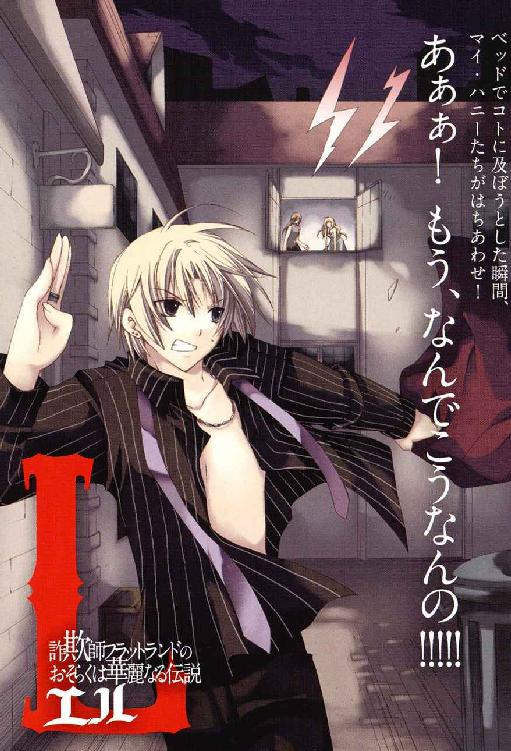
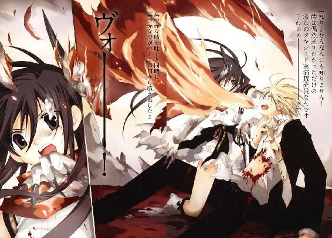
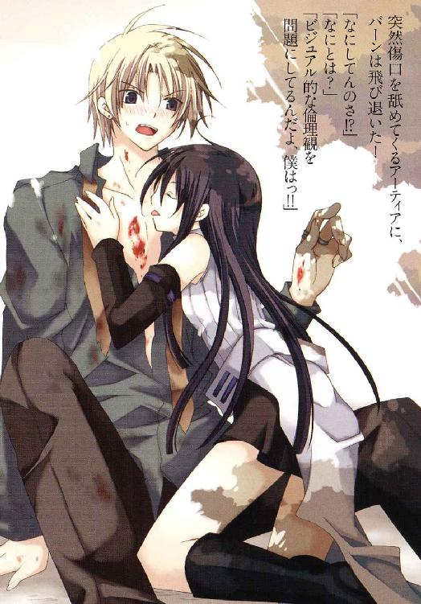
Ｌ
詐欺師フラットランドのおそらくは華麗なる伝説
坂照鉄平

富士見ファンタジア文庫
本作品の全部または一部を無断で複製、転載、配信、送信したり、ホームページ上に転載することを禁止します。また、本作品の内容を無断で改変、改ざん等を行うことも禁止します。
本作品購入時にご承諾いただいた規約により、有償・無償にかかわらず本作品を第三者に譲渡することはできません。
本作品を示すサムネイルなどのイメージ画像は、再ダウンロード時に予告なく変更される場合があります。
本作品は縦書きでレイアウトされています。
また、ご覧になるリーディングシステムにより、表示の差が認められることがあります。
口絵・本文イラスト 水城葵
プロローグ
深夜に扉を叩く者には罰金を科すべきだ。
気の強い友人などはそう豪語してやまないが、エルリー・テンドリックはそうは思わない──生ぬるいではないか。縛り首にしてしまえばいいと思う。
ベッドの上にあぐらをかき、彼女はドンドンと鳴り響いている部屋の扉を睨みつけた。
（まったく......何時だと思ってるんだい！）
そのまま無視を決め込み眠ろうとするが、扉を叩く音は大きくなるばかりだ。ドンドンという音が、いつしかバンバンと切迫した響きに変じている。更に訪問者は薄い戸板ごしに、哀願するような、すがるような声を上げ始めていた。
「......いだ。頼むよ、開けてくれ！」
うるさい、死ね。
いっそ朗らかなほどの怒りだけを込め、彼女はサイドテーブルに手を伸ばし、固くて重くて投げるのに手頃な大きさの物を探し始める。着替えもしていないドレスの腕が置き時計を探り当てる直前、ひときわ切羽詰まった声が耳を叩いた。
「エルリー、僕だよ！ 追われてるんだ、助けてくれ！」
と。そこに至り、ようやく彼女はその声が聞き慣れたものである事に気がついた。
ぱちくりと瞬きして動きを止めた彼女は、その言葉に弾かれたようにベッドを飛び降りる。そしてばたばたと扉に駆け寄りノブに手をかけ──また動きを止めた。それまでで一番真剣な表情で鏡台へ飛びつくと、採掘用のダイナマイトで吹き飛ばしたような寝癖にブラシをかけ、慌てた手付きでドレスの乱れも整える。
「ま、待って──待って、すぐ開けるから！」
うわずった声で叫び返すと、エルリーは錆の浮いた閂錠を外した。
途端、部屋に一人の男が転がり込んでくる。勢い余って倒れそうになった彼は慌てて踏みとどまると、たった今開け放った扉をほとんど叩きつけるようにして閉めた。
「ね、ねえ。ちょっと？ 一体どうしたのさ？」
「ああエルリー......僕の守護天使！ この感謝をどう表せばいいんだろう？」
脂汗を浮かべた男は、怪訝顔をする彼女の手を取り微笑みかけてくる。
「ちょ──お、おおげさだよ」
春の陽光のように暖かな笑顔に、エルリーの胸はまるで少女のようにときめいた。
エルリーとて、曲がりなりにも十五の時から盛り場で働いている身だ。顔が良いだけの男など何人も見てきたし、関係を持ったことだって少なくない。
そんな彼女の心を貫く力を、目の前の男の笑顔は持っていた。
背は高いが、体格自体はすらっとしている。絹糸のようなブロンドの似合う、端整な顔立ちに滲む表情は、自分の容姿を誇る、鼻持ちならない優男とは違う。日々の仕事でささくれた彼女の心をそっと温めてくれる、柔らかな優しさ。
そんな彼だからこそ、エルリーは心奪われたのである。
「ごめんよエルリー、こんな時間に............」
「ううん。あんたのためなら、これっくらいなんてことないさ」
申し訳なさそうな彼に、本心から言ってやる。彼から貰った優しさを少しでも返せるのなら、夜中に叩き起こされる事くらいがなんだというのか。
それでも彼は実直に、もう一度謝罪の言葉を口にした。
「本当にごめん。でも......僕にはもう、君しかいないんだ......」
「......なに言ってるんだい。うれしいよ、頼ってくれてさ」
エルリーの言葉に、ようやく彼の口元に笑みが戻った。
光量を抑えたガス燈の下で、どちらからともなく相手の身体を抱き、唇を重ねた。そのまま崩れるようにしてベッドへ倒れ込む。
彼は悪戯っぽく笑うと、上着とシャツを脱いで彼女のドレスに手をかけ──
「............、っ!?」
突然、ベッドの上で跳ね上がった。
原因はすぐに分かった──部屋の外に、足音。この宿の二階には他にも部屋はあるはずなのに、迷いなくこちらへと向かっているようだった。
「ランプ、ランプを消してっ......!!」
ベッドを飛び降り、脱いだジャケットとシャツを丸めて抱える彼の悲鳴で、エルリーはようやくそれが足音の主を呼び寄せている原因なのだと思い当たる。
だがエルリーが灯りを消すより僅かに早く、扉は乱暴に開け放たれていた。
真っ暗な廊下に立っていたのは、靴の底をこちらに向けた──蹴り開けたらしい──女である。年齢も服装もエルリーとそう変わりはない。サイドにまとめたブラウンの髪が彼女から見れば多少野暮ではあるが、やはりどこかの盛り場で働く女だろう。
「さあ、みつけたわよ！ いつまでも逃げ切れると思わないでっ！」
「まままま待ってフィノ！ 話せば、話せば分かる！」
滲むなどという段階を通り越して水をかぶったような冷や汗を流す彼に、フィノと呼ばれた女は怒りに燃えた視線で詰め寄っていく。
「話すことなんてないわ！ 可哀想に、マリアなんか今回のことを知って、ショックで倒れたまま起きてこないのよ!?」
「......まさか姉妹とは思わなかったもんなぁ......」
「なにか言ったッ!?」
「痛っ!? 待って、待ってフィノ！ 痛い痛い痛い!!」
「ち──ちょっと、待ちなよ！」
事態について行けず呆然としていたエルリーだったが......フィノが力任せに彼を踏みつけるのは流石に見すごせず、二人の間に身体をねじ込む。
「誰だか知らないけど、いきなりやってきて他人の男になんてことするんだい！」
「この男は私の──恋人の妹に手を出したのよ！ 無関係な人が口をださないで頂戴！」
鼻先がくっつくほどの距離で睨み合い、ぎりぎりと歯を軋ませて──ふと、互いに顔を強ばらせる。......今、この女、なんと言った？
「............恋人？」
「............アンタの男？」
互いに低く呟いて、これまた互いを指さして唸る。
ふと予感に駆られて、エルリーは背後を振り向いた。
そこに、庇っていたはずの男の姿は無い。ただ開け放たれた窓から吹き込む風にカーテンが躍っている。転げるようにそこから身を乗り出せば──半裸のまま夜の通りを必死に駆ける、金髪の男の姿が遠くに見えた。
「あいつ、またッ......」
いつのまにか、彼女と並んで窓から乗り出したフィノが悔しげに唇を噛んでいた。その手は窓枠をへし折らんばかりに握りしめている。
（..................つまり、これは......あたしは、騙され......？......ッ）
べき、と窓枠がひび割れる。フィノではなく、エルリーの手に握り潰されて。
急速に小さくなっていく男に向かい、二人は、同時に怒声を張り上げる。
『待ちなさいっ！ バーン・フラットランドおおぉぉぉ────────ッ!!』
夜闇に響くその声に。
もちろん遠ざかる背中は、止まる気配も見せなかった。
第一章 辺境の大嘘つき Burn the Liar
【では母様、そろそろ出発します】
そう言って、ぴしりと折り目正しく一礼する娘に、彼女は小さな笑みを浮かべた。そしてすぐ、その顔を愁色に塗り替える。
【......やっぱり不安だわ。アーティア、本当に大丈夫なの？】
彼女の言葉に、アーティアは不服げに口を尖らせた。
【無論です。この任務は......この使命だけは、私が遂げねばならない責任があります】
【そうね。確かに、適任と言えば適任なのだけど】
そういうことじゃないのよ、と頭を振り、首を傾げる娘を見下ろす。
【あなた、街に降りるのは初めてじゃない。悪い男に騙されたりしないか、母さんもう心配で心配で】
【母様】
アーティアはぐったりと肩を落とすと、銀色の双眸を半眼に細める。
【少しは信用してください。私はそこまで愚かではありません】
【......その自覚のなさが一番信用ならないところなんだけどね】
軽く呻いて、彼女は肩をすくめる我が子を見やった。
──確かに娘は頭が回るが、あまりに里の外を知らないし、素直すぎる。開拓辺境のならず者たちには格好の獲物だ。ただでさえ可愛い子なんだから。
最後は多少主観に揺らいだ不安を弄ぶ彼女に、アーティアはくすくすと笑みをこぼす。
【なんだかいつもの母様と違う。そんなに不安そうな母様を見るの、何年ぶりかな】
【あら、迷惑？ 私だって母親ですもの、娘の身を心配するのは当然じゃない】
【迷惑なんかじゃないよ。ありがとう母様】
拗ねたようにそっぽを向く彼女に、アーティアは笑顔でそう言ってきた。
どこにでもあるような、仲の良い母と娘の会話。
しかしここに第三者がいれば、まるで騙し絵でも見ているような気分になっただろう。
なぜなら彼女たちは、豪雪吹き荒れる雪原に立っているからだ。
【でも母様。これは......私がやらなくちゃならないことだから】
決然と宣言するアーティアが身につけているのは、茜色に染められた薄い襟巻と、衣服から雑巾に至る過程にあるような白織りの衣装だけだ。ベルトも金具も使わず帯で締めるだけの簡単な代物で、保温性はまるで期待できそうもないのだが......この極寒の直中で、彼女は顔色一つ変えていない。まるで暖炉の前で語らってでもいるように、二人は自然に吹雪の中に立っていた。
そして、この光景の奇妙なところはそれだけに止まらない。
【......そうね。あなたが言うのなら、きっとそうなのね】
彼女たちが語る言葉──いや、それは「言葉」とは呼べないのかもしれない。
白く煙る吹雪を的確に裂き、一帯に響く彼女たちの声は、少なくとも人間が喋る言葉ではあり得なかった。長々と、高々と喉を震わせる獣の咆吼のよう。
奇妙な光景、奇妙な言葉。しかしこの光景を見た者に、何がもっとも奇妙か問えば──恐らく、娘を見下ろし苦笑を浮かべる彼女自身だと答えるだろう。
【遂げて見せなさい。危険は同時に、目指す高みへあなたを引き上げてくれる】
【遂げて見せます。白峰ノルグの里に生きる、星守る茜鱗の一人として】
再びかしこまった声で、アーティアは鋭く顔を引き締めた。そこにはすでに、母親と笑っていた娘の面影はない。決意を秘めた、狩人の顔だ。
【それでは、行きます】
【使命を果たしなさい、アーティア・アリア・ノルガンディア。可愛い私の娘よ】
咆吼のような言葉を交わすと、アーティアは茜色の襟巻を飛ばされぬようしっかりと押さえつつ、あっという間に吹雪の向こうに消えていった。
豪風に舞う黒髪が見えなくなるまでその姿を見送って、彼女は大きな──吹雪を吹き飛ばすほど大きな溜め息をつく。
【......やっぱり不安だわ】
自分もついて行きたいが......それが出来ないこの身体が恨めしい。
人目にさらせぬ鋭い牙爪や、長い首。水晶のように透き通った角に銀白色の鱗で覆われた尾、それに皮膜の張った大きな翼へ、順繰りに呪いの文句を呟いて。
威風をまとう銀色の竜──雪竜ノルガンディアは河でも堰き止められそうな巨体を雪原に横たえ、吹雪混じりの盛大な溜め息をついた。
◆□□◆
一年半。日数にして、およそ五百五十日。
それを長いと感じるかどうかは人それぞれだろう。たとえばバーン・フラットランドにとって一年半は、同じ街で仕事をする期間としては法外に長い時間であると言える。
「......で、それから一晩中逃げ回ってたわけ？」
「一晩どころじゃないよ」
木製のカウンターにぐったりと顎を乗せたまま、バーンは目の前でタンブラーを磨いている女性を見上げた。注文したラムのグラスには手もつけていない。
「ついさっきまで、ゴミ箱の中でキャベツの芯と一緒に息をひそめてたんだぜ。身内なら身内って言ってくれれば、僕だって手なんか出さないのにさぁ」
「なんか臭うと思ったら......ああ、まだ野菜屑ついてるじゃない。もう」
染みついたゴミの臭いに鼻をつまみながらも、女性は磨きかけのグラスを置き、情けない顔をする彼の頭からニンジンの皮を払い落としてくれる。
「潮時なんじゃないの？ そろそろ足洗いなさいよ、こんなヤクザ商売」
「カロリア、そりゃ偏見に基づく誤解ってもんさ」
「あら、そうなの？」
むくりと身体を起こすバーンに、彼女──カロリア・アルバはおどけて笑いかける。バーンと同じ、だがよりきめ細やかなブロンドが、肩口で躍るように揺れた。
変な折り目のついてしまったジャケットを適当に手で伸ばし、彼は大きく腕を振る。
「こいつは真っ当なビジネスだよ。女の子と仲良くなることを咎める法なんてありゃしないんだ。少なくとも、この開拓辺境にはね」
芝居がかってまくし立る彼に、カロリアはけらけらと笑い、
「で、今度はなんて言って騙したの？」
「......。家族のために出稼ぎにきてるけど、本当は画家になりたい労働青年」
問われたバーンは、途端に声のトーンを落としそっぽを向く。
カロリアはタンブラーを棚に戻し、呆れ顔で腰に手を当てた。彼女には、幌布のパンツに綿のシャツというラフな格好もあってか、はすっぱな仕草がよく似合う。
「〝嘘つきバーン〟の嘘にしちゃ、ちょっとお粗末なんじゃない？」
「や、これが案外まかり通るもんでさ。苦労してる子ほど信じやすい」
悪びれない態度で言って、バーンはグラスを取り上げる。
彼は出稼ぎに来ているわけでもなければ、無論、画家を志しているわけでもない。
手足ではなく、顔と舌で金を稼ぐのが彼の商売だ。
「なんにしても、詐欺師をビジネスなんて呼ぶ奴はヤクザっていうのよ」
「詐欺師はひどい言いぐさだよ。いいかい？ 今日も世間にはロマンスを求める女性と、日々を生きるのに精一杯で夢見る暇もない現実が満ちている。僕はそんな現実を超え、彼女たちの夢を叶えてあげているのさ」
期間限定でね、と締めくくり、彼は人好きのする微笑みを浮かべる。確かに、とりわけ体裁の良い言葉と解釈ではあるが、まるきりの嘘を言っているわけでもない。
バーン・フラットランドの仕事とは、つまるところこうだ。
相手の気に入る身の上を騙り、「客」と定めた女性に近づく。そして親密な関係の続く限り養ってもらい、なにかの具合で不都合が生じれば、置き手紙の一つも遺してまさに夢であったがごとく姿を消すのである。
詐欺師というより情夫だのジゴロだのと言った方が正しいような生活だが、中央から離れた開拓街ではあまり浸透している呼び名ではない。......それはともかく。
「冗談抜きに、そろそろ潮時と思うけどね。あなた、そのうち街中の女から縛り首にされるわよ？ ここだって別の店の子が来ることくらいあるんだから」
彼の笑顔に肩を揺するだけで応じ、カロリアはカウンターの中から周囲を見回した。なんとなくその目線を追って、彼も背後を振り返る。
酒場『迷えるろくでなし』はそれなりの広さがあるが、現在、二人の他に人はいない。
「......ま、考えときなさいよ。それより今は、イイ話を教えてあげる」
妖しく微笑み、カロリアは不意に目を細めた。カウンターに肘を預けると、小さく指を動かして顔を寄せるよう合図してくる。
「よく聞いて。仕事の話よ」
「僕らの愛の語らいを邪魔するなんて、無粋な奴もいたもんだね」
「つまんないジョーク聞いてる場合じゃないの。真面目に聞きなさいよ」
嘆くバーンの耳をつねって引き寄せ、カロリアは早口気味に囁いた。
「今晩、さる屋敷でパーティがあるの。あなたはそこにとびきりセクシーにキメて出席して、一晩とあるご夫人のお相手をしてあげるだけ。どう、やる気ある？」
「ある、あるけどカロリア、ちょっと力入れ過ぎっていうかごめん、軽く耳痛いんだけど」
小声で早口に主張すると、彼女はにやりと笑って耳を解放してくれた。
「そうこなくちゃね。依頼人はエルネスト・バルボーニ。愛人と遊んでる間、おっかない夫人の目を引きつけておけってことらしいわよ」
「......こういっちゃなんだけど、むちゃくちゃカッコ悪い依頼だね」
「逆玉の婿養子って噂だし。体面とかいろいろあるんでしょ」
耳を押さえ涙目で呻くバーンに、カロリアは気のない様子で腕を組んだ。
サルーンには様々な人間が集まってくる。
仕事上がりの労働者はもちろん、バーンのようなチンピラから辺境を渡る旅人まで。当然、中にはお天道様に顔向けできない類の道を歩む者も少なくない。そういった連中向けに非合法な仕事を仲介するのも、サルーンの重要な役割だ。が......
「......僕がやりたいのは、もっとビッグなビジネスなんだけどなぁ......歴史に名を残すとまでは言わないけど、せめて新聞を賑わすような一大事業をさ」
「寝言言わないでよ。いま回せる中じゃ一番実入りのいい話なんだからね」
「分かってるよ、カロリア。感謝してる」
唇を尖らせる彼女に、バーンは小器用にウインクしてみせた。
「失った愛を忘れさせてくれるのは新しい愛だけさ。......手持ちも寂しいし」
ポケットから出した硬貨を渋い顔でカウンターに置き、スツールを立つ。彼のなけなしの財産を手際よく回収しながら、カロリアが唇の端を持ち上げた。
「パーティは九時からよ。招待状を渡すから、後でまた来てちょうだい」
「オーケイ。......あ、それはそれとして、シャワー貸してよ。クラリスとランチの約束があるんだ。その後シャロンとリタにも会わなきゃいけないしさ」
「懲りなさいって、少しは」
上着についたゴミの臭いに顔をしかめるバーンに、カロリアは嘆息混じりに店の奥へ顎をしゃくった。
◆□□◆
大陸の片隅でイーネルアイグレス州国が建国宣言を果たし、百年あまり。その百年の歴史は、およそ発展と開拓の歴史であったと言って良い。
『先駆者に登録した個人・団体は、州国に貢献する限りにおいて、半自治権と共に開墾した土地の所有を認められる』──
夕暦三年に定められた州国法の一条項は、発足当時の資金難に悩む行政議会が「せいぜい国土開拓の一助にでもなれば」という程度の考えで施行したものだったが......それは実に、期待以上の効果を示すことになった。
ある者は交易の要所となる街を築いて。
ある者は穀倉地帯となる肥沃な土地を発見し。
またある者はより単純に、巨大な金鉱を掘り当てた。
開拓辺境ではツルハシ一本で成功を掴める──人々は辺境に魅せられた。
獰猛な害獣、過酷な環境。そして最も危険な一要素......先駆者は時に荒野にはびこる障害に負け、打ちのめされる。しかし、諦めることだけはしなかった。貪欲な腕が荒れ地を拓き、不屈の足が地図上の空白を駆逐していった。
開拓街アビスパスもまた、そんな先駆者が荒野に灯した篝火の一つである。
複合企業『アビスパス』の主導で拓かれた、辺境指折りの経済力を誇る開拓街。ガスや水道設備に、一部とはいえ電線まで完備された開拓街など他にはない。それだけでこの土地を拓いた男たちの偉大さが伝わってこようというものだ......が。
「よ、よく来てくれた。本当によく来てくれた。か、か、歓迎しよう」
目の前の、大きな眼球でせわしなく周囲を窺っている骸骨のような男から威厳を感じられるのかと訊かれれば、これには首を傾げざるを得なかったが。
男は小刻みに震える手を差し出し、神経痛でも起こしたように顔面を引きつらせた──理解するのに時間がかかったが、微笑んだらしい。
「ば、バーン・フロットロンドだな。仲介屋から話は聞いた。なんでも女を騙すのに使うには、もも、もってこいの男ということだが？」
「......はい、ミスター・バルボーニ。そのためのバーン・フラットランドです」
微妙に間違われた名前を強調し、バーンは「仕事」の依頼主、先駆者エルネスト・バルボーニの手を握り返す。紙粘土のような手触りだった。
彼らがいるのは、楽士隊の奏でる音楽と紳士淑女の笑い声に満ちた、今夜のパーティのためにセッティングされた中庭である。丁寧に手の入った庭園には冷えたシャンパンやワイン、贅を尽くした料理の数々が並んでいて、ここが荒野の直中にある開拓街であることを忘れてしまいそうだ。
「そ、そうかね。それを聞いて、あ、安心したよ」
密かな揶揄に、エルネストは気づかなかったらしい。かくかくと頷き、痩せすぎた身体からは想像もつかない俊敏さで背後を振り返る。
「待たせたねシャルロッテ。か、彼が新しい部下の、バーン・フレットサンド君だ」
「ふうん、このコが？......随分若いのね」
頑なに言い間違える彼を押しのけ、一人の女性がこちらを睥睨してきた。
歳は三十そこそこだろう。切れ長の眼がきつい印象だが、アップにまとめコサージュをあしらったブルネットにはよく似合っていた。小粒の宝石を細工した豪奢なイブニングは胸元が大きく開いており、覗く肌にはまだ張りがある。
（スタイルも良いし、まあ美人ではあるかな。......あんまりタイプじゃないけど）
意識して肩肘を張るバーンを、シャルロッテは妖艶な眼差しで見下ろす──やけに上背があると思ったら、ヒールの高さが尋常ではなかった──。
「フフ、緊張してるのね......可愛いコ。気に入ったわ」
夫人が不穏当な笑みを浮かべるのに、エルネストは露骨に顔を緩ませた。
「そ、それはよかった。......そ、それでは私は明日の朝まで、し、仕事の話があるから。あ、後は頼んだよ、フライドボンド君」
「そんな揚げた接着剤みたいな男は知りませんがフラットランド了解です、ボス」
わざとやってるんじゃないかと思ったので半眼で見つめてやるが、エルネストは動じた風もなく不気味に笑んで、ふらふらと人混みの中へ去っていった。
夫の方は一顧だにせず、シャルロッテは白い歯を覗かせる。
「さてと......なんだか疲れたわ。部屋で休みたいの、ついてきてちょうだい」
「......え、よろしいんですか？ 賓客の歓待も貴女の仕事では」
「いいのよ。今夜の『主賓』はもう到着してるんだから」
さも面倒臭そうに答え、シャルロッテは庭の一画に視線を送った。そちらを見ると──なにやら人だかりが出来ている。人垣の向こうに、山高帽の先が突き出ていた。
シャルロッテが耳元に口を寄せ囁いてくる。
「『アビスパス』のシム・リム・アビスパ。今日は彼とバルボーニ家の提携契約記念のパーティだもの。......エルネストから聞いてないの？」
「は？ あ、いや、度忘れしていました。はは、お恥ずかしい......」
笑ってごまかしながら、バーンはもう一度人垣の方を見やった。
シム・リム・アビスパ──正式にはシム・リム・アビスパ・ジュニア。
国内有数の複合企業『アビスパス』の創設者、シム・リム・アビスパの二世にして、開拓街アビスパスを拓いた男。先駆者としては最も成功した男と言っても過言ではなく、辺境を拓くことで膨れ上がった総資産は国庫の額に匹敵するとも噂される名士だ。
（さっすが......バルボーニほどの大商家になると、話のスケールも桁外れだ）
日銭もままならずひいひい言っている自分とは大違いである。
ぼんやりと我が身を顧みていると──不意に右耳に痛みが走った。
「......バーン？ バーン！ ねえ、聞いているの？」
バーンの耳を指でつまんだシャルロッテが、不満げに声を尖らせる。
「しょうがないコね......ワインを取ってきて欲しいって言ったのよ」
コルセットで締め上げた腰に手を当てて、シャルロッテは耳を解放した。そしてその手で自分の耳元を探り、イヤリングを外して彼に握らせる。
「東棟の厨房で、チーフ・シェフにこれを見せなさい。とっておきのボトルを出してくれる手はずになってるから」
「と、とっておき......ですか」
『とっておき』のイントネーションに穏やかでないものを感じて引きつるバーンの頬に、シャルロッテは不穏に微笑み指を滑らせた。
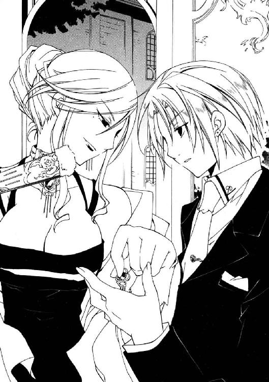
「私の部屋は西棟の二階よ。ランプを点けておくから、早く来てね？」
「青のアトラス・ライト──西部リバーギャロウでは、最も愛しい人に贈る石とされています。沈む陽よりもなお速く、貴女にこの石を届けに参りましょう」
渡されたイヤリングを掲げる彼に、シャルロッテはへえ、と目を丸くする。
「知らなかったわ。その石、そんな意味があったのね」
「ないんじゃないかな......」
というか、即興のでっちあげである。
独り言は聞かれなかったらしく、シャルロッテはさっさと屋敷へ歩いていった。安堵の息をつき、バーンは肩を落とす。
「生活のためとはいえ......やれやれ。とんだお仕事だよ、ホント」
のろのろと歩き出した途端──ふと軽い衝撃を感じ、身体が傾いだ。
振り向くと、黒髪を白いドレスの背に流した女性の姿が目に入る。通り過ぎようとしてぶつかってしまったのだろう、小柄な彼女は大きく体勢を崩していた。
「ああ、失礼を、レディ。お怪我は────、？」
頭でなにか考えるより早く微笑み、手を差し伸べた所で、彼は声を詰まらせた。
女性がゆっくりと振り返る。長い髪がふわりと躍り、茜色の襟巻が弧を描く。そしてこちらを向いた顔は──細長く尖った、蜥蜴の顔だった。
「..................」
黙って見返してくる蒼銀色の鱗に覆われた顔からは、表情というものが読み取れない。
思わずバーンは言葉を失い──ややあって、ふと気がついた。
蜥蜴の両眼、銀色をしたその瞳が、人間のように丸い形をしている。しかもその双眸は幾分、眼窩に沈み込んでいるようで、つまるところ、これは。
「か、仮面......？」
古い貴族の血を引く人々は盛装する際、家柄を誇るため独特の仮面を身につけるのだという話を、昔「客」から聞いたことがある。現に見回してみると、決して多数派ではないものの参加者の幾人かは不思議な意匠の仮面を着けているようだった。
「な、なんだ、はは.........あービックリした」
胸をなで下ろして、バーンは大きく息を吐き出す。仮面の女性は怪訝そうに首を傾げていたが、結局、無言のまま屋敷の方へ歩いていってしまった。
「あ、ち、ちょっと待って──」
黒髪の揺れる後ろ姿に手を伸ばした時には、その姿は人波の向こうに消えている。
伸ばした腕を決まり悪げに戻し、バーンは頭をかいた。
（なんだったんだろ......まだ子供だったよな）
彼より頭一つ以上背が低かったし、細い手足は痩せているというより健康的に引き締められた印象で、遊び盛りの腕白な子供のそれに近かった気がする。
それにあの仮面──初見のイメージから蜥蜴だと思っていたが、蜥蜴にはあんな鋭い牙も、水晶のように透き通った二本の角も生えてはいまい。貴族の装身具というより漂泊商人が売り歩く玩具のような、子供が喜びそうな冗談じみた意匠だ。
「牙と角を生やした蜥蜴......なんの動物だったっけ？」
また会う機会があったら訊いてみるとしよう。今は、仕事の時間だ。
水晶のイヤリングを軽く放り上げ、彼は再び、人々の間を縫って歩き出した。
──仮面の下で息を殺し、少女は灯りの点いた窓の下に忍び寄る。
バルボーニ邸、東棟の裏手。夜も更けてますます賑やかさを増す中庭とは逆に、ここには見回りの使用人すらやって来ない。
音を立てないように息を吸い、そっと窓の中を覗き込む。
「い、い、いやはやめでたい。今夜は、今夜は実にめでたい夜です」
中には数人の人間がいた。
戸口には亡霊のように痩せ細った男と、彼の腕に組み付き、けばけばしい笑顔を振りまく桜色のドレスを着た女。
「バルボーニ家と貴社の提携で、こ、この街は一層の発展を果たすことでしょう」
「あー、うん。別に」
気のない声で、明らかに話自体を聞いていなかった返事をしたのは、ソファに座っている人物だった。窓の外からでは、ソファの背から伸びる帽子の先しか見えない。
「それより......分かってるよね？ 確かに、契約は結んであげるよ。いいかい、契約なんだぜ。キミがボクから利益を受け取る気なら、キミはボクに返すべき代償を保証するべきだ。違うかい？ 違わないよねえ」
帽子がぐりん、と、首のこりをほぐすように一回転する。
「......つまり、今夜ここにボクたちがいたことは、秘密に出来るんだね？」
「そっ、それはもう！ 使用人たちにも、し、しかと言い含めております」
「それさえ手帳にメモしてあるならいいよ。さっさと行って愉しんでくれば？」
帽子の答えに、男の顔が目に見えて晴れやかになった。昆虫じみた動作で踵を打ち合わせ、ぺったりと撫でつけた頭を下げると、女を連れそそくさと退室していく。
二人の声が扉の向こうに消えて数秒後。彼女の位置からでは見えない場所に向かい、帽子は酷薄な笑いを含んだ声で呼びかけた。
「人払いは済んだ。早速だけど商談といこうか、オーツ君」
（............ッ！）
口にされた名と、それに応えて進み出てきた人物に──彼女は、もう少しで叫び声を上げるところだった。
オーツと呼ばれた男は、窓に顔を向ける位置に腰を下ろす。
「......分からねぇな。ここよりアンタのオフィスの方が、百倍安心できると思うがね」
不服げに言う男は、かなりの巨漢だった。天井の照明も掴めそうな長身を、鉱山夫とは付き方の異なる尖った筋肉が覆っている。傷みきった長いブロンドを所々ライン状に黒く染め、傷だらけのコートやブーツをまとう悪党然とした格好だが......答える帽子は気にもしていないようだった。鼻を鳴らすような、奇妙な声を上げる。
「ふはッ。そうだよ、誰だってそう考える。だからあえてボクのオフィスは使わないのさ......それより、キミを追って来るっていう『同族』はどうなんだい？」
「そのために仲間を待機させてんだろうが？ 心配ねぇよ......連中は腕利き揃いだ」
巨漢が心底、鬱陶しそうに吐き捨てた。
少女はそっと息を絞って、背後に手を回し、腰帯に吊した革袋に触れる。
（──腕利き揃い、か。確かに皆、腕利きと呼べた。......私が、そうさせてしまった）
取り出したものは、手袋。
二の腕まで包み込むそれは、中庭の貴婦人たちの物のように上品なシルク地ではない。顔に着けた仮面と同じ、蒼銀色の鱗を縫製した無骨な代物だ。五指の先にはそれぞれ、月明かりを鈍く照り返す刃が縫いつけられている。獣の爪のように湾曲した刃は金属とは違う、磨き上げた骨のような光沢を放っていた。
（だから、私が止めなくちゃならない）
少女には似つかわしくない恐るべき凶器に、慣れた様子で手を滑り込ませていく。
【それが......せめてもの償いだ、ブランディン・オーツ！】
青白い月の下、人ならぬ仮面に顔を隠し異形の爪を身につけて、鋭く長い咆吼を喉からこぼす彼女は──まるで白く鋭い、一本の牙。
暗闇の底で息を引き絞り、牙は、己を振るう機を窺い続けた。
「ああ、今夜はあんたが奥様の......大変だねぇ、まだ若いのに」
「............」
厨房で、中年のチーフ・シェフから指定のワインと同情の視線を貰い。
微妙な心境で廊下を歩きながら、バーンは受け取ったボトルを眺めていた。
「シャトー・ゼタヴィ＝ヴァの二十年物か......まあ、良い物っちゃ良い物だけど」
コルクに、封をし直した形跡があるのはどういうわけか。
試しにランプに透かしてみると、中の液体はワインと言うには少し粘液質に過ぎるように思えた。見なかったことにしておく。
「興奮剤とかならまだ良いけど、まさか麻薬の類じゃないだろうな......ん？」
瓶のラベルを睨みながら廊下の角を曲がった、丁度その時。
前方、左右に十数も並んだ扉の一つから見知った姿が廊下に現れた。ドレスの女性を連れている、おそらく生物的な限界まで痩せこけた男──一度見たら忘れられないが、好んで覚えていたくは決してない風貌の、エルネスト・バルボーニ氏である。
「なにやってんだ、あのオッサン。こんなとこで......」
扉を閉めて去っていく細い背中を見送りながら、バーンは眉根を寄せた。
エルネストの寝室は、ここ東棟ではなく本棟の二階、屋敷の南端にある。「妻は絶対に本棟に立ち入らせるな」と事前にしつこく念を押されたので間違いはない。
首を傾げつつ、その扉の前に差しかかる。と──部屋の中に、話し声。
『──で？ キミが望む利益を聞こうじゃないか』
『最初に決めた通りだ。金と、人間社会での立場の保証......話はこいつに尽きる』
男の話し声が二人分。片方は低く重い壮年の声音だが、口調は子供のように落ち着きがない。後に答えた方はやけに粗野で、荒々しい調子である。
好奇心をくすぐられ、ボトルを床に置いてそっと扉に耳をあてる。が。
（......うわわわわわっ!?）
エルネストがきちんと閉めなかったのか、少し触れただけで扉が開き始めてしまった。慌ててノブをつまみ、扉を止める。
身を竦ませるが、会話は変わらず続いている様子だった。安堵に肩を落として、改めて慎重に部屋の中を覗き込む。
「ならボクに否やはない、契約は成立だ。そう、契約なんだ。つまり──」
「俺が返すべき代償を保証しろッてんだろ？......ほらよ」
室内には、向かい合って座る男たちの姿があった。
一人は薄汚れた風体の、がらの悪い大男だった。彼は小机に載せていたブーツを下ろし、代わりに懐から掴みだした何かをそこに置く。
「ふはッ。これが──」
もう一人の方の男が、鼻から抜けるような笑い声をこぼした。
こちらは対照的にひどく背が低い。そのくせビア樽ばりの太鼓腹という、玩具のような体型である。脂肪で膨れた顔の上には背丈を補うような長い山高帽が載っていた。不釣り合いすぎてむしろ滑稽なのだが......その帽子には見覚えがある。
先程、中庭で多くの人に囲まれて揺れていた帽子。シャルロッテはその帽子を指して、ある大人物の名を挙げていた。シム・リム・アビスパ・ジュニア。
（......え、あれが？ ちょっ......うっわぁ、台無しじゃん）
思い描いていた「開拓辺境で最も成功した男」の像からかけ離れた容貌に、バーンは裏切られたような気持ちで呻いた──勝手な話だとは思うが。
シム・ジュニアは張り詰めた夜会服を軋ませ、男が置いたものを取り上げた。
「《罪人竜の息吹》......今から、そいつはアンタのものになる」
「ふはッ、全くオーケイだ。オーツ君、ボクたちは良い友人になれるみたいだよ」
突き出た腹を叩いて、彼はソファを飛び降り──座ると足が床につかないらしい──男へ右手を差し出す。男は肩をすくめ、その手を握り返した。
（《罪人竜の息吹》......？ なんだろ。くそっ、よく見えないな）
バーンはつま先立ちに伸び上がり、必死に《罪人竜の息吹》とやらを拝もうとする。
「──ッ!? 誰だッ！」
その時、男が不意に顔を跳ね上げた。すわ気づかれたかと、バーンは肩を縮めるが......そうでないことはすぐに分かった。
突然、耳障りな破砕音を奏で、部屋の窓が爆裂する。そして降り注ぐガラスの雨と共に、小さな白い影が室内へ転がり込んできた。
シム・ジュニアが振り向くより早く、影は彼の後頭部に激突する。肉を叩く重く沈んだ音をたて、丸い身体が砲弾のように弾き飛ばされた。
侵入してきた影は部屋の中央に立ち、剣呑に喉を鳴らす男と睨み合う。
長い黒髪を躍らせ、あちこちが破れた白いドレスに身を包む影の正体は──蒼銀の鱗で編んだ仮面を着けた少女だった。
（あれ、まさか......さ、さっきの子!? なんで!?）
見間違えようもない。先ほど中庭でぶつかった仮面の少女である。
少女が仮面に手を触れた。その腕も、同じ鱗の長手袋──十指全てにナイフがついたそれを手袋と呼ぶのはかなり抵抗があったが──に覆われている。
瞬間、男が動く。岩のような拳を腰だめに構え、大きく息を吸い込んだ。それに応じるように彼女も仮面を半分持ち上げ、静かに息を溜める。そして──
少女の口から渦を巻く猛吹雪が、男の口から轟音を放つ稲光が吐き出された。
「............、は......？」
絡み合って弾け散る吹雪と稲妻を見つめて──バーンは、ぽかんと口を開ける。
自分は今......なにか、致命的な光景を目の当たりにしたのではないか？
【────────!!】
少女が聞いたこともない言葉で叫んだ。男もまた、同じように彼女に怒鳴り返す。
それは人間の言語と言うより、まるで、獣の咆吼。
「なんてこった──」
事ここに至って、バーンはようやく扉の隙間から目を離すことが出来た。
（思い出した......あれ、蜥蜴なんかじゃない）
脚がもつれて転倒する。尻餅をついたまま、彼はがちがちと歯を鳴らした。
少女の仮面が頭をよぎる。蜥蜴にも似た、鋭い牙と天衝く角を持つ、地上に比肩するもの無き最大の生物。開拓辺境に潜む最悪の天災。最も危険な一要素。
即ち────竜！
（あいつら......竜徒だ──ッ!!）
声なき声で悲鳴を上げた直後、再び吹雪と雷鳴の轟音が膨れ上がり──
すぐ前にいたバーンを巻き込み、扉が粉々に吹き飛ばされた。
◆□□◆
竜という怪物は、とかく辺境では嫌われる。
あらゆる生物の始祖であるとされる地上最古の生物は、同時に何者も太刀打ち出来ない凶悪な暴君だ。火砲も通さない鱗や、岩をも噛み砕く牙と顎──何より彼らの《息吹》に抗しうる術を、未だ人間は見いだせずにいる。
『竜の《息吹》は自然を支配する』。その学説の真偽はともかく、竜が暴風や稲妻を吐き出すことがあるのは事実だ。夕暦九年、五千人の兵から成るドゥドゥカ開拓護衛軍が、雹のつぶてを吐くハヌンタット河の灰色竜の前に壊滅した事件はあまりに有名である。
絶対的な生息数が少なく、そう頻繁に目撃されるわけではないのが唯一の救いだが......その救いをすら打ち砕く存在が、辺境には潜んでいるのだ。
それが竜徒──竜に与して人間を襲う、《息吹》を操る人間たちである。
◆□□◆
目を覚ますと、そこは真っ暗な闇の底だった。
一分の隙もない完璧な暗闇。背中に触れる床の感触がなければ、自分がどちらを向いているのかも分からなかっただろう。床の......
......なぜ、床に寝ているのだ？
（──そうだ。僕、爆発に巻き込まれて......、？）
途端、身体がすっと冷たくなる。強引に体温を引っこ抜かれるような感覚──あの爆発で大きな怪我でも負ったのか。そうだ、自分は死に瀕しているのだ。
自覚すると同時に、意識が急激に覚醒する。
「冗、談じゃない......こんなとこで、死んでたまるかッ......!!」
彼はぎしぎしと身体を軋ませ、上体を起こした。
「踏ん張り時だぞ、僕。ガッツを見せろ。くじけなければ、絶対助かる......！」
激痛をこらえて瞼を持ち上げ、まずは一番痛む胸を見下ろす。
爆散した破片で切ったのか、服ごとざっくり裂けた胸が血で赤く染まっていた。
「あ、だめだこりゃ......」
見なきゃよかったと後悔しながら、くじけたバーンは再び倒れ込む。
「嘘だろ、神様ぁ......。僕、こんなところで、ッふ、ぐッ......!!」
逆流してきた血に喉が詰まる。部屋の方ではまだ、少女と男の咆吼が言い争うように交錯していた。さらには、時折聞こえてくる爆音──もう勝手にしてくれ。
暗転していく意識の中に、これまで愛を交わした女性たちの姿が浮かんできた。
（フィノ......マリア、エルリー......クラリス、シャロン、リタ......ミレーユ、ラピス......違った、ラティス......エイラ、ドロシー、サラ............もういいか......）
全員を思い出していると途中で死にそうだったので、適当に回想を切り上げる。
「ちくしょう──死にたくないよぉ......ッ!!」
最期に残った原始的な願いは、気道を塞いでいた血塊を一瞬だけ吹き飛ばした──と。
ひときわ大きい爆音が轟き、バーンの視界を、一筋の光が切り裂いた。
（......？）
それは緩やかな放物線を描いて飛ぶ、緋色に輝く小石だった。まるで水の飛沫のように綺麗な球形の石は──そのまま、彼の口へ吸い込まれるように落ちてくる。
「っぐげっ!?」
驚きに奇妙な声をこぼすが......石の感触はいつまで経っても訪れなかった。代わりに誰かに吐息を吹き込まれたような、不思議に暖かいなにかが喉を通り抜けていく。
（なんだ、これ......？ すごく暖かい............）
墓石のように冷たかった身体を暖め、死の恐怖に凍り付いた胸を優しく溶かすその温もりは──次の瞬間、地獄の灼熱と化して肺腑を焼き焦がした。
「ッぉぁぢゃぢゃぢゃなんじゃそりゃあああッ!?」
誰にともなく抗議しながら、バーンは胸を掻きむしって飛び起きた。四つん這いになり熱源を吐き出そうとするが、呻き声より他、胃液すら出てこない。
「熱ぃッ！ あッついよ死んじゃうよおぉぉ......、ん？ あれ？」
のたうち回っている間にふと、その「異変」に気がつく。力一杯掻きむしっていた胸、真一文字に裂けたタキシードの下にあったはずの傷が、消えていた。
「......うそ。な、なんで？」
正確には傷が消えたわけではない。血を拭えば、焼きごてをあてたような傷跡がそこに残っている。それでも出血は完全に止まっていたし、痛みも感じない。拷問じみた灼熱も徐々に収まりつつあった。眼を白黒させ、とりあえず傷跡をなでてみる。と。
突然、誰かに両肩を掴まれた。
そのまま悲鳴を上げる間もなく押し倒され、さらに胸を膝で踏まれる。息を詰めるバーンへ、襲撃者は恫喝の声を浴びせてきた。
「どこにやったッ!?」
涼やかに鼓膜を揺さぶる、凜とした硬い氷のような声──天井の照明を背負ってこちらを見下ろしているのは、あの仮面の少女だった。
「どこにやったと訊いている！ 答えんと素っ首斬り落としてくれるぞ!!」
「は!? え、ちょ、待ってマジ待って!! なに？ なんなのこれ、ねぇ!?」
指の刃を首に突きつけてくる少女に、バーンは慌てて悲鳴を上げた。
「お願い待って、落ち着いて！ いったいなんの話してるのさ!?」
「黙れ与太者。こちらに飛んできたところまでは、私も承知しているのだ」
やけに古風な言葉で囁きながら、彼女は喉に添えた鉤爪を押し込んできた。鉄ではない、動物の骨のような不気味な感触に鞭振るわれ、彼は必死に頭を働かせる。
こちらに飛んできた──不幸にも、心当たりのある言葉だ。
先ほどの、いかにも怪しい真紅の小石。彼女はあれを探しているのか。
要求されている物は判明したが、状況は好転していない──なにしろ問題の石は、彼自身が飲み込んでしまっているのだ。
（相手は竜徒だ、正直に言ったら、僕の腹かっさばくくらいはやりかねないぞ......！ どど、どうする僕!? どうすればこの場を切り抜けられる!?）
簡単だ、嘘をつけばいい。
そんなものは知らないと、納得させるだけの嘘をつけ！
（嘘、嘘、上手い嘘......早く、早く考えろ!!）
嫌な汗が滲んでくる。普段ならば舌鋒奮迅、いくらでも言い逃れられることだが......立て続けに驚愕にさらされたせいか、どうにも頭の回転が鈍かった。
目を泳がせるバーンに、少女は冷ややかに宣告する。
「胴体に別れを告げるがいい」
「知りませんなんにも知りません！ 僕は偶然通りがかっただけの流しのタキシード実演販売員なんですうわああどんな言い訳だよそれえぇぇぇッ!!」
我ながらとてつもない言い分に、相手が反応するより先に頭を抱える。仮面の奥で銀色の瞳が細められ、喉を押さえつける細腕がわずかに動いた、その時。
視界が白熱した。
愕然と見開かれた少女の目が、白い光に塗り潰されていく。竜の仮面が完全に光へ呑み込まれる直前、身体の上から少女の重みが消え失せた。飛び退いたらしい。
それにほとんど間をおかず──噴き上がった炎が、少女に躍りかかっていった。
「............は？」
呆然と炎の尾を見送りながら──そう、見送りながら──バーンは完全に硬直していた。
少女をかすめて宙を走った炎は、轟々たる余韻と焼けつく熱気を残し、悪夢か幻覚であったかのように霧散する。その一部始終を見届けたバーンは、回転の止まった頭で一瞬前の光景を思い出していた。即ち、
（僕、今..............................ひ、火を吹いた？）
......心境は「まさか」の一語である。
医学を学んだことがないので確かなことは言えないが、おそらく人間の内臓は、火を吹くような構造にはなっていまい。
あまりにもバカバカしい話だ。バカバカしい話のはずなのだ──が。
「......お前、今、なにをした......？」
少女が呻くように呼びかけてくるのに、バーンは混乱する頭を持ち上げた。
半分焼け落ち、用をなさなくなった仮面を脱ぎ捨てながら、彼女はほとんど走るような足取りでこちらに詰め寄ってくる。
「雪竜の鱗を焼くなど、他に考えられんが......いやしかし、まさか......」
思案げに呟く彼女の顔を見上げた瞬間──混乱はいっぺんにぶっ飛んだ。
白い肌のあちこちに煤や泥をつけた少女は、美しかった。
単純に顔立ちが整っているということではない。立ち居振る舞いから漂ってくる、氷を研ぎ上げたような怜悧な清らかさ。その冷たい雰囲気が、凜と引き締めた表情を引き立てていて、着飾るばかりの麗人とは明確に一線を画している。
即座に立ち上がって服の裾を払うと、バーンは怪訝な顔をする少女に素早く、かつうやうやしく手を差し伸べた。
「美しい女性はただ、それだけで一つの奇跡。僕の奇跡の人、ぜひ名前を──」
「があああぁぁあぁッ！」
最高の笑顔と共に言いかけた台詞は、横合いから飛んできた怒声にかき消された。
バーンの手を振り払い、少女が声の方向──部屋の方へ向き直る。
無惨に荒れ果てた室内の、瓦礫の山の中央部。ひときわ大きなキャビネットの下から立ち上がったコートの男が、血走った眼で部屋中を睨み回していた。
「クソッ、あのガキ！ あのガキッ！ 許さねぇぞ、クソッ！ あのガキぃぃッ!!」
狂乱する男を一瞬だけ見やって、少女は小さく舌打ちした。
「退くぞ。ついて来い」
「へ？ は、え？......ぅわっ！」
バーンの返事を待たず、少女は無造作にこちらの手を掴んで廊下を走り出す。転びそうな格好で走らされながら、彼は裏返った声をあげた。
「なっ、な、なんで僕まで!?」
「......確証はない。が、お前に死なれると、困るかも知れんのだ」
「そんなびっくりするほどあやふやな理由でついて来いって言われても......ていうか、君といる方が危ないって！ 僕、まだ顔見られてないし──」
そう言って手を振り解こうとした時、背後で喚声が聞こえた。振り向くと、同じデザインの黒服を着た男たちが廊下を駆けてくる。警備役の使用人たちだろう。
全員、殺傷目的としか思えない凶悪なスパイクを埋めこんだ棍棒を携えている。
「......一人で逃げるか？」
「お供しましょう、ミス・ノーネーム」
一瞬たりとも迷わず答え、こっそりと嘆息。
──なんだか分からないが、とにかくこの場から逃げるのが先決だ。
バーンは打算的に腹をくくると、少女の後について走り出した。
給仕用の台車を運ぶ螺旋状の坂道を駆け登り、二階へ上がる。階下の騒ぎに引きつけられているのか、近くに使用人の姿は見えない。
出窓の一つを蹴り開け、少女がベランダへ出る。慌てて後を追うと、屋敷の裏手──外壁がすぐ目の前に見えた。東棟は他の棟より壁寄りに建っている上に背が低い。屋根に登れば外壁に飛び移るのは難しくないだろう。......足がすくまなければ、の話だが。
「なんの因果で、こんなアクロバットしてるんだか......」
先を行く少女に倣って手すりに上がり、バーンは屋根によじ登る。
背が低いとはいえ二階建ての屋敷の上だ、下手に落ちればただでは済まない。眼下の地面は夜闇のせいもあるのだろうがやけに遠く、深く見える。と。
「ぐッ──!?」
不意に、呻き声。
振り向けば屋根の端、今にも地面へ吸い込まれていきそうな場所で少女がうずくまっている。顔からは血の気が引き、衣服の白よりなお蒼白く闇に浮かび上がっていた。
屋根のプレートに足を取られながら、バーンは危なっかしくそちらへ駆け寄る。
「ど、どうしたの？ あ──ま、まさか怪我でもしたのかい!?」
「っ、は......ふ、ぅッ......！」
ぺたんと座り込んで地面を見下ろし、右手の鉤爪をプレートに引っかけながら、少女は声の震えを抑えて無理やりに力強く言い放った。
「案ずるなッ────腰が抜けただけだ」
「いや案ずるよそんなもん。大丈夫？」
半眼で溜め息をついて、バーンは少女に手を差し伸べる。彼女はしばし、珍しいものでも見るようにその手を見つめて......結局、一人で立ち上がった。
「無論だ。それよりとっとと跳べ、追っ手が来る」
「高いとこ苦手ならこんな逃げ道選ばなきゃいいのに......あ、跳ぶよ。跳ぶってば」
耳聡く聞きつけた少女に睨まれ、バーンはこそこそ屋根を登り始める。
「タキシードで幅跳びする羽目になるとはね、まったく......！」
呻いて、緩く坂道になった屋根を駆け下り、庇近くで思い切り踏み切る。
重力から解き放たれたバーンの身体は、放たれた矢のごとく夜風を切り裂き、木の葉のごとく宙を舞って──最後は湿気た布団のごとく、腹で外壁に引っかかった。
「あだッ！......お、オーケイ。君も急いで......あれ？」
「もう来ている。ぼやぼやするな」
よじ登った壁の上にはいつ跳び移ったのか、すでに少女が立っていた──下は見ないようにして。彼女は月を睨んだままひょいと宙へ踏み出し、音もなく地面へ飛び降りる。そこは無論、硬い石畳の敷かれた街道なのだが......
「人目はない。さあ、お前も急げ」
同じ事をしろとでも言うのか、促すように見上げてくる少女を力一杯無視し、バーンは壁の凹凸に慎重に足を引っかける。苛立たしげな舌打ちの音を後頭部に感じながら、半分ほども壁をはい下りた頃。頭の上で、じゃり、と砂を噛むような音がした。
「──動くな、盗人野郎！」
「え!?......うわああッ!?」
反射的に顔を上げ──その拍子に足を踏み外し、バーンは地面へ落ちていった。短いようで長い一瞬の後、石畳に尻を叩きつけられる。......あまりの激痛に悲鳴も出ない。
涙目で、あらためて壁を見上げれば、塀の上に人影が立っていた。
人影は軽やかに跳躍すると、バーンと少女の間に着地する。あちこちをベルトで締めた細身の服にしなやかな筋肉を包んだ、どことなく豹を連想させる男である。
男は短く刈り込んだ頭を掻き、少女へ視線を向けた。
「やっぱり、追っ手はあんたかい。アーティア」
「カーツマン......貴様まで裏切ったと聞いた時は、流石に失望したぞ」
少女──アーティアは苦い口調で呟き、現れた男を鋭く睨みつける。
（......誰も、こっちには注目してない）
逃げるなら今がチャンスだ──痛む尻をさすって、バーンはそろそろと四つん這いで移動し始めた。二人は、まだ彼の動きに気付かず睨み合っている。
「ブツをよこしてくれ。でなきゃ、久しぶりに一本やり合う羽目になる」
「......よかろう。これも私の責任だ」
言い終えると同時、二人は息を吸う。アーティアは仰け反るように、カーツマンは屈むように。その動作は正反対だったが、見つめるバーンが感じたものは同一だった。
悪寒。寒気。虫の知らせ。まとめてしまえば、嫌な予感。
「ちょっと待......！」
立ち上がって静止の声を上げるより早く、予感は現実になる。
【【───────ッ!!】】
獣の如く、鋭く長い咆吼を轟かせ。
吐き出された二つの暴風が正面から衝突し、爆裂する。大気が上げる断末魔のような風の奔流が、その場に吹き荒れた──当然、バーンを巻き込んで。
突風に押されて転倒したバーンはそのまま二度、三度と後ろ向きに転がっていき、バルボーニ邸の外壁にぶつかってようやく停止する。
「こッ......これだから！ これだから竜徒って奴らはっ！」
ぶつけた尻と後頭部とを抱え、彼は非難がましく叫んだ。
竜徒──人に仇なす、竜の使徒。
『文明の発展は星を滅ぼす毒である』と信ずる彼らは、人間を駆逐し自然に還るため、竜に魂を売って《息吹》の力を手に入れたのだと言われている。
明確な敵意をもって人間を襲う竜徒は、竜そのものよりもはるかに忌み嫌われる。象徴である茜色に衣服を染め、『星守る茜鱗』などと名乗り気取っているようだが、どのみち、凶悪な野蛮人であることには変わりない......
そこではたと、思い当たる。
（......で、なんでその野蛮人同士が争ってるんだ？）
二人は先ほどと変わらず睨み合っている。いや、カーツマンが半歩ほど、立ち位置を右へずらしていた──その左半身に、うっすらと雪を付着させて。
「貴様たちに《息吹》の扱いを教えたのが誰か、忘れたわけでもあるまい」
「っ......は。いやほど分かってるよ、師匠」
見下すように言い放つ彼女に、カーツマンは不敵に笑いかけた。
「......俺も策を用意した。ちんけだが、恐らくあんたを仕留められる策だ」
「戯れ言だな」
「試してみるといい。......いくぜ」
無造作に言い捨てるアーティアに、しかし彼の余裕の態度は変わらなかった。罠にかかった兎を見る猟師の笑みで、彼はゆっくりと息を吸い込み──
「............え？」
──ぐるりと身体をねじると、バーンに向けて《息吹》を吐き出した。
とっさのことに身体が反応しない。逃げることを思いつく暇もない。
鉄板でもねじ切れそうな風の渦に、腕が、つま先が、商売道具の顔が巻き込まれ──
「ぎッ────!?」
身体がひしゃげる直前、横から飛び出してきた白い影が勢いよく彼を突き飛ばした。仰向けに転んだ彼の鼻先を、螺旋に走る風の牙が通り過ぎていく。そして、
「どうだい──師匠どの。油断してるから足下をすくわれる」
「グ............ぅ」
歪んだ嘲笑と、傍らで聞こえたか細い呻き声に、バーンは弾かれるように飛び起きた。
「うわっ!? ちょ、なにやってんだよ君!?」
無惨にえぐられ石畳の剥がれた地面の上──彼を突き飛ばした格好のまま、アーティアが倒れている。ぼろぼろの白の衣装は、あちこちが鮮烈な血の色に染まっていた。
「っ生きている、な......」
抱き起こされたアーティアは、彼女自身が言われなくてはならないようなことを言う。
「動けるなら、逃げろ......死なれたらッ......困るかも、知れんのだ......」
言葉は切れ切れで、銀の双眸も焦点が合っているのか疑わしい──危険な状態だ。
カーツマンが首を鳴らしながら、余裕の口調で言ってきた。
「あんたがわざわざ人間を連れて逃げる理由なんて、そう思いつかない。なら話は簡単だ......お前が持たされてるんだろう？ 例のブツを」
「し、知らないよっ！ ブツってなんのことだよ!?」
最後は真っ直ぐこちらに視線を向ける彼に、バーンはわめき返す。
（くそっ......あーもう、くそっ、もう、くそッ！ なんなんだよ君は！）
怪我のせいか寒さのせいか、小さく震える少女の身体はぞっとするほど冷たい。
（『困るかも知れない』って......そんなんで死なれでもした日にゃ、今度は、僕が困るじゃないか!?）
自分の震えをごまかすように彼女を抱きしめ、泣き顔でカーツマンを見る。
（おっかないけど──放っちゃおけないだろ、バーン！ あいつ、この子を殺す気だ!!）
今、この場を切り抜けられる資本があるならば、それは唯一、この舌だけだ。どんなハッタリを焚いてでも言いくるめなければ......二人とも、殺されるしかない！
「ミスター、取引だ！ 見逃してくれればいくらでも金を払う！」
「乗ると思うのか、そんな話に？」
「あわよくば！ じゃあええと、実は僕は中央から派遣されてきた保安官だ！ 僕を殺せば、君はイーネルアイグレス全土で指名手配されることだろう！」
「仮にも保安官が、他人様の屋敷の塀を乗り越えて出てくとは思えないな」
「ごもっとも！ ならそのアレだ。あーとえーとうーとえーと」
「......もういいか？」
「おっとやめておけ、僕は武器を隠し持ってるぞ！ 抜けば玉散る一万連発のミラクルピストルだ！ いやないな！ これは流石にない!!」
そろそろ自分自身、なにを言っているのか分からなくなってきた。
すがすがしいほど頼りにならなかった唯一の資本に泣きたくなった、その時──突然、胸の奥に火が灯ったような灼熱感が生まれる。
（ッ............まさか!?）
そして再び、今度は確固たる自覚の下、口から燃えさかる炎が噴き上がった。
流星のように夜を裂く朱の炎がカーツマンの胸板に食らいつき、弾ける。
「ギャアアァァァアアァア────ッ!?」
耳を覆いたくなるような叫喚も、炎の狭間に消えていく。
はぜる炎の柱を蒼白になった顔で見つめながら、バーンは怯えた顔で悲鳴を上げた。
「な──なッ、なんなんだ!? いったいなんなんだよこれええぇッ!?」
その時。不意に、冷たい何かが触れてくる。
「......やはりお前が......思い違いでは、なかったか......」
見下ろせば、青ざめた顔のアーティアが、彼の胸に手を突いて身体を起こしていた。
バーンは思わず相好を崩し──続いて、慌てて唾を飛ばす。
「ちょ、だめだめ、動いちゃだめ！ 静かにしててよ、すぐ診療所に......」
「そ......なのは、いいから......、貸せ......」
「い、いいわけないだろっ!? なに言ってるんだ君は！」
安静にしていてくれない少女に気をもみながら、彼は髪を掻きむしった。切羽詰まって混乱する頭を必死になだめ、アーティアを横抱きに抱え立ち上がる。
「頼むからじっとしててくれ！ 話は後でゆっくり──」
「ッ......この......、クッ!!」
彼女は歯がゆげに眉根を寄せると、いきなり両手でバーンの顔を挟み込んできた。そして反射的に抗弁しかけた口に──
「いいから......黙って、口を貸せと言っているんだ!!」
──力任せに、唇を押しつけられる。
ぱちくりと間抜けに瞬きし、思わず呼吸を止めた時......胸に、先程の灼熱が蘇ってくるのを感じた。胸で渦を巻くその熱は喉をせり上がり、吸い込まれるように身体の外へ──おそらくは、アーティアの中へ流れ込んでいく。
何が起こっているのか分からず、彼はただ、アーティアの唇だけを意識した。
と、柔らかな感触は前触れなく失われる。ぱっと彼の腕から飛び降りたアーティアは震える脚で地面に立ち、決然とカーツマンを睨みつけた。
火は消えかけているものの、苦悶の声はまだ聞こえている。魔女の釜の底から響いてくるような呻き声を上げるカーツマンが、炎の間隙から彼女を見た瞬間。
「......ぁぁぁあああアアアアアッ!!」
アーティアの口から、閃光が吐き出された。
闇を断ち、風を焦がして突き進む、緋色がかった白光。炎を研ぎ上げたような光芒がカーツマンの眼前で弾け飛び──大陸をも揺るがすような大爆発が巻き起こる。
「うわ......っ、と!?」
膨れ上がった爆風と熱波にひっくり返りそうになったバーンは、ゆっくりと倒れ込んでくるアーティアを慌てて抱き留め、爆発の余波から逃れるように地面に伏せた。
今日はよく転ぶ日だ。どこか他人事のように考え、爆音が収まってから起き上がる。
アーティアは気絶しているらしく、彼がどいても動き出す気配を見せない。肩をすくめ、改めてその身体を抱き上げる。
辺りの様子は一変していた。石畳はあらかた剥がれるか砕けて、地肌が剥き出しになっている。砕けた地面の向こうには焦げたカーツマンの姿も確認できた。呻き声をこぼしている所を見ると、爆発の直撃は免れたのだろう。
緊張が途切れて息をついたその時──遠くから、聞き覚えのある声が聞こえてきた。
「──そっちだ、走れッ！ ぼやぼやしてんじゃねぇぞ！」
（げ──!?）
その声が、あの稲妻を吐く竜徒のものだと気づいて、バーンは慌てて辺りを見回す。通りの角から、数人の人影が駆けてくるのが遠目に見えた。
（まずい、この子は顔見られてるんだっけ......！）
抱えたアーティアを見下ろし、しばし右往左往して......結局手近な路地に飛び込んで、錆の浮いたゴミ箱に彼女を放り込んだ。
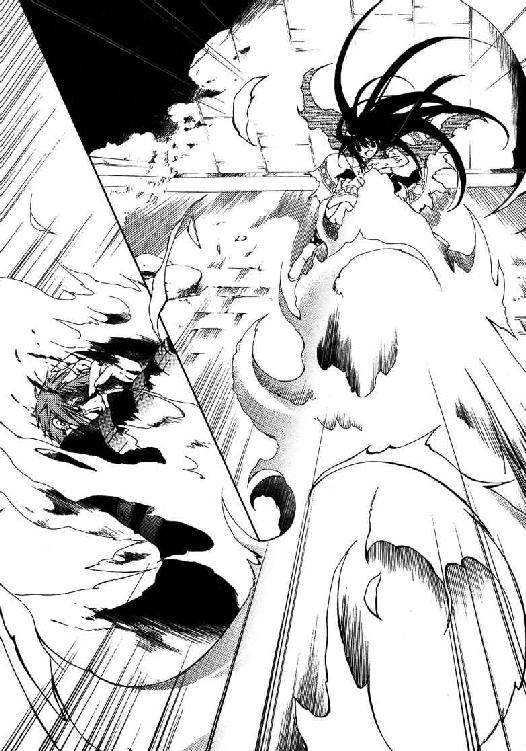
「──おいブランディン、カーツマンだ！ やられちまってる！」
ゴミ箱の陰から顔だけを出し、バーンは通りの様子を窺う。
倒れたカーツマンに駆け寄った二人の男に、後からやってきたコートの男──ブランディンが、ストライプに染めた長髪を掻きむしりながら怒号を飛ばす。
「クソッタレ、ジェド！ てめぇはあのガキを探し出せ！ 俺もすぐに行く！ トゥーコはイナクの所にそいつを担ぎ込むんだ、くたばる前に急げッ!!」
矢継ぎ早の命令に、男たちはすぐさま駆け出していく。一人その場に残ったブランディンは巨体を屈め、食い入るように路面を睨みつけていた。
その彼の背後に丸々とした、玩具の人形じみたシルエットが出現する。
「......『追っ手』は？ 取り逃がしたのかい、オーツ君？」
低く重い、鉄球を転がすような声で語りかけたのは──それこそ鉄球に手足が生えたような体型のシム・リム・アビスパ・ジュニアだった。
「ボクらがしたのは契約だってこと......覚えてるよねぇ？」
「......覚えてるさ、《罪人竜の息吹》は必ず取り返す！ ワケぁねえ!!」
目を細めるシム・ジュニアに、ブランディンは立ち上がって声を張り上げた。
彼らの会話に、バーンは屋敷の中で聞いた会話を思い出す。
（《罪人竜の息吹》......あの時話してたやつか。いったい、なんなんだ？）
あの竜徒の少女に狙われる価値のある宝、ということだろうか。
そんなことを考えていると──ふと天啓のごとく、ある計画が脳裏に閃いた。
どくんっ、と心臓が跳ね上がる。
（あれ......い──ける？ ひょっとして......こいつは、いけるぞ............っ!?）
──危ない橋ではあるが、その分、見返りは巨大だ。万事が上手くいけば大金が転がり込んでくるばかりか、辺境有数の強力なコネクションまで手に入る。
まさに天恵というべき、掴もうと思って掴めるものではない大チャンスだ。
（今夜みたいなケチな仕事ともオサラバできる......ビッグになれる、成り上がれる！）
噴き出す汗を何度も拭い、バーンは生唾を飲み込んだ。
汗ばんだ手で髪に櫛を入れ、タキシードについた埃を払う。胸の裂けたシャツは......これはどうしようもない。可能な範囲で手早く身なりを整えると、彼は出来るだけ堂々とした歩調を心がけて、ゆっくりと街道に歩み出た。
「──お困りのようですね、ミスター・アビスパ？」
朗々と張り上げた声は、予想以上に響き渡った。
すぐに反応したのはブランディンだ。警戒にぎらつく眼で素早く振り返ってくる。
対して、シム・ジュニアは静かなものだった。突き出た腹をゆっくりこちらへ向け、顔の中央に寄った眼を細くする。
「......確かにボクは困ってるけど、それを聞いてくるキミはいったい何者なのかな？」
「価値ある男ですよ。名前はバーン・フラットランド──」
そこで口元に薄く笑みを刻む。
「──貴方に、《罪人竜の息吹》を差し上げることのできる男です」
告げた一言に、空気がぴんと張り詰めた。
緊張が全身に広がっていく。少し気を緩めれば手足が震え出しそうなほどの戦慄に縛られながら、しかし上っ面だけは、必死で悠然とした態度を取り繕って。
（ビビるな、ビビるな......根性入れろよ、〝嘘つきバーン〟！ ここが正念場だ!!）
なけなしの度胸をかき集め──バーンは、計画を開始した。
第二章 始まる災難 Dragonbreath
開拓辺境に出て十年、大概、さまざまな騒ぎを見てきたと思っている。
辺境を渡る者の宿命と言ってしまえばそれまでだが......バーン・フラットランドと出会ってから、トラブルに出くわす頻度は急増した。かくまってくれと逃げ込でくる彼を自宅に隠したり、すりこぎを持って怒鳴り込んできた女をなだめて追い返した回数は、両足の指まで使っても数え切れない。
それでも見捨てられないのは、彼が数少ない友人だからなのか──それとも別に理由があるのか。それは未だ分からない。分からないなら、分からないままで良いとも思う。
「カロリア、かくまって！」
とはいえ。
鶏鳴も止まない早朝から、無惨に破れたタキシードを着て血まみれの少女を抱え現れた男を見捨てられない理由となると、さすがに正体を突き詰めておきたいところではある。
ベッドからはい出してきた下着姿のまま、カロリアは頭をかいた。
「......バーン。私も別に、ＳＭ趣味が悪いとは言わないけれど」
「ないよそんな趣味！ ていうか、ここまでやったらそれもう犯罪だろ!?」
少女を抱えて玄関先で地団駄を踏むバーンに、軽く首をすくめて見せる。
「冗談よ。とりあえず居間に運んで。私、着替えてくるから」
「ああ、助かるよカロリア。今回ばかりは本当に助かった」
ほっと安堵の息をつき、彼は緩んだ笑顔を浮かべた。勝手知ったる他人の家──薄暗い家の中を迷わず歩いていくバーンの背を寝不足の三白眼で見やり、ぼやく。
「あなた、転がり込んでくるたびに同じこと言ってるんだけど、知ってるかしら」
「いやまあ、なんも言えないけど......今回は本当なんだ。すごい事になってる」
情けない顔で振り返ってきたバーンは不意に声をひそめて、にやり、と似合わない不敵な笑みを浮かべた。その様子に、二階の自室に向かいかけていた足が止まる。
「......簡単な話じゃなさそうね。何があったの？」
「全部説明するよ。これからの展望も含めてね」
小首を傾げる彼女に、バーンはそう言ってウインクをして見せた。
◆□□◆
数時間ほど前のこと──バルボーニ邸の裏手に、場違いに明るい声が響いていた。
「『相談役』とでもいうんでしょうかね」
爆発の余熱が残る生暖かい空気をかき混ぜるように、バーンは辺りを歩き回る。
「ほんの少し知恵や腕を提供する、ま、体の良い便利屋とお考え下さい」
「便利屋、ふはッ！ 正直で良い言い回しだねぇ」
鼻を鳴らすのは、丸い短躯に短い手足と、玩具のような体型の壮年の男、シム・リム・アビスパ・ジュニアだ。鼻を中心に絞り上げたような顔面には、笑みが浮かんでいる。
路面に開いた穴まで歩いたバーンは、そこで振り返った。
「その便利屋、目下求職中でしてね......どうでしょう？ 僕を雇っていただけるのなら、手始めに盗まれた《罪人竜の息吹》、取り戻してごらんに入れますが」
「おい──ちょっと待ちな。勝手に進めてもらっちゃ困る」
不機嫌を隠しもしない、低く重たい声が割り込んでくる。噛みつくような眼差しでこちらを睨んでいるのは、ブランディンと呼ばれていた巨漢だ。
「アレはそもそも俺のモンだ。つまらねぇ横槍は入れないでもらいてぇんだがね」
「おやおや......どうやらあなた、開拓辺境のルールに明るくないようだ」
小馬鹿にするような笑顔を浮かべて──内心では相手の眼光に思い切り怯えながら──バーンは、出来うる限りふてぶてしく口元を歪める。
「ここじゃあね、負ける奴が悪いんです。能のない奴には、文句を言う資格もない」
「そうだね。オーツ君、残念ながら彼は正論を言っているよ」
剣呑に唸るブランディンを、シム・ジュニアが手を鳴らして制した。
「......フラットランド君、だったっけ。ずいぶん自信があるみたいだけど、ひょっとして、犯人の行方に心当たりでもあるのかい？」
「それは勿論」
こともなげに言ってやると、ブランディンがぎょっと目を剥いた。シム・ジュニアは変わらずこちらを眺めているが、小さな目だけは、笑っていない。
「詳細は明かせませんが、僕は今、彼女......アーティアと取引できる立場にあります」
「ハッタリだ！」
バーンの言葉を遮るように声を張り上げ、ブランディンが腕を振り回す。バーンはあくまで泰然としたまま微笑み返した。
顔を赤黒くしたブランディンは、シム・ジュニアに向かって声を張り上げる。
「──シム！ まさか、この話に乗るつもりじゃないだろうな!? 俺には分かる！ あいつが......アーティアが、人間と取引なんてするはずはねぇんだ！」
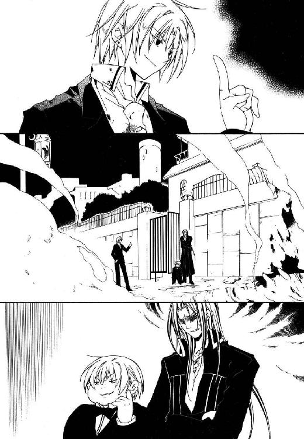
「落ち着きたまえよ。ボクに怒鳴られても困るってものだぜ」
「だいたいタイミングが良すぎるぜ！ 考えろ、こいつは罠だ！ 罠なんだよ!!」
五月蠅げにブランディンの話を聞いていたシム・ジュニアは、それでも言い分には一理あると認めたか、思案げに眉根を寄せて呟いた。
「......ふん、それもそうだね。キミは今夜、どうしてこんな所に？」
ブランディンはしてやったりとばかりに歯を剥くが......当然、この程度は想定している。ちょっと困った風に苦笑してから、バーンは上着のポケットから青い大きな水晶細工のイヤリングを取り出してみせた。
「──この通り、座敷犬ってわけです。後ろ盾がなくてはこんな商売は立ち行きませんからね。バルボーニ夫人なら、パトロンには十分でしょう？」
「ああ、そう言うこと......あのオバサンも元気だよねぇ、いい加減若くないだろうにさ」
口角をつり上げ、シム・ジュニアは意外なほど白い歯を見せた。先程までの緊張をうながす笑顔ではない。少しだけ、申し訳程度に信頼を覗かせた笑み。
「いいだろう、やってみたまえ。ボクの前に《罪人竜の息吹》を持ってくれば、まずは言い値で買い取ろう。キミを雇うかどうかはその働きを見て決めたい」
「すべてを貴方の意にそうように......ミスター・アビスパ」
優雅に腰を折ると、バーンは大通りの方へ歩き出した。そのまま角を曲がって姿を消す──とみせかけて、路地を回って先程のゴミ箱の陰に戻ってくる。
屋敷の前ではまだ、激昂したブランディンが怒声を上げていた。
「気に喰わねぇ......！ 断然気に喰わねぇぞ、あの野郎だきゃあッ！」
「ふはッ。どうにも胡散臭いのは確かだねぇ......彼の言葉、全てが真実ではないな」
突き出た腹を愉快そうに撫でながら、シム・ジュニアが苦笑を浮かべる。
「そういきり立つなよ。信用できない相手でも、使える相手なら使うのがフロンティア流さ。当然、保険はかけるけどね......そうだな、キャリバー君を呼ぶとしよう」
「......連中を動かすってのか？ だが、そいつは──」
「安心したまえ、オーツ君。キミたちへの援助を打ち切る気はないよ」
にこやかとも見える笑顔で言って、シム・ジュニアはもと来た道を戻っていく。
それから肩越しに振り返り、視線鋭く言い放った。
「今はまだ、だけどね」
ブランディンの顔が、暗闇でもはっきりと分かるほど引きつる。
冷えた空気に吐息を溶かして──計画の順調な滑り出しに、バーンはほくそ笑んだ。
◆□□◆
「ちょっと待って。つまりこの子、竜徒なの？」
ことの次第を聞き、カロリアはソファに寝かされた少女──アーティアを指さした。
隣に立って同じように少女を見下ろしつつ、バーンは大きく頷く。
「手当、お願いできるかい？ 悪い子じゃないと思うんだよ。可愛いし」
「......節操ないのもそこまでいけば美徳かしらね」
浅く息をつき、カロリアはそれでも呆れ顔で笑ってくれた。戸棚から薬箱を持ってくると、小さな椅子をソファの横に置いて腰掛ける。
「でも変ね。この子、なんでバルボーニの屋敷にいたのかしら」
傷に消毒液を吹きつけながら呟くカロリアに、バーンは首を傾げる。
「変......って、なにが？ 竜徒なんて週に一度は街を襲わなくちゃ気が済まない野蛮人だぜ。どこにいたって驚くようなもんじゃ、」
「馬鹿ね。それが目的なら、この子が街に入った時から騒ぎになってるはずでしょ？」
「あ」
それは......確かにそうだ。
「別の竜徒と争ってたってのも気になるし......ちょっとワケありの雰囲気よね」
「......いやまあ、そうだけど。この子の事情は正直、関係ないよ」
意外なほど思案げなカロリアに、バーンは気楽に言い返す。
「大事なのは、いかに手際よくこの子を言いくるめて《罪人竜の息吹》とやらを巻き上げるかってことさ。いつかくまってるのがばれるかも分かんないし」
「見切り発車なんだから......いつか痛い目見るわよ、そういうの」
「なに言ってるんだい。こいつはチャンスなんだぜ？」
気のない返事をするカロリアに、バーンは声を大きくした。
「大金が当て込めるだけじゃない、シム・リム・アビスパの仕事なんだ。彼とパイプが繋がるっていうのがどういうことか、わかるだろ？」
シム・リム・アビスパ・ジュニアが後援者につく──それは『アビスパス』という巨大な組織を味方につけるということであり、つまりは、州国内で思い通りにならないことはほとんどなくなるということだ。
「まさに一世一代の大仕事ってやつさ。見切り発車でも駆け込み乗車でも、この好機は逃せないだろ。僕は、一生ただのちんぴらで終わる気はないんだ」
「そりゃまあ......私だって、ずっと辺境で過ごしたいとは言わないけど」
首をすくめて、カロリアは薬箱から包帯を取り出す。
開拓辺境の人間は、ほぼ例外なくそれを夢見る。旅芸人も、漂泊商人も、無宿の悪漢も......誰もが成功を望む。名を上げたがる。
誰でもない誰かでは終われない。
ちっぽけだが決して──特に彼のように見栄を張りたがる人間には決して──抗えないその衝動こそが、イーネルアイグレス百年の歴史の中で数多くの人間を辺境に駆り立て、ひいては州国に発展と繁栄をもたらしてきたのだ。
我が意を得たりと胸を張って、バーンは得意げに後を続ける。
「そうだろ？ だったら計画が多少、ていうかおおむね、アドリブ前提のなりゆき任せになっちゃったとしても、手を引けるはずないじゃないか」
「やっぱり考えなしなんじゃない」
いよいよ呆れた口調で呻いて、カロリアは結んだ包帯の端を噛み千切った。包帯の塊になり果てた少女を見下ろし、彼女はしかめ面で言う。
「私に出来るのはここまでね。バーン、あなた角の診療所までこの子を運んで──」
「......その必要はない」
と──カロリアの言葉を遮って、滑り込んでくる声があった。
驚いた二人が振り向くと、しかめ面の少女がソファの上に身を起こしている。包帯を巻かれた腕で身体を支え、やっと上体を起こしているような有り様だが......警戒に細めた銀色の眼は、思わず息を呑むほどに鋭い。
「ちょ──大丈夫？ 無理しちゃだめよ、あなた怪我だらけなんだから」
「......ここは......？」
慌てて肩を支えるカロリアには応えず、彼女は目線だけで部屋の中を見回していた。
ぎらつく眼光に腰が引けながらも、バーンはおっかなびっくり彼女の顔を覗き込んだ。
「こ、ここは安全な場所だよ。大丈夫、カーツマンって奴は追っ払えた。......ええと、僕のこと覚えてる？ 一緒に屋敷から逃げた、君が庇ってくれた男だけど」
「屋敷......？ そうだ、カーツマンは............庇った、私が......？」
口早にまくし立てたバーンの言葉を、アーティアは一つずつ口の中で繰り返して確認しているようだった。しばしして、大きく深い息をつく。
「......なんとか、逃げおおせたようだな......」
「うん、もう大丈夫だよ。気がついて良かった。で、寝起きのとこ悪いんだけど、ちょっと君に聞きたいことがあるん────もが」
嬉々として問おうとするバーンの口に、半眼のカロリアが余った包帯を噛ませる。不審げに顔をしかめるアーティアの肩を抱いたまま、彼女は口を尖らせた。
「落ち着きなさいって。そんなに急かして、傷口開いちゃうじゃない」
「う......で、でもさカロリア。こっちの事じょ」
「お黙んなさい」
「はい」
「......よく分からんが」
一言で切り捨てるカロリアとうなだれるバーンに挟まれ、当のアーティアが困惑気味に呻いている。彼女は手足に巻かれた包帯を見下ろし、不思議そうに瞬きした。
「これは、お前たちが？」
「ええ。消毒して、傷薬塗ったくらいだけどね」
「十分だ。......礼を言う。助かった」
身をよじってカロリアの腕から抜け出し、アーティアはソファの上で正座に座り直して深々と頭を下げた。黒い髪が水のように肩を滑り、膝に垂れる。
二人は目を丸くして顔を見合わせた。カロリアが、困った風に頭をかく。
「......竜徒にお礼を言われるとは思わなかったわね」
「道理を通したまでだ。たとえ人間相手でも、我々は礼を失したりはせん」
そう言って持ち上げた顔には、最大限に研ぎ澄ませた緊張が漂っている。まさしく道理を通しただけという態度だ。
怖じ気づくバーンとは逆に、カロリアに怯えた様子はない。にこりと笑みさえ浮かべると、大胆にも少女の隣へ腰を下ろす。
「気にしないでよ。──でも、これだけ聞かせてくれないかな」
ひらひらと手を振ってから、カロリアは訝しげに小首を傾げた。
「あなた、なんで彼を助けてくれたのかしら」
ぴくりと、少女の肩が震える。
「感謝はしてるけど、そのせいで怪我されたんじゃさすがに、ね。道理を通すってことなら、まず事情を話してもらえない？」
重ねて問われると、アーティアは露骨に考えあぐねている顔でバーンを見た。思わず後ずさるが、視線はすぐにカロリアへ戻される。かと思うと、また彼の方を向いたりもするのだが。
無言で視線を往復させる彼女に、カロリアがふと気づいたように声を上げる。
「──あ。私がいたら話せない、とか？ だったら席外すけど」
「..................、いや」
腰を浮かしかけたカロリアを、アーティアはそう言って押しとどめた。
「どうせその男には話さねばならん、身内なら聞かせておくべきだろう。......事態が事態だ、打てる手は打っておかねばなるまい」
「え、えーとさ、それもすごく興味深いんだけど、聞きたいのは別の話なんだよねって言うかあの、聞いてる、僕の話？ ねえ。もしもーし？」
話が妙な方向に転がり始めているのを感じたバーンは、愛想笑いを浮かべて二人の間に割り込んだ。が、どちらにもつつがなく無視される。
落ち込んで背中を丸める彼をよそに、少女はゆっくり口を開いた。
「名乗っておこう。私はアーティア──アーティア・アリア・ノルガンディア。白峰ノルグの里より、使命を帯びてここへ来た」
「アーティア、ね。私はカロリア。そこでヘコんでるのはバーン。よろしく」
気安げな笑みを浮かべ、カロリアが手を差し出す。その手を、アーティアはきょとんとして見下ろし──結局握り返そうとはせず、そのまま話を続けた。
「私はある男を追っている。奴は同じノルグの里の者で......許されざる裏切り者だ」
「裏切り者？」
特に気にした風もなく手を引っ込め、カロリアが首を傾ける。うむ、と首を縦に振り、アーティアは鼻筋の通った顔を憤怒に歪めた。
「ブランディン・オーツ......奴はあろう事か、禁忌の呪物を封じた縛封牢から《罪人竜の息吹》を持ち出し、人間の街へ逃げ出したのだ。奴を捕らえ《罪人竜の息吹》を里へ戻すことこそ、なんとしても果たさねばならぬ私の使命よ」
「ッ!? そう！ そこなんだよ僕が聞きたかったのは!!」
がばっ、と跳ね起き、バーンはソファに正座するアーティアに勢い込んで詰め寄った。
「《罪人竜の息吹》って、いったいなんなのさ？ 具体的に言うと、どれほどの価値があるお宝なんだい？ 教えてくれ、重要なことなんだ!!」
「宝──？」
鼻先に、ぞっとするような冷笑を突きつけられる。
「宝なんぞであるものか。あれは名のとおり、竜の《息吹》そのものだ」
「《息吹》、そのもの......？」
「太古、あらゆる生命を憎み大地を血で染めた、伝承に語られる罪人竜ニグログルフュ。力有るすべての竜が集いその身を討ち滅ぼしたが、その焔の《息吹》のみは消し去れず、やむなくノルグの山中に封じられた──それこそが《罪人竜の息吹》。迂闊に触れれば、この星は再び罪人竜の火焔に沈むだろう」
「はあ......それはまた」
気の抜けた声で相づちを打ち、バーンは頭をかく。
......聞きたいのは御伽噺などではなく、現実に即した、実益のある、具体的に言えばその《罪人竜の息吹》は現在どこにあるのかという話なのだが......
「愚かなブランディンめ。あれの恐ろしさ、分からん訳でもあるまいに......」
「えっと、その、アーティア？ その話はまた今度にしないかい？」
ぶつぶつと呟く少女に、バーンは極力明るく、しかし早口にまくし立てる。
「とりあえず、《罪人竜の息吹》をどこか安全な場所に隠すべきだよ。ブランディン、だっけ？ せっかくあの裏切り者から取り戻したんだろ？」
「む？ あ、う......うむ。取り戻した、と言えなくもない............かな」
なぜかごにょごにょと言葉を噛み潰しながら、アーティアは目を泳がせた。
不思議な反応だったが深くは追及せず、話を続ける。
「なら彼を捕まえるまで、僕が《罪人竜の息吹》を預かるってのはどうかな。危険性を分かってる僕が保管しておけば、君も安心して使命を果たせるだろ？」
「う？ う............ん。まあ、そうかも知れん、が......」
「......君は昨日、命がけで僕を助けてくれた」
ますます顔を背けるアーティアの手を、そっと両手で包みこむ。
ぎょっとする彼女の瞳を、バーンは真摯な眼差しで見つめる。
「今度は僕が君を助ける番だ。アーティア──僕を、信じてくれ」
「悪党......」
カロリアがこっそり呟いているが、頑張って無視しておく。
アーティアは手を握られたまま、落ち着かなげにあちこちに視線を飛ばしているが......提案自体を突っぱねるつもりはないらしい。
狙い通り──仕事の経験から、こういう娘は誠実さを盾に積極的に言い寄られると弱いと踏んだのだが、竜徒でもその辺りの機微は変わらないようだ。
「教えてくれ。《罪人竜の息吹》は、今どこに？」
握った手に力を込める。彼女はなにやら呻いていたが、やがて溜め息をついた。そして何かを告げようと、ゆっくり口を開いた──その瞬間。
「──仲ううぅ介いいぃ屋あああぁぁ............！」
突然、遠くから響いてきた呻き声に、全員がぴたりと動きを止めた。
「で、出てこおぉい......い、居るのは、分かってるんだああぁぁ......!!」
やけに滑舌の悪い声に続き、廊下の方で何かが砕ける音がする。玄関が蹴破られたのだろう──乱暴な靴音が、神経質そうな早足でこちらへ近づいてきた。
二日酔いの牧師がひねり出す弔辞のごとくしけった声は、どこかで──ひどく明確などこかで、しかも極めて最近聞いた覚えがあった。
「こ、ここかああぁぁッ、仲......介............、屋？」
そして居間へ駆け込んでくるのは、まるで枯木にも似た長身痩躯。
名門バルボーニ家の婿養子、エルネストだった。
「──き、きッ！ きさッ!! 貴様あああぁぁッ!?」
「うわ近い近い近い近い！ 近いってあんた!?」
虫のように飛び跳ね、睫毛も触れそうな距離に詰め寄ってくるエルネストを、バーンは力一杯押し戻した。顔にかかる吐息が生温かくて気持ち悪い。
呆然と成り行きを眺めていたカロリアが、我に返って慌てた声を上げる。
「ばッ......バルボーニさん、どうしてここに!?」
「ど、どうしてだと!? 決まってる、こんな男を紹介したからだ！」
がくがくとバーンを揺さぶりながら、エルネストが裏返った声で怒鳴り返した。
「こ、この男！ 仕事もせずに逃げ出して......おかげで私はシャルロッテに酷い目に、それはそれは酷い目に......ひいィッ!! う、浮気はお互い様だろおぉォ!?」
なにか嫌なことでも思い出したのか頭を抱えるエルネストは、四つん這いで逃げだそうとしていたバーンに飛びつき金切り声を上げる。
「ど、ど、どう責任を取るつもりなんだ、ええフラットランド!?」
「こんな時ばっか間違えずに！......うわ気持ち悪、どうなってるのそれ!? ねぇ!!」
不気味な動きで関節を極めにかかってくるエルネストを押さえ、必死に言い訳を考える。だが慌てた頭に上手い策は浮かばず──賭けのつもりで、舌が滑るに任せてみた。
「事情！ 事情があるんです！ えーとほら、じ......実は僕、夜な夜な悪霊に取り憑かれては人の生き血を求めて喉から手が出る持病を持っていて、とか!?」
「嘘つけえええぇぇぇぇッ！」
「まあバレますよねぇ!!......って、ぇッ──!?」
想定以上にあっさり賭けに負けたその直後、胸の奥に嫌な感覚を覚える。
（まさか────!?）
肺腑を焦がす、灼熱感。
瞬時に喉を駆け上ったそれは、のたうつ火炎となって口から吐き出された。
炎はエルネストの鼻先をかすめ、弧を描くように宙へ伸び上がる。球状に膨れ上がった火炎は一秒とせず、噴き出した熱気だけを残して霧散した。
部屋が沈黙に凍り付く。
ややあってエルネストが、炭化した自分の前髪を怖々と指で弾き、
「────はひッ」
そのまま白目を剥き、床に崩れ落ちた。
気絶したエルネストとバーンを見比べ、カロリアが、震える指で彼を指す。
「ば、バーン......っ？ あなた今......火？ 火を、吐......？」
「ぼッ、僕も、よく分かんないんだけどさ」
答える声が裏返っていると、自分でもはっきりと理解できた。
ごくりと唾を飲み込み、彼は傍らに立つアーティアを見上げる。
「......あ、あのさ、アーティア。さっきの質問の答え、まだ聞いてないんだけど......あ、アレってひょっとして、もしかすると......？」
痺れていく意識の片隅に、すうっ、と絶望が染み渡っていく。
竜徒の少女は銀色の双眸を細め、声を尖らせた。
「一応──一応訊いておく。お前、昨夜どこかで真紅の宝玉を見たか？」
「う、うん。その、怒んないでね？..................の、飲んじゃった」
その答えに苦く呻くと、アーティアは真っ直ぐに彼を見つめ、宣告する。
「......もはや疑いない。葬星の火炎《罪人竜の息吹》は、人間、お前の腹の中だ」
エルネストのように気絶こそしなかったものの──
いっそのこと気絶したいような目眩に襲われ、バーンは床にぶっ倒れた。
◆□□◆
シム・リム・アビスパ・ジュニアにとって、このオフィスは一つの自慢の種である。
最高級のマグディバ石材で造られた五階建てのビルディングは程度の差こそあれ、訪れる者を例外なく圧倒してきた辺境有数の巨大オフィスだ。が──
（なんでも、限度ってあると思うんだけどねぇ）
あらためて見回せばこの執務室は、なるほど。確かにちょっとしたサルーンなら店ごと入ってしまうほど広大ではあるが......
「......ビビリすぎでないかい、フラットランド君」
「びッ!? ぼ、びび、ハッ！ なんの、ふッ。フハッハッハ────」
来客用の長椅子へ直角に座りがくがくと震える、若造と言って差し支えない男──自称「相談役」バーン・フラットランドは、弾かれたように振り向いてきた。
黙って眺めていると、やがて彼は落ち着きを取り戻すようにジャケットの襟を正す。そしてテーブルのティーカップを優雅に取り、涼やかに微笑んだ。
「面白い見解ですな」
「こぼれてるから」
削岩機顔負けの勢いで震える手に持ったカップからばしゃばしゃお茶をまき散らすバーンを、嘆息まじりに指さしてやる。床がタイル張りで良かった。
「いったい朝からなんなんだい。早く用件を言いたまえ、ボクは忙しいんだ。この間、近くにどでかいオーガンライト鉱石の鉱脈を掘り当ててねぇ」
机の上で小高い山を造っている書類を睥睨し、溜め息をつく。
オーガンライト鉱石は『アビスパス』が近年発見したばかりの新鉱物である。
この鉱石から精製されるオーガンライト鉄鋼は、加えた衝撃を高効率で熱に変換する特性を持つため極めて頑丈で、様々な分野での利用が期待されている。産出量が少ないため、黄金よりも高値で取引される事も珍しくない。
一番手近にあった人足雇用の報告書を摘みながら、彼は面倒臭そうに呟いた。
「その様子だと、トラブルでもあったのかい？」
「めッ、滅相もない！ まあその、トラブル、と言いますか？ ねぇ......」
びくりと身をすくませて、バーンは歯切れ悪く言葉を濁す。
「《罪人竜の息吹》の件ですが............あの、少し時間を頂けないかと......」
「......それは......聞き捨てならないねぇ。説明して貰おうか？」
「ごご、ご心配なく！ ブツの所在自体は把握していますッ!!」
にわかに声を低くするシム・ジュニアに、彼は慌てて付け加えてきた。
「あの竜徒に、土壇場で条件を転換されたんです！ もちろん折衝は続けていますがその、ここは薄氷を渡るがごとき慎重さで臨む局面かと思われまして!?」
「ふうん、なるほどねぇ──」
気の毒なほどに狼狽するバーンから視線を外し、彼はしかめ面で宙を睨んだ。
「......そうだな、うん。いいよ、納期の延長を認めよう」
そしてがらりと声の調子を変え、笑顔を浮かべる。
「ただし、一週間だ。その間も特に、経過の報告はして貰う。それでいいね？」
「も、もちろん異存など！ 感謝します、ミスター・アビスパ」
「気をつけることだね。一週間後、またこんな話を持ち出すようなら──」
瞬間、ヴヴッ、と鋭い音を曳いて彼の背後から二筋の影が飛び出した。
葉巻の半分ほどの影は宙を走り、瞬く間にバーンの眼前まで移動する。彼はしばしきょとんとしていたが、やがてその正体に気付き、さっと蒼白になった。
「──その子たちだって、黙っちゃいないだろうぜ」
さらに複数の影が背後から飛び上がり、シム・ジュニアの周囲を旋回し始める。
目にもとまらぬ速度で羽ばたくそれは──大きな、蜂だった。
「南部から取り寄せた胡蜂だ。懐かれると可愛い奴らでねぇ。ボクの言うことを聞かずに、無能な部下に襲いかかることもままあるんだけど」
「き、肝に銘じておきましょう............マジで」
鼻先数センチに浮かぶ致死の毒蜂を凝視して、バーンが上ずった声で答えた。嗜虐的な笑みに頬を緩ませ、彼は口笛を鳴らして飛んでいった二匹を呼び戻す。
「行きなよ。話は終わりだ」
「は、はいミスター。ブツは今度こそ、必ず期日までに」
冷や汗を拭って、バーンは会釈もそこそこに退室していった。
重苦しい音を立て閉まる扉を眺めて、シム・ジュニアはおもむろに呟く。
「......と、言うことらしいけど」
「だから信用できねぇと言ったのさ」
答えは、ごく近くから返ってきた。
隣室へ続く扉が開き、大柄な男が執務室へ入ってくる。ぼさぼさの髪を掻きむしり、もう一人の契約者──竜徒ブランディン・オーツは肩をすくめた。
「大方、どこかで話を盗み聞いただけのチンピラなんじゃないのかね」
「......それだけだと、なんで彼がアーティアって名前まで知ってたのかって疑問が宙ぶらりんなんだけどねぇ......ふはッ。まあいいか」
背広の懐からペンを取り出し、目の前に置いた書類にサインをするのと同時──突然、殴りつけるようなノックの音が部屋に響く。
「失礼しますッ！」
許可を出すより早く、力のこもった声と共に扉が開け放たれた。
現れた人物は、真っ直ぐ大股に歩いてくる。床のタイルを踏み鳴らす音も必要以上に力強い。そして執務机の前に辿り着くや、カツッ、と踵を打ち鳴らした。
「ブロック・キャリバー、参上いたしました!!」
巨大すぎる声量に苦笑を溢しながら、シム・ジュニアはひらひらと短い手を振る。
「鉱山の方は、今日で護衛四日目かい。調子はどう？」
「はッ！ さすがは過去最大と目されるオーガンライト鉱山、我が団が着任して以来、すでに竜徒どもの襲撃は七回を数えております！」
轟く大声で答え、ブロック・キャリバーは厚い胸板をぶっ叩いて見せた。
偉丈夫だった。ブランディンも大概上背があるが、それより更に大きい。がむしゃらに発達したやけくそな量の筋肉に包まれた巨躯は、州国議会の公認紋章を縫いつけた灰色の制服を今にも破いてしまいそうだ。
彼は右の拳骨を左胸に当て、左手を腰の後ろに回す独特の敬礼体勢を取る。
「しかれど我ら気勢軒昂、警備に抜かりはありません！ お任せ下さい!!」
「頼もしいねぇ。......実は、今日はその頼もしいキミにお願いがあるんだよ」
堂々と胸を張るブロックを見上げながら、彼は椅子に身体を沈める。
「今の護衛は一時切り上げて、別の仕事を引き受けてもらえないかな。【抗竜党】の連中には後で話を通すけど......竜徒を一人、いぶりだして欲しいんだ」
──瞬間、空気が変わった。
目が合えば熊でも逃げ出しそうな形相を浮かべ、ブロックは静かに口を開く。
「詳細をお聞かせ願えますか」
「話が早い。アーティアという竜徒が街に潜んでる。まだ子供だが、あなどっちゃいけない。このオーツ君と互角以上にやり合う腕利きだ」
言ってやると、ブランディンが不愉快そうな顔をするが、構わず話を続ける。
「聞きたいことがあってね、生かしたまま捕らえて欲しいんだ。出来るかい？」
「無論です。今から動きますが、よろしいか」
「ふはッ。願ったり、さ。階下で秘書に人相書きを作らせてる、持っていくといい」
無言で再度敬礼し、ブロックは踵を返して退室していった。その靴音が聞こえなくなるまで遠ざかってから、ブランディンが聞こえよがしに舌打ちする。
「うるせぇオヤジだぜ。野郎まで動かす必要があるのかよ？」
「保険、だよ。フラットランド君は信用できない──少なくとも完全には、ね」
竜徒の大男は不愉快そうに眉根を寄せ、おもむろにこちらへ向き直る。
「......俺も動くぜ。あのガキを一番知ってるのは俺だ、すぐに狩り出してやる」
「キミならそう言うと思ったよ、オーツ君」
ペンを机に置き、彼は真っ直ぐにブランディンを見返した。そして、静かに宣告。
「だが、駄目だ。キミたちは勝手に動いてはいけない」
「なッ！ テメ──」
「落ち着きたまえ。......その件とは別に、相談したいことがあるんだよ」
うんざりとした風にブランディンを制しながら、机の上の蜂を指でかまってやる。
「あのアーティアって子......《息吹》の扱いには長けているんだろう？」
「......？ ああ。扱いだけなら、里でも並ぶ奴はそういねぇよ」
「ふはッ！ いいね、僥倖だ！ それなら全く、生け捕りの命令が生きてくる！」
腹を揺すって──彼は、蜂を平手で叩き潰した。猛毒混じりの体液が机に飛び散り書類が汚れたが......重要な物ではないし、問題はない。
「今、面白いことを考えていてねぇ。相談したいことっていうのもその関係なんだよ。詳しい話は......ま、この書類を片付けてからになるけどさ」
忍び笑いを溢してペンを取り上げる彼の周囲では、無数の胡蜂が、今しがた仲間が殺されたことなど露ほども知らぬとばかりに、羽音を重ねて飛んでいた。
◆□□◆
まずいことになっている。俄然、まずいことになってきていると言えた。
「まずいぞまずいぞまずいぞ、どうする僕......!? 完ッ全に疑われてるぞ！」
ぶつぶつ呟きながら、バーンは青ざめた顔で通りの中心を歩いていた。
『アビスパス』のオフィスも並ぶこの目抜き通りは、街を東西に貫く交通の要だ。完成に際して祝福を与えた聖人に名を借りホプティ大聖道と呼ばれているが、賭場にサルーン、女郎宿などが並び猥雑に発展した現在では、少々ばつの悪い名前かも知れない。
「考えろ僕、考えろ......必ず切り抜けられる。肝心なのは冷静さだ。あとは時間と、現金と馬と、人目につかない逃走経路。いやハナからずらかる算段でどうするんだ、僕」
フラットに弱気へシフトしていく思考をなんとか軌道修正する。
だが、それは確かに弱気な選択だが......同時に、最も賢い手段でもあるのだ。
（............取り出せないってのは、参ったよなぁ）
細めた目で宙を見上げ、つい今朝方の、カロリアの家での一幕を思い出す。
──飲み込んだものは吐き出せばいいと、慌てて洗面所へ駆け出すバーンの上着を掴んで引き留め、アーティアは冷たく凍えきった声で言ったものだ。
「無駄だ。《罪人竜の息吹》はお前と完全に同化した。今さら吐き出せん」
そう言って彼女は彼の胸、横一文字の傷跡を指で突き、
「機が悪かったという他ない......《罪人竜の息吹》は、死に瀕していたお前の生への執着に取り込まれたのだ。《息吹》の秘めた莫大な力がお前の命の火を灯し、傷を塞いで蘇らせた──そうとしか考えられん」
「......ええと......つまり、どうすりゃ取り出せるわけ？」
「私に聞かないでよ......」
「ええい察しの悪い人間どもめ！ なぜ分からんかッ!?」
困り顔を見合わせるバーンとカロリアに、彼女は苛立たしげに声を荒げた。
「取り出せるものか、たとえ腹をかっさばいたところでなにも出てきやせん！ 《罪人竜の息吹》は今や────お前の《息吹》になったのだ!!」
──思い出したら、また目眩がしてきた。
「......えい、くそっ！」
大声で叫び、頭を振る。両頬を張って、彼は己を叱咤した。
「逃げるな、ビビるな、こんな時くらい根性入れろ！ シム・リム・アビスパなんて大物と関われるチャンスだぞ......ここでモノにしなきゃ嘘だぜ、僕!!」
そうだ、チャンスは成功に繋げなくてはいけない。
叫んでいる内に、強い感情が湧き起こってくる。
あてもなく無目的に生きてきたここ数年、すっかり忘れていた衝動──野心という名の武器を今、バーンは取り戻しかけていた。
「よし！ まずは手始めにっ............、......ええと。帰ろう！」
野心は大事だが、それだけあってもなにもできないという荒野の真理が身にしみる。
とまれ、まずはじっくりアーティアに話を聞くべきだろう。ひょっとしたらなにか手が見えてくるかも知れない。猶予も一週間あるのだ。焦るのは実際、上手くない。
逃避気味だが賢明ではある結論を下し、カロリアの家の方へ足を向ける。と、
「──あれ？」
「......一人でなにやってんの、バーン？」
いつの間にかすぐ目の前に立っていたカロリアの姿に気付き、彼は目を瞬かせた。彼女はいつもの幌布のパンツと薄手のシャツに、今は黒革の上着を合わせている。
「カロリア？ 君こそ、こんなところでなにやってるのさ？」
「あなたを探してたのよ。この子が『まだ話は終わっとらん』って、あなたの後を追い掛けてこうとしたから。ね、アーティ......あれ？」
彼女は傍らを見下ろして──そこに誰もいないことに気付き、慌てふためいた。
「うそ!? ついさっきまで一緒にいたのに！」
「はぐれたんじゃないの？ 多分、近くにいるよ。探してみよう」
「そ、そうよね。かなり目立つ格好してるんだし」
「......ちょっと待って、あの血だらけの服のまま外に出したわけ？」
「私の服じゃサイズ合わないんだもん。お店もまだ開いてないし」
そう言って憮然とするカロリアは、女性にしてはかなり長身である。バーンと肩を並べる彼女の服は、なるほど、彼の胸までしか背丈のないアーティアには合うまい。
嘆息し、のろのろと通りの先に視線を移したところで──
「............、見っけ」
「え？」
きょとんとするカロリアの背後、二十歩ほども先だろうか。
平地に築かれたアビスパスは高低差の少ない街ではあるのだが、開発の都合で、しばしば大きな通りが橋のように交差している場所がある。アーティアはその立体交差のちょうど中間──要するに、下の通りとの高低差が一番大きい場所で腰を抜かしていた。
欄干にすがりついて震える少女に歩み寄り、バーンは半眼で呟く。
「思いっきり昨日と同じミスしてないかい、君」
「............だって道がいきなり橋になっとるとか思わんだろが」
「......。まあ、真ん中まで来たのは頑張ったよね......」
溜め息をつき、バーンは拗ねるアーティアに手を差し伸べた。昨夜と違い、彼女が素直に手を取ったことを多少意外に思いながら、その手を引いてゆっくり歩き出す。
（まったく......憎めない子だよ、本当）
ぎゅっと握りしめられた冷たい手を意識し、バーンはこっそり苦笑した。
「──あ、そうそう。カロリアから聞いたんだけど、なんか話があるんだって？」
「む、その通りだ。......《罪人竜の息吹》のことでな」
下が見えない場所に着いた途端、彼女はぱっと手を離す。
「まず正直に言っておくが、この事態は、私一人では収拾がつけられん」
言い放つアーティアの顔は、いかにも不愉快そうな渋面だった。
「山に戻って里長の判断を仰ぐのが最善だが、ブランディンたちは捨て置けんし......それ以上に、ろくに《息吹》を制御できんお前を放っておくのは危険すぎだ」
言いながら、彼女は尊大な様子で腕を組む。
「どう動くにせよ、その問題を片付ける必要がある。お前が《息吹》を制御できるようになれば、あるいはもう一度、《息吹》を封印できるやも分からんしな」
「封印......って、え？ も、もしかして、それって!?」
「期待するな、私の憶測に過ぎん。が......事実、一度は封印されているのだ。お前が制御の術を学び、力のある星守りたちが助勢すれば──」
一度言葉を切り、アーティアは真っ直ぐこちらを見た。そして続ける、希望の言葉。
「──《罪人竜の息吹》、摘出できる可能性は皆無ではないかも知れん」
「アーティア......君ってば、なんて素敵な子なんだろう!!」
渾身のガッツポーズを決めると、バーンは有無を言わさずアーティアの手を取った。目を丸くしてうろたえる彼女に、その勢いのまま訊ねる。
「君の使命のため、僕もたゆまぬ努力を約束しよう！ まず何をすればいいんだい!?」
「まずもなにもあるか。《息吹》を御するため、するべきことはただ一つ」
掴まれた手を引っこ抜いて腰に当てると、竜徒の少女はその顔に笑みを浮かべて見せた──魅力的と言うにはためらわれる、不吉な含み笑いを。
そしてたった一言だけ、彼女は告げた。
「修行、だ」
「ぎゃあああああああぁぁぁぁぁァァァァ!?」
目の前を悲惨な絶叫と砂埃が通過していく。それと地響きと、風圧と宙に舞う涙と、あとはまあ、激怒した野獣の吠える声など。
騒音の列は瞬く間に視界左手の木立へと消えていき──ややあって、遠くで断末魔。
どこへともなく黙祷を捧げてから、カロリアは隣のアーティアを見る。
「......何けしかけたの？」
「ツチオオカミだ。ちょうど、腹を減らして気の立っとる奴がいたのでな」
視線も動かさず答える少女に、カロリアはとりあえずふうん、とだけ頷いた。
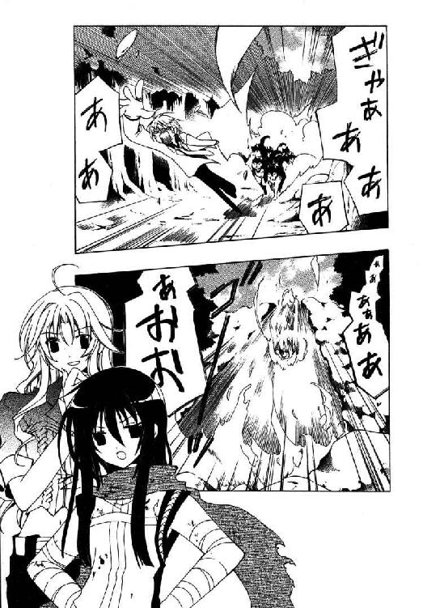
と、木立から、ふらりと人影が進み出てくる。下生えの草をかき分けおぼつかない足取りで姿を現したのは、一言で、しかも端的に形容するなら──哀れな男だった。
「二枚目に磨きがかかったわね」
「うるさいやい」
答える仏頂面もすっかり青ざめさせて、バーンが肩で息をしながら返事をする。
ジャケットもスラックスもあちこち裂け、その下には無数の擦り傷やら打ち身やら、歯形らしき傷まで確認できる。靴も片方なくなっているし、アクセサリーはどこかに引っかけて千切れたのか、首にミミズ腫れが浮かんでいた。満身創痍といった有り様だが......情けなく曇った顔にだけは、なぜか毛筋一本ほどの傷もない。
彼は仁王立ちに構えているアーティアに非難めいた視線を向け、呻く。
「で............なんだい、これ」
「なんだ、とは？」
「いきなり山の中に引っ張って来られた挙げ句、説明もなしに飢えたオオカミと全力追いかけっこさせられなきゃならない理由を聞いてるんだよッ！」
両手をわななかせて叫ぶバーンの言葉に、カロリアはぼんやりと辺りを見回した。
開拓街アビスパスに繋がる七つ街道の一、北トリエンドロ峠の枯山道。
他に大きな街道が敷かれるにつれ使われなくなった、開拓初期の交易路である。旅路には不向きだが綺麗な自然と空気に溢れており、街の住民に重宝がられている場所だ。
地団駄を踏む彼に、アーティアはうるさげに顔をしかめる。
「説明したろう。星守りに伝わる由緒正しき《息吹》を御するための修行ぞ」
「はい嘘つき！ こんなんで修行になるわけないね!!」
「存外に聡いな。案ずるな。無論こんなもの、ただの準備運動に過ぎんわ」
「帰る！ 僕もう帰る！ 死ぬ前に帰る!!」
「黙れ根性なし。さあこい、修行を始めるぞ」
「助けてーッ!?」
泣き出すバーンを捕まえ引きずり、アーティアは木立の中へ消えていった。しばしその後ろ姿を見送ってから、カロリアはふと背後を振り返る。
そこには、ごうごうと崩れる滝。街の水源の一つでもある河だが、ここではまだ川幅も狭い。なんとなく予感を感じて、彼女は滝の上方を仰ぎ見た。
梢の向こうに覗く青い空と白い雲、輝く太陽にきらめく飛沫。その光景の中心にぽつりと、黒い影が出現した。徐々に大きくなっていく──落ちてきているらしい。
無言で一歩その場を退いた時、聞こえてくる、耳慣れた声。
「──......ぉぉぉおおおおあああああああぶばッ!?」
悲鳴を曳き、滝壺に水柱が上がった。なにやら人型の物体が落ちていったように見えたが......その物体を追い掛けるように、頭上から声が降ってくる。
「ふん。まったく、腰抜けが」
もう一度顔を上げれば、滝の横の崖に、アーティアが貼り付いていた。
ほぼ垂直の壁面を、飛び出した岩や木の根を巧みに使って降りてくると、彼女は不満そうに鼻息を吹く。その隣に立ち、カロリアは滝壺を覗き込んで唸った。
「これが竜徒の修行なの？ 度胸だめしじゃなくて？」
「先入観や思いこみを拭うための修行だ」
答える言葉は、ひどくそっけない。
「人間は《息吹》という言葉面に頭を縛られるからな。《息吹》は吐息ではない。まずは呼吸と《息吹》を切り離し、別物であると考えられねば話にならん」
さも当然と言いきる彼女を見やり、カロリアは眉根を寄せた。
「だから息できないように滝壺ダイブって、大雑把過ぎない？」
「愚かな......《息吹》は、生物の『本質』だ。《息吹》を宿すということは、己自身を深く理解し、内に眠る太古の記憶──万物の祖、竜の記憶に向き合うことに他ならない。その高みに至るには、極限状況に命を晒すのが一番手っ取り早いのだ。私もよく母様に雪崩の中へ放り込まれたものよ」
「それは相当エキセントリックな教育方針だと思うけど......」
呻くが、アーティアは聞いていないらしく、遠い目で宙を見上げている。
その視線を追って顔を上げたところで、カロリアはあることに思い当たった。
「ねえ、あなたさっき崖降りてきたじゃない。高いとこ苦手なんじゃなかったの？」
「......つまらんことに気付いたな。別に苦手なわけではない」
途端に口を尖らせると、彼女はそっぽを向いて早口に言ってきた。
「地面は構わないのだ。どこをどう踏めば崩れるか分かるからな......が、人間どもの作った橋だの建物だのは、いつ壊れるか分かったものではないではないか」
「橋なんて、そうそう落ちるもんじゃないってば」
「むう。母様もよくそうおっしゃるが、こればかりはなぁ......」
低く唸って、アーティアはいかにも納得いかないという風に眉間に皺を刻む。
なんとなく苦手な野菜を前にした子供を連想して、思わず噴き出してしまう。
アーティアがむっとした顔で見上げてくるが、笑いの発作は治まらない。
「ええい笑うな、嫌なモノは嫌なんだ！ 悪いかッ!?」
「ちが、違うのよ。そうじゃなくて......プッ、フフ......」
笑い続けるカロリアに、彼女は顔を紅潮させ、噛み付くように睨みつけてくる。ちょっと笑いすぎたかも知れない。
「ごめん。だってアーティア、あなた私の考えてた竜徒と全然違うんだもの。もっとこう、徹底的に人間嫌いで......こんな風に、話なんてしてくれないと思ってた」
「──む？ あいや、それは......うん、その通りだ。馴れ馴れしいぞお前」
思い出したように指を突きつけてくる彼女に、カロリアは薄く苦笑する。
「今さら、って感じだけどね」
「......だな。まだまだ私も未熟の身よ」
存外あっさりと認めて、アーティアは指を下ろした。
「私も驚いている。里の者は皆、街の人間は残忍かつ狡知に長けていて、他者を見ては利用することしか考えない連中なのだと言っていたが」
彼女は包帯を巻かれた自分の腕を持ち上げ、小首を傾げて呻き声を上げた。
「......お前のような人間もいるのだな」
「んー......分かんないわよ？ 最初は親切にしておいて、あとでなにか企んでるのかも」
「ふん、舐めるな。ものの本質も見抜けず星守る茜鱗は名乗れん──私が断言する。お前は人間ながら、稀なほど清麗な心立てをしている」
一片の嘘もない声で言い放ち、アーティアはほんの少しだけ口の端を歪めて見せる。冷笑でも皮肉な笑みでもない、含みのない純粋な微笑。
が、その笑みはすぐに引っ込んで、元の冷たい仏頂面が戻ってくる。
「──して、清麗でない性根の人間の方だが」
「......そういえば浮いてこないわね、バーン」
言われて思い出し、カロリアは滝壺に顔を向けた。数分前に落ちた彼は、未だ浮かび上がってこない。流れに沿って下流へ視線を向けたところで、ふと気がつく。
やや離れた場所、早瀬に突き出た岩の陰に、金色の何かが垣間見えた。流れがぶつかり砕ける岩に、バーンが貼り付いている──水底を泳いでいったらしい。
彼はしばし岩にしがみついて咳き込んでいたが、やがて息を整えると、再び流れに身を躍らせる。急流の中をさらに泳いで加速し、街の方へ流れていくバーンを見送って、カロリアはぽつりと呟いた。
「......逃げたわね」
「おのれ、根性なしにも限度があろうが！」
「あれはあれで根性入った逃げ方と思うけど──まぁ待って、待って」
地面を踏み鳴らし、自ら川へ飛び込もうとするアーティアを、カロリアは襟巻を掴んで引き留めた。首が絞まって変な声をこぼす彼女に、諭すように言い聞かせる。
「落ち着きなさい。給水塔の上にでも逃げられたら、あなた追い掛けられるの？」
「ぐ......」
「それに街は広いし、入り組んでる場所とか、知らなきゃ絶対見つからないような店も多いしね。あいつ、仕事柄そういうとこ詳しいわよ。一人じゃ大変だと思うけど」
「な、ら......どうしろ、と......、と......とりあえず、手、離せ......」
「現実的な案ならね、人を雇うっておすすめよ。街に詳しくて、ついでにバーンの逃げ込む先にも詳しい人。あら偶然、それって私みたいね」
「......？ お、お前を、使えということか......？」
白々しく言うカロリアに、解放された首を押さえながらアーティアが困惑気味に訊いてきた。にっと微笑み返して、彼女は立ち上がる。
「本業は違うんだけどね。困ってる人に、頼れる奴を紹介するのも私の仕事なの。ほんとは仲介料とか取るんだけど、今なら友達価格で十割引き。おっ得ー」
「............と......もだち、友達？ 私が............お前と？」
「私はそう思ってたけど。......それとも『人間』とは仲良くできない？ アーティア」
おどけて笑い、カロリアは少女の瞳を覗き込んだ。ぱちくりと見開かれた双眸は、あるいは先ほどの微笑より、よほど純粋で無防備だったかも知れない。
しばしして、アーティアは微かに上ずった声で呟いた。
「......ち、力を......貸してくれるか、カロリア」
「任せてちょうだいって。大方、どこに行くか見当はついてるのよ」
金髪の詐欺師が流れていった方を眺めやり、カロリアは不敵な笑みを口元に刻んだ。
等身大の姿見で、自分の格好を仔細に検分する──サイズに問題はない。
仕上げに白いスエードのハーフコートに袖を通し、バーンは背後を振り向いた。
「どうだいイルベリア。さっきと印象、違って見える？」
散らかった作業机に肘を乗せた女性が、細巻きの葉巻を燻らせ頷く。
二十を少し過ぎたくらいの歳の、無造作に束ねた赤毛が印象的な長身痩躯の女性だ。ポケットの沢山ついた、いかにも職人気質の仕立屋らしい前掛けをつけている。
「ああ、全く別人さ。顔を見られちゃしょうがないだろうけど」
肩をすくめるバーンの格好は、峠で狼に追われていた時とは別物だった。服をラフな物に着替え、目立つブロンドはキャスケットを被せて隠している。あとは装飾品を変えてブーツを履いた程度だが......遠目に見れば、まず彼とは分かるまい。
「でも驚いたよ。いきなりずぶ濡れで駆け込んで来て、変装に協力しろ、だもんね」
「こんなこと頼めるのは君だけさ。......それに、しばらく会えなくなりそうなんだ」
沈んだ声で言うと、イルベリアは化粧っ気のない顔をにわかに緊張させる。
「面倒事かい？ そう言えば昨日、高級街区の方で騒ぎがあったらしいけど......」
「ああそれはまったく微塵も実際問題、徹頭徹尾関係ないね。噂じゃもの凄く噴き上がるシャンパンを百二十人で一斉開栓するパーティがあったみたいで、解き放たれた噴射力が未知なる大爆発エネルギーを招来、熱ッ」
「？ どうしたのさ」
「い、いやなんでも。......急に出るのやめてくれないかなぁ......」
早口に言いながら、バーンはこっそり口の端から黒煙を吐き出した──《罪人竜の息吹》。できれば噴き出す際には一言断っていただきたいものだが。
「......服の払いはツケでいいよ。踏み倒したら許さないからね」
「じゃあ間違っても戻っちゃこれないな......ああいや、その、──ん」
こぼれた本音をごまかすようにイルベリアの葉巻を奪い、そっと口づける。彼女の唇に葉巻を戻してやってから、バーンはそそくさと部屋を後にした。
「──さて、どうしたもんだか。逃げ続けるってわけにもいかないしなぁ」
路地を抜けて通りに出たところで、うんと伸びをする。
あの娘から逃げ切ることは難しくないだろうが......それでは《罪人竜の息吹》が解決しない。彼とて一生、火を吹く身体のまま過ごしたくはないのだ。
「せめて、火を吹くタイミングだけでも分かればだいぶ違うんだけど......」
それだけでは根本的な解決ではないが、いつ何時口から火を吹くか分からないという状況は、実際的に危険すぎる。
「時間周期なのかな、鳩時計みたいに。ええと......昨日の夜に二回だろ、あとカロリアの部屋で一回とついさっきで......バラバラじゃん」
「うむ。時間は関係あるまいな」
火を吹いた場面を指折り数え上げて、バーンは顔をしかめてぼやいた。
「そういや火を吹いたのって、必ずなんかひっどい言い訳してる時だったような......」
「そこだ。先ほどの様子を見ていて分かったが──お前が虚言を吐いた瞬間、《息吹》の力が高まるのを感じた」
追従してくれたので、更に考えてみる。言い訳をした時というより、とっさに大嘘をついた時、だろう。つまり火を吹く直前、彼は必ずとんでもない嘘をついていた──
「......まさか、ホラ吹いたから火も吹いたってダジャレじゃないだろうな......。でも、嘘ついてるのに吹かない時もあったんだけどなぁ」
「《息吹》が反応する嘘と、そうでない嘘があることになるか......その違い、その原因が掴めれば制御もしやすくなろうというものなのだが」
「違い、ねぇ......ううん、見当もつかないや。あ、それじゃ僕、帰りこっちだからこの辺で。また明日ね。おつかれさまー」
「待たんかい」
極力自然に立ち去ろうとするバーンのコートを、誰かが掴んで引き止める。
いやいや振り向けば、膨れっ面のアーティアが不機嫌そうに呻いていた。
「ここまで会話しておきながら私に気付かんとは、どういう了見だお前」
「気付いたからナチュラルに逃げようとしてるんだよ！ なに君、追いついてくるの早すぎじゃない!? イルベリアと話してるのも見てたんだろ!?」
じたばたと手足を振り回す彼を睨みつけ、アーティアは鼻を鳴らした。
「心強い協力者がいてな」
「き、協力者？ 竜徒の君にかい？」
「私よ、私」
と、楽しげに声を弾ませながら、雑踏からカロリアが進み出てくる。
目を瞬かせるバーンのキャスケットをつついて、彼女はくすりと笑みを溢した。
「まず着替えるわよね、やっぱり。イルベリアを紹介したのが私だって忘れた？」
「カロリア......ちょっとした悲劇だよ、こりゃ。なんでこの子の肩を持つんだい？」
「女の友情ってあるのよ。......それにどう見たってあなたが悪いじゃない、これ」
責める目つきのカロリアに、バーンは明後日の方へ目を逸らす。とりあえず大人しくすると、アーティアはコートを解放してくれた。
「いい加減に腹をくくれ。お前とて《罪人竜の息吹》をどうにかしたいのだろう？」
「もちろんさ。でもキツいのはやだ。死にそうなのも勘弁」
「まずその性根から叩き直す必要があるようだが......なに、死ぬような修行など課さん。宿主のお前が死んだ時《息吹》がどうなるか、現状では想像もつかんからな。むしろねじれようが剥がれようが、いっそ殺せと泣き叫ぼうが生き延びて貰うぞ」
......一体、この娘は自分になにをさせようというのか。
やはり彼女の言うがまま修行とやらをしていたのでは埒があかない。いや埒はあくのかも知れないが、到底そこまで身体がもたない。あらためて逃げ出す必要性をひしひしと感じ、バーンはキャスケットを目深に被りなおす。
気配が変わったのを察したか、アーティアが険しい顔で睨みつけてきた。
「......つまらんことを考えるなよ。修行を終えるまで、もはや二度と逃がしは、」
「やや!? 見るんだアーティア、あんなところにブランディン・オーツ！」
「なにッ、本当か!?」
「嘘ぴょーん！」
あらぬ方向を向いて叫ぶバーンにつられ、アーティアが驚愕の表情で振り向いた瞬間、彼は全力で反対方向に駆けだしていた。虚を突かれた彼女は、きょとんとしてその背を見送り──怒りに目をつり上げると、後を追って走り出す。
「この与太者が！ 偽言ばかりを弄しおって、恥を知るがいいッ！」
「はっはっはーだ！ 騙される方が悪いんだい、てやんでぇッ!!」
「ぬ──ぐ、愚弄するかっ！」
多少は痛いところだったのか、一瞬ならず言葉が詰まる。その隙に、こればかりは自信のある逃げ足をフルに駆使し、通りを駆け抜け──ようとしたところで。
とある小さな雑貨屋の前にそれを見つけ、バーンはとっさに急停止した。
そのままそこで凍り付いていると、ほどなくしてアーティアが追いついてくる。
「観念したか、その潔さは認めてやろう。だが──」
「や、ちょっと待ってアーティア。これ見てくれ、これ」
胸ぐらを掴んでくる少女に、彼は硬い声で呻き返した。アーティアはしかめ面で、それでも一応は、バーンが凝視しているものに視線を向けてくれる。
問題なのは店そのものではなく、店先に貼られている一枚の紙切れだ。
紙には、どこかで見たような少女の顔がまだ新しいインクで描かれている。その下に列挙された特徴によると、少女は「黒髪、銀目、年の頃十四、五。大陸古語を使い、身の丈小さく、白の装束に茜色の襟巻をつけた竜徒。《息吹》を持ち、極めて危険（注・生け捕りにすること）」ということらしい。紙にはなぜか莫大な金額も併記されており、さらには上部に目立つ赤文字で、大きくこう書かれていた。
おたずね者
冷や汗を流して凝固するバーンを掴んだまま、アーティアは不思議そうに首を捻る。
「......どうしたことだ、いったい。これは──私か？ なぜ私の絵が？」
「ひッ、平たく言うと......君、早いとこ街を出た方がいいぜ。マジで、一刻も早──」
「──否ああああぁぁぁっ！」
引きつった顔でアーティアの手を引こうとした瞬間、空気が破裂するような大音声が響き渡った。
思わず立ちすくむ彼の手をぱっと払い、アーティアが背後へ振り返る。
「通報は正しかったようであるな。報奨金を準備しなければいかん」
いつの間にか、周囲から人通りが無くなっていた。人々は雑貨屋の前に立つ二人を中心に半円状に退いている。誰も彼もが、好奇に視線を輝かせながら。
その人垣を二つに割って──十数人の男たちが、ぞろぞろと進み出てきた。
「何者だ、貴様ら」
冷たい彼女の問いに、一人の男が前に出る。全体的に大柄で大味な面々なのだが、その男はひときわでかい。アーティアなど、隣に並べば胸にまでも及ばないだろう。
「むっはっは......問うか、竜徒。ならば我らも答えよう。全員整列ッ!!」
号令一下、背後に控えていた男たちが一糸乱れぬ動きで整列した。そろって右手を心臓の上に当て、左手を腰の後ろに回す奇妙なポーズをとっている。
自分自身同じ格好をしながら、男は輝く歯を見せた。
「──ツルハシ持て！」
『我らは荒野を拓くなり！』
「うわッ......なんだなんだ」
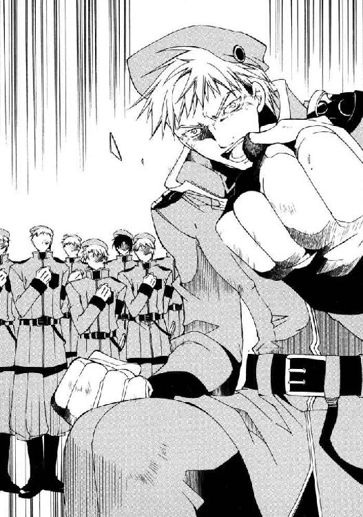
唱和する男たちに、バーンは青ざめた顔で後ずさる。気付いていないのか気にしていないのか、彼らの語勢は衰えない。むしろ声量を上げさえしながら斉唱は続く。
「刃持て！」
『我らは民護る鎧とならん！』
「遅刻欠勤、百叩き！」
『サービス残業、当たり前！』
「常に健全な肉体を保ち！」
『ご飯は意地でも残さない！』
「おかわりは!?」
『三・杯・までッ!!』
──なんの事態だ、これ。
心底困り果てるバーンと群衆をよそに、本人たちだけは何ら疑問のない様子の絶唱はクライマックスを迎えていた。前に出た巨漢が、高らかに絶叫する。
「我ら竜断つ人の剣！ グラムっ！ フェンっサぁああぁぁああぁあズッ!!」
「っなッ!! な......なんだってええぇッ!?」
バーンが悲鳴を上げると同時、周囲にどよめきが巻き起こった。野太い二の腕を見せつけるポーズを決めた男たちを見る目が、変わる。
好奇が畏怖に、畏怖が戦慄に。
敬遠が羨望に、羨望が崇敬に──
ただ一人空気の変化について行けなかったアーティアは、よろめくバーンのコートをくい、と引っ張った。
「おい。いったい何者だ、連中は」
「そんな、なんでこの街に......いやそうか！ オーガンライト鉱山の護衛で......っ!?」
彼は震える声で呟いたが、それは思わずこぼした独り言だったのだろう。視線は、男たちの服の袖に縫いつけられた紋章に釘付けになっている。
両刃の剣と、その剣に貫かれる竜の意匠。
州国議会の最有力派閥【抗竜党】の公認紋章──議員以外にこの紋章を掲げることが許されるのは、その下部にある一つの組織だけだ。荒野を拓き、国土を拡大することこそ第一義と唱える党の意志を体現する男たち。不毛の大地に道を敷き、竜徒にすら立ち向かう、壮健無双の開拓団。人呼んで、
「〈抗竜党必死開拓団〉！ あいつら、竜徒討伐のスペシャリストだよっ！」
「なに？」
「と、と言うことは、あれが噂の〝竜斬り〟......ブロック・キャリバー!?」
厳つい笑みの偉丈夫を睨み、アーティアは不愉快そうに喉を鳴らす。
「〝竜斬り〟、とな」
「なんでも昔、竜を殺したことがあるとかいう話でさ。ついた渾名が〝竜斬り〟ブロック......そりゃ嘘か本当か知らないけど、それでも──」
「──うむ。手練れだな、あの男」
神妙に頷いて、アーティアは氷柱のように視線を研ぎ澄ます。
相対するブロック・キャリバーもまた、威嚇するような構えをとった。にわかに生まれた荒事の気配に、野次馬が期待にざわめく。と。
「ちょ──だ、団長！ まさかここでやり合う気じゃないでしょうね!?」
不意に、〈抗竜党必死開拓団〉の制服を着た団員らしき一人が前に飛び出した。他の団員と比較すればまだ若く、身体も細い男である。団員の中では唯一、茶褐色の髪を整髪油で整えているのが印象的だった。
「相手は竜徒ですよ!? 街中で《息吹》でも使われたら大騒ぎだ！」
「案ずるなスクィージ君、魔剣もしかと準備済みだ。とてつもない安心感である！」
「それが一番の厄ネタなんでしょうがッ！」
スクィージと言うらしい男が、ブロックの足を蹴飛ばして怒鳴り散らす。
漂い始めた不穏な空気に、胃袋から喉までブラシでこすられるような感覚が走った。
「ちょ──待って、待ってくれ！ アーティア、君も落ち着いて!!」
嘔吐をこらえて、バーンは彼らの間に割って入る。
「ブロック・キャリバー！ この街で暴れちゃ『アビスパス』が黙ってないぜ!?」
「これぞ笑止！ 竜徒捕縛のオーダーを下した人物こそ、そのアビスパ卿に他ならない!! したがって手加減は一切無用、あとは野となり山となるッ!!」
「なんでバラしちゃうんですか!? ていうか加減はしてくださいよ!? 団長っ!?」
叫ぶスクィージに同情している余裕は、バーンには無かった。
（シム・リム・アビスパ......やっぱり動いたか！ くそっ、冗談じゃない！）
悲鳴を上げる意識とは別の場所に、数十の言い訳が浮かび上がる。
膨大な選択肢を、真実性や曖昧さ、発展性などを加味して慎重に選別。最終的に残った候補から、この場に最適と思われるものを選択し──「嘘」を構築する。
その行程を終えるまで、瞬き一つより長い時間はかからない。
常から虚言を武器に辺境を渡ってきたバーン・フラットランドだから可能な業。
（〝嘘つきバーン〟の渾名は伊達じゃないってとこ......見せてやろうじゃないの！）
胸中で快心の笑みを浮かべながら、バーンは確信を込めて口を開き、
「どうした人間、臆したか！ そのでかい図体が虚仮威しでないならかかってもぎゅ」
「黙れ君、頼むから黙ってくれっ!?」
一瞬早く前に出てごまかしようのない大声で叫ぶアーティアの口を塞ぐ頃には、綿密に用意していた嘘はどこかにすっ飛んでいた。
「誤解なんだ！ 一見、闘志マンマンで暴れてるように見えるかもしれないけど、実はこの子に抵抗の意志はない！ よし言い切った!! だから手荒な真似は──」
暴れるアーティアを抑えながら、なんとか出任せを並べ立てる。だが慌てているせいか、どうにもひどい言い訳しか出てこな......ひどい言い訳？
不吉なキーワードに、音を立てて血の気が引いた瞬間──もはや驚く余地もない灼熱が喉を駆け上がり、バーンは炎の《息吹》を吐き出していた。
「ッなんとぉ────!?」
驚愕の表情で、ブロックが地面へ身を投げ出す。
上を向きかけていたのが良かったらしく、炎の渦は〈抗竜党必死開拓団〉も、周りの野次馬も巻き込むことなく空へ消えていった。残ったのは陽炎と、数秒の沈黙。
諦念やら徒労感やら、いろいろなものを噛みしめるバーンを、ゆらりと立ち上がったブロックが腰の鞘から抜き放った肉厚の大鉈で指し示した。
「目標修正。小娘を捕らえた後、あの小僧も引っ捕らえろ！ 奴も竜徒だッ!!」
「誤解だああああぁぁぁッ!!」
団長以下、揃って鬨の声を上げる〈抗竜党必死開拓団〉へ、涙混じりに絶叫する。ブロックは大鉈を突撃喇叭のように振り回し、《息吹》を目の当たりにし逃げまどう人々をラッセルのごとく掻き分けながら、アーティアに向かって突撃していった。
その光景をはるか遠くに確認して──人に流されたのだ──、バーンは舌打ちする。
「あーもう。こうなりゃ、僕だけでもずらかろっかな......」
「おっと、そりゃ無理だ」
瞬間、鼻の先を銀光がかすめて、彼はたたらを踏んでのけ反った。
いつの間にか、眼前に灰色の制服に身を包んだ若い男──スクィージが、細身のショート・サーベルを手に立っている。鼻を押さえ、バーンは早口にまくし立てた。
「なッ、なんでこっちくるんだよ!? 先にアーティア捕まえるって言ってたじゃん！」
「お前の方が小狡そうだからだよ。......ていうか、お前その抗議は最低じゃないのか」
非難するような声で呟きつつ、スクィージはサーベルの切っ先で的確に喉笛をポイントしてくる。動きあぐねて、バーンは視線をアーティアの方へ向けた。
「──そおりゃあぁああぁぁあっ！」
横殴りに薙がれた大鉈を、アーティアが極端に身を屈めてやり過ごす。
空を切った大鉈を、ブロックは強引に振り上げた。間髪入れずに叩き下ろされた刃の下を、アーティアは素早く前転でくぐり抜ける。鉈は石畳を易々と叩き、火花と石片をまき散らした。ブロックが、ニヤリと不敵に笑みを浮かべる。
「ふっ。伐竜殺法・横一文字斬り、よくぞ見切ったとまずは讃えておこう」
「縦にも斬ってなかったかな、今......」
「だが小娘、この空振りですら布石であったとは思うまい！ 見よッ！」
バーンの指摘が聞こえるはずもなく、彼は地面に刺さった鉈を力一杯引っこ抜いた。
太陽の下なので分かりにくいが──よく見れば、幅広の刀身がほのかに赤く輝いている。先ほど一瞬だけ見えた限りでは、銀に近い青色だったはずだが。
「貴重なオーガンライト鉄鋼製の逸品よ。刀身に加わった衝撃を蓄積し、高熱に変換して放出......ぶつけるほどに威力を増す奇跡の業物であるッ!!」
「だからなんで教え......壊さないでくださいよ、それリース品なんだから！」
スクィージが大声で釘を刺すが、聞いている様子はない。〈抗竜党必死開拓団〉の面々を従え、ブロックはアーティアへ突貫を仕掛ける。
彼女は両眼を細め、身体を沈めると──正面に迫る彼に向かい、跳び上がった。
高々と宙へ舞い、地面を見下ろし息を吸う少女を見上げ、ブロックが歯を食いしばる。
「小癪ッ......！ 総員、退避ぃぃッ！」
彼の怒号を呑み込むように、アーティアの《息吹》が解放された。
視界を閉ざす吹雪が辺りに吹き荒れ、やがて風に溶けた時──ブロック・キャリバーはまだ生きていた。蓄積した熱を放出しきったか、盾のように構えた大鉈は元の薄青色に戻っている。あちこちに霜が降りているものの、ブロック自身も無傷のようだった。
しかし次の瞬間、その眼前にアーティアが飛び込んでいる。
弓なりに反らせた全身を使い、彼女は広げた両腕を鋏のように交差させ叩きつけた。
キン、と拍子抜けするほど小さな断末魔を上げ、分厚い鉈が根元からへし折れる。衝撃によろめきながら、ブロックが愕然と声を上げた。
「ッ馬鹿な！ オーガンライト鉄鋼を断つとは......小娘！ それは竜工芸だなッ!?」
着地と同時に跳び退ったアーティアは、両腕を──いつの間に身につけたのか、指先に刃が縫い付けられた手袋を持ち上げ、静かに答える。
「──いかにも。雪竜ノルガンディアの鱗と牙で織り上げた、一閃岩をも断つ刃爪だ。竜の魂宿る刃、人間風情のなまくらで敵うなどと思ってくれるな」
「......むはは、猪口才千万！ 竜徒の秘奥・竜工芸、相手にとって不足なしッ!!」
ブロックは高らかに哄笑すると、グリップだけになった鉈を足下に投げ棄てた。
「小娘。貴様、魔剣グラムの伝説を知っているか？」
「............？」
「はるか昔、名も無き騎士が用い荒ぶる要塞竜バグラッツを両断せしめた必殺の一振り。我らが〈抗竜党必死開拓団〉を名乗るのも、その断竜の剣にあやかっての事よ」
怪訝そうに柳眉を寄せるアーティアへ、ブロックはぐっと拳を握ってみせる。
「だが伝説を騙るだけでは意味がない。現代の！ 辺境開拓のこの世にこそ語り継がれる新たな魔剣をもって！ 我々は竜に、竜徒に抗っていかねばならないのだッ!!」
唐突に大きく両腕を広げ、彼は団員たちへ鋭く号令を飛ばした。
「総員、手出しは無用！......魔剣解放おぉ──ぅッ!!」
『承知！』
唱和と共に踵を打ち鳴らすと、男たちはおもむろに腰に、背中に、足に固定している革のケースに手を伸ばす。そしてそこから、おのおの木片やら発条やらベルトやら、他にも用途不明のガラクタを取り出し──ブロックに向かって放り投げ始めた。
微妙な時間差を作って飛来するそれらを、彼は振り向きもせず受け止める。そしてそれらを片端から組み合わせ、巨大な構造物を組み上げ始めた。その手さばきは遠目に見ているバーンにも目視できないほどでたらめに、速い。
ややあって完成した物を背負い、ブロックは高らかに唱える。
「解放ッ、ネオ・魔剣グラム壱号〝大往生ブリンガー〟！ 思い知るが良い!!」
「いや待って、待とうよ！ ねえ!?」
さすがに看過しかねて、バーンは声を割り込ませた。
「魔剣」は、粉碾き小屋の水車を数倍無意味に複雑化したような外見をしていた。
回転するベルトつきの歯車を中心に、角材で出来た四本の機械肢が延びている。ブロック自身の腕と連結したバーにより、腕を動かすとそれぞれ独自のアクションをする仕組みらしい。それだけでもかなり変態的な設計だが、とりわけ狂気が加速しているのはその先端だ。ノコギリだの手斧だの菜っ切り包丁だのといった刃物類が鈴なりに固定されており、それが武器──というか凶器──であることを力一杯主張している。
足が全て鋏になった木製の蟹とでも言うべきその物体を指さし、バーンは......どう指摘したものだかしばし迷った挙げ句、一番端的な形で訊いてみることにした。
「それ剣!?」
「むっはっは、若いな小僧。未熟は罪ではあるまいが、それも過ぎれば滑稽というもの」
ブロックは得意げに腕を組み、連動した機械肢をがさがさと蠢かせる。
「魔剣がすべからく剣でなくてはならない、などという道理はあるまいッ!!」
「道理がどーこー言う前に、節操とかないのかアンタ!?」
必死に叫ぶバーンの肩に──不意に、サーベルを納めたスクィージが掴みかかってくる。そして驚く間もなく、そのまま背後に引っ張られた。バーンが抗議の声を上げようとすると、彼はその先を制してぴしゃりと言ってくる。
「黙れ、すぐ逃げるぞ。......あの『腕』な、それぞれに発破が仕込んであんだ」
「............。へ？」
思わず、足が止まる。スクィージは舌打ちし、更に強く肩を引っ張った。
「だからあの『魔剣』は、敵ごと自爆するための爆弾なんだよ。なんで爆心地の本人が死なないんだか不思議なんだがね......ここにいたら巻き込まれちまう」
「爆......!? そんな、待ってよ！ 生け捕りにするんじゃないの!?」
「そうだが、あのバカはもうそんなこと忘れてるんだよ！ だからせめてお前は生かして捕まえなきゃ面倒臭いことになるんだ！ 死にたくないだろ、早く逃げるぜ!!」
「じ、冗談じゃないよッ!!」
手を振り払い、バーンは対峙する二人の方へ駆けだした。困惑か憤激か、あるいは恐怖の悲鳴なのか、ともかく叫ぶスクィージの方は振り返らない。
（あの子に......死んでもらっちゃ困る！）
ただその一心に突き動かされ、すくみそうになる足で必死に走り続ける。
「さらばだ小娘！ 必殺ッ......大・迫・力・斬りいいいぃぃッ!!」
豪声一発、ぎこぎこ部品を軋ませる凶器の腕が振り下ろされる。ダイナマイトなどなくとも、あの腕で殴られ生きていられるわけがない。
間に合わないと、意味はないと知りながら、バーンはそれでも手を伸ばし──
その手を冷たい鉤爪に掴まれて、ぱちくりと間抜けに瞬きする。
一跳びにこちらへ跳んできたアーティアは、彼を掴んだまま短く叫んだ。
「──どけッ!!」
横っ飛びに跳ぶ彼女に思い切り手を引っ張られ、バーンは通りの端に転がされる。
その直後──すぐ背後を、何か重たい音が通り過ぎていった。
振り向けば、巨大な樽が凄まじい勢いで石畳の上を転がっている。
ブロックがその樽に気付いた時はもはや避けられる距離ではなかったが、激突の寸前、彼は「魔剣」を迫り来る樽に振り下ろす。殴られた樽が火薬の閃光に包まれた瞬間──切りつけるような咆吼と共に、アーティアが《息吹》を吐き出した。
吹雪は網を広げるようにブロックを包み込む。そしてダイナマイトの爆発を呑み込んで、吹雪は渦を巻く蒼い旋風となり、炎を全て上空へと巻き上げた。
否、それは旋風ではない。一切の熱を奪い、打ち消し、破り、凍てつく──竜巻！
轟然と天へ昇る竜巻に、その場の誰もが目を奪われる。
「──バーン、アーティアっ！」
不意に名前を呼ばれて、バーンはびくりと肩を震わせた。
声の出所はすぐに判明した。近くの靴屋と鍛冶工房の間の路地から、蜂蜜色のブロンドを揺らした女性が手招きしている。見覚えのある、その美貌は──
「か、カロリア......っ？」
「ぐずぐずするな、走れッ！」
呟く彼をぽいと投げ捨て、アーティアは跳ねるように路地へ駆け込んでいった。バーンも慌てて頭を振ると、ほとんど四つん這いのまま路地に転がり込む。
髪を背後へ流し、襟巻を巻き直しながら、アーティアが軽く息をついた。
「カロリア、いい機だった──奴め、成算なしには撤退も打てん使い手ゆえな」
「......あれ？ さっきの樽、もしかしてカロリアが？」
「気が利いてたでしょ。いい所にいいものがあってよかったわ」
目を丸くするバーンに、彼女は得意げに胸を張って見せた。それからアーティアに向かって親指を立てる。アーティアも、肩をすくめてそれに応えていた。
やけに気安げな様子に、釈然としないものを感じないわけではなかったが......とりあえずその疑問には触れず、バーンは背後を窺って眉根を寄せた。
「......ま、いいけどさ、早いとこずらかろうよ。逃げたの気付かれる前に」
「案ずるな、ぬかりはない。奴はしばらく身動き取れんだろう」
刃を噛んで手袋を外しながら、アーティアはくい、と通りへ顎をしゃくった。一度、確信に満ちた様子の彼女を振り返ってから、路地から顔を出してみる。
竜巻はすでに勢いをなくしていて、その中心にブロック・キャリバーは立っている。が──悪趣味な芸術のように硬直した巨体は、そのまま微動だにしなかった。
「団長？ 団長ッ!? しっかりしてくれ団長!!」
「だめだ、身体が冷たい！ クソ、いつかこうなるたぁ思っちゃいたが......！」
「──いや、まだ脈はある！ とりあえず暖めるんだ！ 熱湯沸かせ、ぶっかけろ!!」
彼に触れ、口々にとことん乱暴なことを叫びながら、団員たちは数人がかりでブロックを持ち上げ、地響きすらたてて走り去っていった。
「......なにあれ。君がなんかやったのかい？」
「うむ。火炎を巻き上げる時、《息吹》をほんの少し奴に注ぎ込んだ。五臓六腑を凍てつかされて、動ける人間はいるまい」
遠ざかる砂煙を見送るバーンに、アーティアは薄い胸を張る。内臓を凍らせるというのはかなり危険な真似ではないのかと思うが......まあ、あの男なら死にはすまい。
「ふーん──あ、ねえねえ。そんなことできるなら、バーンの《息吹》を凍らせる、っていうのはだめなの？ できたらそれで解決っぽいと思うんだけど」
「無理だな。すでに一度試したが......私一人では抑えきることは出来なんだ」
思いついたように訊ねるカロリアに、アーティアは間髪入れずに頭を振った。
「せいぜい、昨晩のように《罪人竜の息吹》を一時取り込んで、吹雪の《息吹》で精錬してやるのが精一杯だ。......それだけでも負担は大きいが」
「は、昨晩？......ああ、あの時の......そういや、なんか光線吐いてたよね君」
言われて、昨晩目の当たりにした光景を思い出す。
彼女の口から放たれた、まばゆい火線。吹雪の《息吹》に制御され洗煉された閃光は、ある種の美しさをすら感じさせた。あれが、《息吹》を制御すると言うことか──
とはいえ、いま真っ先に考えるべきは《息吹》のことではない。
「ま、雑談はこの辺にしとこうぜ。当座の危機は避けられたけど、根本的な問題はなんにも解決しちゃいないんだ。まずはそこから考えないと」
きょとんとするカロリアに、無言で傍らの壁を示す。そこにも貼られていたアーティアの手配書にぎょっと目を剥き、彼女はくしゃりと髪を掻きむしった。
「......とんでもないわね。プロの賞金稼ぎも動きかねない額よ、これ」
「そうなんだよ。取引が成立するまで、なんとか逃げ切らないと──」
「取引？ なんの話だ」
「え？ あ、べべ、別になんでもないよ？ 君には全く関係ないよ？ ホントだよ？」
「............。深くは追及せんがな」
低く呟くアーティアが仏頂面だったのは──彼の口から黒煙がほのかに立ちのぼっていたことと、恐らく無関係ではあるまい。
とにかく。
「とにかく──まず、やっておくことがあるよね」
「そうね──これだけは、しておかなくちゃならないわね」
「うむ──他にすべきことはないと言っても過言ではなかろう」
確認するようにカロリアへ呟くと、彼女はアーティアを見やり、深刻な顔で頷く。アーティアもまた、重々しくバーンを見返し、断言した。
「修行だな」
『いや、着替え』
間髪入れずに言い返し。
ぼろぼろに裂けた上に血まみれになり、人目を引くという域を超え猟奇的ですらある彼女の衣装を指さして、バーンとカロリアは半眼で溜め息をついた。
◆□□◆
ブランディン・オーツがその部屋を訪れたのは、正午を数時間も回ってからだった。
「──あん？ よお、大将」
扉の前で立哨していた、共に人間の街へ降りてきた仲間の竜徒たちが、ブランディンに気付いて片手をあげてみせた。
「やっこさん、ついさっき目ぇ覚ましたぜ。唸りっぱなしでうんざりしちまう」
「そいつは仕方ねぇな。命拾いしたってんなら、まずはよしとしようじゃねぇか」
扉を顎でしゃくって肩をすくめる仲間に、苦笑混じりに応えておく。
そして彼らの髪を掴んで引き寄せ、耳元に囁くように呟いた。
「ジェド、トゥーコ。ここはもういい。お前らはアーティアを探しに行け」
「師匠殿を？ だがシムは、俺たちに勝手に動くなと──」
「トゥーコ、なんてことはない。簡単な計算式さ」
無精髭の浮いた顎を歪ませて、鬼気迫る笑顔を浮かべ。
失言を悟ったトゥーコの顔面をわしづかみにすると、その耳元で言葉を紡いだ。
「一度俺に逆らえば、一つ命をなくすことになる。......お前、命をいくつ持ってる？」
「わッ──わかった、すぐに行く。......行こう、相棒」
喘ぐように頷くと、トゥーコは相棒を促し、逃げるように走り去っていく。
その背が見えなくなってから、ブランディンは無造作にドアノブを捻った。
「ぐうぅぅ......ぐひぃいいぃ......！ 畜生、畜生おぉおぉ......!!」
──部屋の中から、怨嗟の呪詛があふれ出してくる。
白を基調にまとめられた部屋に、ベッドが一つ。そのベッドには呪詛の主である男が横たわっていた。右目と呼吸器以外の全身を包帯で覆われている。
「......気がついてよかったぜ、カーツマン」
呟くブランディンには応えず、カーツマンは血走った眼球で空中を凝視していた。
救助されてからおよそ半日──容態を考えればむしろ回復は早かったと言えるのだが、それでもブランディンは待ちかねたと言いたげな表情をしていた。
「カーツマン。お前をやったのは、アーティアだったんだな？」
「ぁあ、アーティア......あ、畜生ッ、あーてぃあぁぁあ！」
泡混じりの涎をこぼすカーツマンの脇に、ブランディンは静かに腰を下ろす。
「そうか......悔しかったろう？ お前だけじゃねぇ、俺たちも悔しい。俺たちは連帯してる──あのクソガキを憎む気持ちは、俺たちを繋ぐ鎖ってもんよ。心は一つだぜ」
そうだ、自分たちは連帯している。
彼らの矜持を鼻にもかけず踏み砕いた、情の無い師への憎悪がある。
白峰ノルグの里に在りアーティア・アリア・ノルガンディアに師事していた者は皆、何より強くその想いで団結しているのだ。否、そうであるべきなのだ。
「後は任せとけ。仇は取ってやるよ」
と──その小さな宣言が引き金であったかのように、呻き声がぴたりと止んだ。
唐突に一切の動きを止めたカーツマンの右目に、かすかな理性の光が灯る。
「ぶ、ブラ......ディ......ここは......？」
「............。シムの屋敷さ。落ち着いたなら、無理しねえで寝てろ」
言葉面は優しげに答えるブランディンの顔は──しかし、仲間の意識が戻ったことを喜ぶ顔ではない。面倒なことになったという、心底うんざりした表情。
「気......つけろ、アーティ......っない、違......いぶ、き......持ってる......奴は!!」
「寝てろと言ったろ。やれやれ、イカれたままなら手間はなかったんだがな」
引っ掻くようにしがみつくカーツマンの腕を、ブランディンは五月蠅げに払いのけた。包帯の間で目を丸くするカーツマンに、彼はにぃ、と笑顔を見せる。
「仇は取る。......だから、安心して犠牲になってくれ」
「ブランディ──ッ!?」
カーツマンが叫びを上げる瞬間、幾人もの男たちが部屋になだれ込んできた。黒い背広に身を包んだ彼らは皆、胸に橙と黒の縞模様をした菱形の徽章──『アビスパス』のシンボルサインを付けている。
彼らは跳ね起きようとするカーツマンの顎を殴打し、素早く意識を刈りとった。ぐったりと沈む彼の身体を抱え上げる、軽く目礼してから、ぞろぞろと部屋を出て行く。
誰もいなくなった部屋の中で、ブランディンがただ一人、歪んだ笑みを浮かべていた。
◆□□◆
夕暮れ時の山道に、怒声と悲鳴がこだまする。
「ええい、なんべん言わせる気だ!? 流れに逆らうなと言っとろうが！」
「無理無理無理無理無理む・り・だ・っ・て・ばああぁぁッ!!」
烈火のごとく怒鳴る少女に、バーンは濁流に呑み込まれかけながら悲鳴を上げた。
石でも砕けそうな急流の中、近くの樹から垂れた枝にすがりつく彼に、岸辺に立つアーティアは容赦のない激声を浴びせ続ける。
「流れに呑まれ、翻弄されろ!! 水の鼓動を、星を巡る生命を肌で感じ取れ！ 全てに意味がある！ その理を修めれば奔流の中に、おのずと道は見えてくるッ!!」
「そんなもん見えなくたって人間は陸で生きるもんなんだよおぉわあぁ──ッ!?」
言い返した途端、枝を掴む手が滑って彼は濁流に押し流されていった。アーティアが何か叫んだようだったが、その時すでに水に沈んでいたバーンには聞こえない。
数分ほどして。
「......お前、本っ当に根性ないのう」
「こッ......根性でッ......どうにかッ、なる......もんかいッ......!!」
はるか下流の河原に流れ着いたバーンが息も絶え絶えに主張するのに、追いついてきたアーティアは心底見下げ果てた風に頭を振る。
「下手に逆らうから痛い目を見る。水を読み、水に乗り、水となり、水を知れ。自然は全て生命の苗床。その流れの中に、命を生かす道は必ずあると心得るがよい」
「......言ってる事は古臭いのに、微妙に正論ぽいから反論しにくいんだよね君って......」
言う通り、流れに逆らって泳ごうとしたせいで痛む手足をさすりながら、バーンは砂利の上に横たえていた身体を起こした。
流されるままにかなり峠を下ったらしく、辺りはすでに森が切れている。川幅も広く流れは緩やかで、沈みかけた夕日をきらきらと美しく照り返していた。
と、腕を組んだ格好のまま、アーティアが顔をしかめる。
「......古臭いのか、私の言葉は」
「ん？ 古臭いもなにも......それ、大陸古語だろ？」
上着を脱いで水を絞りながら、バーンは意外な心持ちで聞き返した。
大陸古語は数百年前、爵位を持つ家系において使われていた言葉だ。貴族制度が瓦解し共通語が普及するにつれ廃れた、今日び貴族の末裔でも使わない言葉だが......アーティアの喋り方には無理がない。イントネーションや発音もところどころ変化、あるいは省略しており、日々の生活の中で自然に使いこなしてきた者の風格を感じさせる。
「ひょっとして君、貴族の家系かなにかの生まれなのかい？」
「さてな。私は赤子の頃、ノルグの里に捨てられていたらしいからな」
「......え？」
ぎょっとして、思わず彼女の瞳を見返してしまう。
「だから生まれは分からん。言葉は、私を育ててくださった母様が教えてくれたのだ」
「そ、れは......なんていうか、ハードな話だね」
「？ そうでもないぞ。母様は厳しいが、それ以上に優しい御方だ」
彼女は不思議そうに首を傾げた。本人の中で決着がついているのか、それとも平気な振りをしているだけなのか......なんにせよ、深入りしたい話題ではない。
「ま、まあともかく、今日はもう帰ろうよ。顔かばうのもそろそろ限界だ」
「......それだけ全身怪我したくせに、よくぞ顔だけ無傷で済ませたものよのう」
「大事な商売道具だからね」
捨て身で守りきった顔を撫で、彼は沈みかけた夕日へ嘆息をこぼす。
「日も暮れてきたし、続きは明日ってことでさ。ほら、屋台でご飯おごるから」
「なにが続きだ、今日の修行とて進展がなかったというに」
ぴくりと眉を跳ね上げるアーティアだったが、特に反対する気はないらしい。頭を振って嘆息しながら、むしろ彼よりも先に街の方へ歩き出した。
その後を追いかける途中、バーンはふと困り顔を作る。
「......ねえアーティア。やっぱその襟巻、外さない？」
「む、何故？」
「だって一番目立つ竜徒の証拠だろ、それ。服変えた意味無いじゃん」
怪訝そうなアーティアの横に並び、彼女の首元に巻かれた茜色の襟巻を指す。
彼女は昨夜から着ていた血まみれの衣装ではなく、新品の服に身を包んでいた。動きを阻害しない丈を詰めたスカートと腰に巻いたファッション用のショートマントが、涼やかな容貌によく似合っている......が、コーディネイトはバーンとカロリアだ。
最初は彼らも面白がってアーティア自身に選ばせていたのだが、彼女のセンスは現在の流行の百年前か千年先をいくものらしく、変装のはずが余計に目立ってしまう事が判明したため、仕方なく彼らが見立てたのである。
「母様が手ずから巻いて下さったのだぞ。外す気はない」
そっと襟巻に触れ、アーティアはほんのわずかに声を落とした。
「茜は星を染むる夕日の色......特別な色だ。だから我々は竜徒ではなく星守る茜鱗を名乗る。そして己の信頼と敬愛を込め、大切なものを茜色で包むのだ──この襟巻は母様に託された誇りと信頼に他ならない。人間には分かるまいがな」
「ふーん。そりゃ確かによく分かんない風習だね」
「ブランディンもそう言っておったわ。どうにも弟子に恵まれんな、私は......」
じとりと睨む彼女の視線を、あさっての方向に口笛を吹いてごまか──そうとして、バーンはふと聞き留めた。
眉をひそめて、夕日色に染まった彼女の顔を覗き込む。
「ちょっと待って。今、弟子って......？」
「暫定的にだがな。星守りでない者に教えを与えるなど、滅多にせんのだぞ」
「い、いや、僕じゃなくてさ」
感謝しろとばかりに胸を張るアーティアに、ぶんぶんと首を横に振り。
「あの男が？ ブランディン・オーツが、君の弟子？」
「──、そうだ。奴だけではない。カーツマンも、イナクも、ジェドも、トゥーコも。私が《息吹》の扱いを教えた......愚かな、与太者どもよ」
ざく、と下生えの雑草を強く踏みつけて、彼女は声を絞る。
「皆、私が導いた、私の弟子だ......だから私が止める。その責任がある」
冷たく確固たる口調で言いきるアーティアの瞳に、迷いはない。深く怜悧な彼女の銀瞳に、気付けば、バーンは呆として見とれていた。
開拓辺境は自由とチャンスに満ちている。しかしそれ故に惑い、道を見失いやすい。荒野に夢を呑まれて果ていく者など珍しくないのだ。
だが、アーティアは片時も迷わない。
己の信ずるまま真っ直ぐ、毅然として生きる彼女の姿はバーンの目に──そう言い表すのが適切かどうか分からなかったが──ひどく、格好良く見えた。
（アーティア......人間の街に降りてきた竜徒、か）
──ふと、奇妙な感覚に襲われる。
また《息吹》が噴き出すのかと思い慌てて口を押さえるが、一向に炎が吐き出される様子はない。奇妙な想いで胸を押さえ、バーンは首を捻った。
（おかしいな......確かに、いま）
瞬くほどの間だけ、急に胸の奥が熱くなるのを感じたのだが──
「おい、なにをしてる？ ぼやぼやするでないぞ」
と。遠い呼び声で我に返ったバーンは、隣を歩いていたはずのアーティアの姿がはるか前方の丘陵の上まで遠ざかっていることに気がついた。慌てて駆けだし、丘を登り切った頃には、彼女はこちらではなく丘の下──開拓街アビスパスを見下ろしている。
「......醜いな、人間の街は」
「ん？ ああ......まあ、この時間はね」
渋い顔をしている彼女にならって街を見下ろし、バーンは肩をすくめた。
「あの街、なんでアビスパスっていうか知ってるかい？」
「？ 知らん。知っているわけがなかろう」
「『アビスパス』が拓いた街だからってだけじゃないんだよ。この街、開拓当初から金持ちと貧乏人の棲み分けが徹底してたらしくてね。目抜き通りなんか歩いてると、途中で街並みが変わるのがはっきり分かる」
バーンは皮肉げな笑顔を作ると、舞台俳優の動作を気取って腕を振る。
「でまあ、ある時今の僕らみたいに夕暮れ時の街を見下ろした旅人だか漂泊商人だかが、こう言ったらしいんだね。......『まるで巨大な蜂みたいだ』ってさ」
──彼の示す先、開拓街アビスパスは、毒々しい縞模様に染まっていた。
高級街区の家々が夕日を鮮やかすぎる橙に照り返し、逆に木造家屋は陽光に沈み込んで黒い影となる。その交互の塗り分けが街を片端から覆い尽くす景観は......なるほど、猛毒を持つ胡蜂の腹部そのものである。
「明日、もっと綺麗に見えるとこに案内してあげるよ。そのまま一日デートしよう」
「なんとしてでも修行を逃れようというその気概自体は大したものだが......」
不機嫌そうに呟いてから、アーティアは半眼で街を見やった。
「醜いのは外観ではない。ひしめく魂は俗悪で低劣、星の生命が感じられん。挙げ句に橋まであるとくる。あんな場所に住んでいられる者の気が知れんわ」
「最後のポイントはいまいち同意できないけど......いやいや、これまた、はっはっは」
ぶつぶつと唸るアーティアを見下ろし、バーンは笑い声をあげる。
そして彼女の鼻先に、ぴっと指を突きつけて。
「アーティア、それは人間をナメすぎってものだぜ」
「ぬ......？ どういう意味だ」
「聞いて知るより見て習え、ってさ。よし、早く戻ろう。俗悪で低劣なことの楽しさを知らないなんて、そんな悲しい話はないんだからね」
難しい顔で首を捻るアーティアの肩をぽんと叩き、彼は先に丘を下りはじめる。なんとなく悪戯でも仕掛けるような心持ちで、バーンは確信に満ちた笑顔を浮かべた。
（あんなこと言ってる子ほど、連れてってみると楽しむもんなんだよね）
大当たりだった。
「おおっ............」
バーンが両手に持ってきた素焼きの器に、アーティアの目が丸くなった。片方を道ばたの樽に腰掛けている彼女に渡してやり、彼は自分の分を抱え直す。
器は湯気をあげるスープで満たされていた。野菜屑に鶏肉、豚肉、豆やら雑穀やら砕いた固パンの欠片までが雑多に煮込まれ、明確に「作ってみました」感が漂っている。
「この辺りの名物、一掃雑炊だ。明日まで保たない食材を片っ端から煮込んで二束三文で売るんだけど、値段のわりに量があるし、日ごとに具も変わって面白い」
物知り顔で説明してやるが、アーティアは既に匙を握りしめて雑炊をかき込むことに没頭していた。首をすくめ、バーンも塩の利いたスープをすする。
ここは、俗に屋台通りと呼ばれる混沌とした街区だ。廃材と区別できないような屋台が無秩序かつ無計画に立ち並ぶ、高級街区の住民たちなどは近づきたがりもしないような場所だが、バーンら貧乏人にとっては文字通りのライフラインである。
「......ふう。今日の糧、星に感謝を」
「速ッ！ もう食べたの？」
器をおいて神妙に竜徒の祈りを囁くアーティアに、バーンは驚いて叫んだ。
この祈りも都合四度目だ。目当てはこの雑炊だったのだが、ここに至るまで三度ほど彼女の買い食いで足を止めている。果肉を練り込んだ飴などと可愛らしいものから、牛追いたちがかぶりつくような骨付き肉という勇ましすぎる一品まで。傾向を見る限り、単に物珍しさに惹かれているようだが。
未練ありげに器をつついているアーティアへ、彼はにやにやと笑いかけた。
「気に入ったかい？」
「ぬ？ う、うむ..................、悪くはない。......かな」
アーティアは唇を尖らせ、しかしわずかに視線を逸らして肯定する。
意地を張るその態度がおかしくて、バーンはふと、わざとらしく眉根を寄せた。
「でも、困ったな。実は大事なことを言い忘れていたんだ」
「大事なこと？」
「うん。この雑炊、たまに卵が混じってるんだけど、迂闊にそれ食べちゃうと時々お腹の中で孵化するんだ。知ってるかな、ハラヤドカリコバトって小鳥」
ちなみに、覿面に青ざめる彼女の器にはしっかり卵が入っていた──ただの鶏卵だが。
「孵化するなら明け方かな。口から鼻から一斉に飛び立つ小指サイズの一万羽の鳩はかなり見事だって聞くけど、寄生された本人はそりゃーもう地獄の苦しみだとか」
「......ぬ、む。うぬ......？」
「ま、仮に混じってても、まさか君が気付かないわけはないさ。まさかまさか。ねえ？」
「..............................ぅぎゅう」
どこから出しているのか知らないが奇抜な唸り声をあげ、アーティアは腹を押さえた。そのまましばし呻き続け、やがてかすかに震えた声で訊いてくる。
「ほッ......本当の話か、それは......？」
「いや超でまかせ。痛いッ!?」
あっさり告げると、跳ねるように立ち上がった彼女に尻を蹴とばされた。悲鳴を上げて跳ね回る彼を真っ直ぐ指さし、アーティアは眉尻をつり上げる。
「このッ、与太者が！ 虚言は罪悪と知るがいい！」
「ごめんって、ジョークだよ！ 機嫌直してよほら、焼きリンゴおごるから」
「む。リンゴを焼く、とな............あ？ いやごまかされんぞ!!」
「君の将来がちょっと心配だよ、僕」
「ぐ、愚弄するか!? おのれ人間め、かかってこい！」
ぬるく笑むバーンをもう一度蹴とばして、彼女はばしばしと地面を踏みつけた。バーンは空の器を適当に放り捨てると、逃げるように通りを進み出す。
「さ、行こ行こ。この辺、冷やかして歩くだけでも結構面白いよ」
「ぬうッ......決着は後で必ず付けるからな」
険悪な声で唸るものの好奇心に負けたらしく、彼女はバーンの背を睨みながら後に続いてきた。その視線は突き刺さるように鋭かったが、冷たくはない。
（......なんなんだろうね、これは）
ふと、彼は軽く酔ったように心が浮き立っている自分に気付いた。
仕事でつき合う女の子と遊んでいる時には、感じたことのない感覚。
落ち着かない？ 不安なのか？ いや────緊張している？
手探りの憶測が脳裏を飛び交う。そのどれもが正しいようで、その実、どれもがしっくりこない。そしてそれはなぜか、決して不快な感覚ではなかった。
なんとなく、解答を求めるように背後のアーティアを振り返る。と。
すぐ背後にいたはずの少女は、だいぶ後方の屋台の前で立ち止まっていた。
「なにやってんのさ。またなんか食べるのかい？」
小走りに駆け戻り、彼女の肩越しに店先を覗き込むと、屋台の奥からぬっと厳つい男の顔が現れ、強烈に胡散臭い笑みを浮かべた。
「よう色男！ 男の甲斐性の見せ所だぜ、ゆっくり選んでいってくんな!!」
屋台の主と思しきその男は、微妙な表情で硬直するバーンに親指を立ててくる。
アーティアと並んで店先を見れば、そこには材質も形状も様々なアクセサリー類が所狭しと、というか適当に陳列されていた。装飾品の店らしい。
「悪くないだろ？ 屋台通りの〝銀細工〟ジャンゴと言やあ、この辺りじゃ無名だぜ」
「言われなくてもそんなんきっぱり初耳だけど......確かに、悪くないなぁ」
精緻な花弁を象ったマルコ黄銀の指輪を取り上げ、素直なところを呟く。
アーティアは無言で様々な細工物を手に取り、呆けた顔で眺めていた。修行の時の厳しい顔とはかけ離れた無防備な彼女を──図らずも自分がまったく同じ表情で見つめていることに気づいて、慌てて頭を振る。
（......そういや、僕もチェーンなくしてたんだっけ）
ちょうどアーティアが銀の鎖を手に取ったのを見て、そんなことを考える。特別なものだったわけではないが、それなりに気に入っていた物ではあった。
「そこのチェーン二つ買うよ。セットで買うんだから割引してくれるよね？」
「抜け目ねぇな、オイ。ほらよ、毎度あり！」
軽口を叩いて金を払い、バーンはチェーンの片方をアーティアに渡してやる。彼女は熱いものでも放られたようにそれをぱっ、と弾き上げてから、慌てて空中で掴み取った。
目を白黒させる少女に、店主がからかうような笑い声をあげる。
「果報モンだなぁ姉ちゃん、気前の良いダンナ捕まえてよぉ！」
「はっは。あんまりおだててくれるなってば」
「そだな、値切ったし。はん、ケツの穴の小せぇ野郎だぜ！」
「けなせと言ったわけでもなくて」
一応、抗議しておいてから、アーティアの背を押して細工屋の屋台を後にする。
しげしげとチェーンを眺める彼女に、バーンは苦笑混じりに声をかけた。
「そんなに珍しいかい？ ただのシルバーだけど、それ」
「ん？ うん......金属、という物は、里にはほとんど無かったからな......」
摘んでぶら下げた細い鎖を、同じ銀色の瞳で見つめながら、彼女はどこか柔らかな声音で答えてきた。竜徒の里のことを思い出しているのだろうか──その横顔から感じられる雰囲気は、ずいぶん和らいでいるように思えた。
「......よし！ それじゃ次行こう、次」
自分のチェーンを首にかけ宣言すると、彼は路地へ入っていく。
「どこに行く気だ？ 飽食はいかんぞ。堕落のもとだ」
「まだ食べる気なのか君は。いや、もっと楽しいとこだよ──ほら」
諭すように言う彼女に呆れ顔で答えたところで、二人は大きな通りに抜けた。向かいの店を示してやると、アーティアはその派手な看板を見上げる。
酒場『迷えるろくでなし』
「......堕落の極みだな」
「まあ、そう言わんと。ささ、入った入った。ここ、カロリアの職場だぜ」
しかめ面の彼女を促し、バーンは店の自在戸を押す。
店内はほとんどの席が埋まっていた。客の多くは顔を真っ黒に汚した筋骨隆々たる鉱山夫たちで、ゴブレット片手に騒ぐ彼らの間を派手なドレスのウェイトレスたちが行き来している。安煙草の煙があちこちで上っており、視界がなんとなく白っぽい。
そんな混沌とした店の奥──一段高くなった舞台の上に、カロリアの姿はあった。
黄金の髪を煌めかせ、壇上のバンドが奏でる派手な曲に、時に合わせ、時に逆らい、手を、足を打ち鳴らして躍動する。カロリアが首を振る度、足を蹴り上げる度、舞台下にひしめく男たちが歓声を上げ、口笛を吹き鳴らした。
彼女の衣装が露出の多いデザインだからというだけではない。臍周りが剥き出しの短い上衣とガンマン・スタイルのレザーパンツは、むしろ踊りの魅力を引き立てる小道具でしかなかった。自由で、奔放。しかしきっちりと様になった、心の底へキックを入れてくれるダンス──カロリアの人気を支える理由の一つがこれである。
やがて演奏が終わり、割れんばかりの拍手に包まれたカロリアが優雅に一礼して舞台を降りた。そして気付いていたのか、声をかけてくる酔っぱらいたちを笑顔であしらい真っ直ぐ二人の方へ歩いてくる。
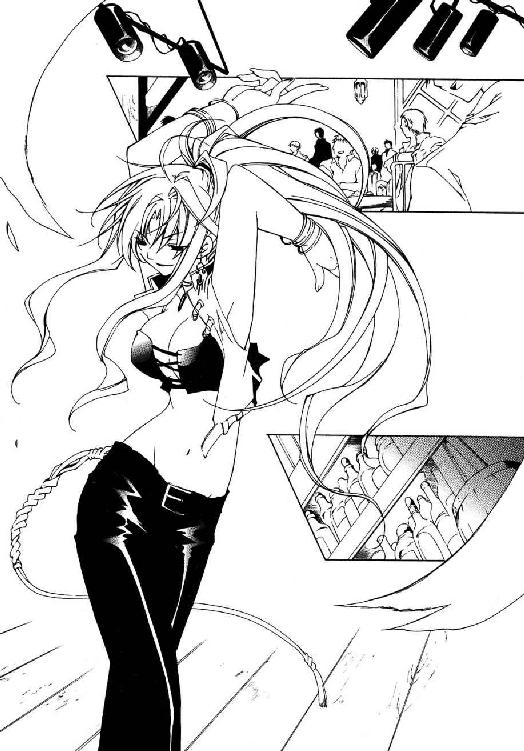
「アーティア、バーン！ いらっしゃい、楽しんでる？」
「うむ。見事な舞だったぞ」
「うん、今夜の君は特別綺麗だ。月の女神も嫉妬に狂って、きっと今夜は夜道を照らせないよ。ああ、カロリア......罪深き地上の舞天使！」
「ふふ、ありがと。なにか飲むでしょ？ おごってあげるわよ」
「わーい、やったね。正直、手持ちが危ういんだ」
まんざらでもなさそうに微笑むカロリアに、バーンは二秒前まで取り繕っていた雰囲気をあっという間に台無しにして顔をほころばせた。
バーカウンターについた三人に、それぞれグラスが回される。焼け付くようなテキーラがバーンの喉から腹へ染み渡っていった。
「──ゥくッ!? な、なんだこれは！」
両手で抱えたグラスに口を付けた瞬間、アーティアが裏返った声で叫んだ。
ロックスタイルのウイスキーを傾けながら、カロリアが首を傾げる。
「なにって......林檎酒だけど。アーティア、あんまりお酒強くなさそうだし」
「さ、さけ......？ 酒は、お前、いかんのだ......飲み過ぎると、心が腐ると......」
なにやらぶつぶつ呟きながら、アーティアはしばしグラスを見つめていたが──いきなり、中身を一気にあおった。バーンが止めに入る暇もない。
空のグラスをカウンターに置くと、彼女は据わった眼差しで口を開く。
「ふひょのろろれむぎゅ」
「いや分かんない分かんない」
首を振ると、彼女はふて腐れたように口を尖らせそっぽをむいてしまった。
近くのテーブル席から、バーンも顔見知りの常連客の一団が声をかけてくる。
「よう、バーン！ また女ァ変えたンかぁ？ えらくちっこいの捕まえたな!!」
「趣味が変わったのかよ！ ジャンヌとレベッカはどうすんだぁ!?」
「うっさいな、こないだフられたよ！ ほっとけ飲んだくれめ!!」
すでにできあがっている鉱山夫たちに、笑い混じりにグラスを投げる仕草をしてやる。彼らもおどけて大げさに避ける真似などしてくれた。下品だが気の良い連中ではある──反撃とばかりに串焼きの串を投げてくる辺りは大人げないが。
飛来する串から顔をかばっていると、不意に串ではないなにか固い物が手に当たる。とっさに掴み取れば、それは錆の浮いた吹奏風琴だった。
「久しぶりに、演ってくれよ！ さっきのヘボバンドじゃ話にならねぇ!!」
「へへ、それ聞いたらゲイリーが怒るぜ!? 本当のこと言われるの嫌いだから！」
受け取ったブルースハープを掲げて応えながら、カロリアに訊ねる。
「大丈夫だよね？」
「ええ。今日はもうショーの予定もないし、あなたの演奏も聴きたいしね」
了解を得たバーンは手の中でくるりと楽器を回転させた。そしてリードに口をつけたところで──ふと、なにが始まるのかと見上げてくるアーティアの視線に気付く。
カロリアが横から顔を出してきて、おもむろに薄ら笑いを浮かべた。
「ねえアーティア。あなた、踊ってよ」
「......おどる......？ うむ。なんの、それしき......、......踊ッ!?」
怪しい口調で呟きこくこくと首肯してから、アーティアは改めて悲鳴を上げた。
カロリアは楽しげに口の端を持ち上げ、逃がさないとばかりに彼女の腕を掴む。
「大丈夫よ、私も一緒に踊るから。......あ、歌も歌ってね」
「歌だとっ!?」
重ねて悲鳴を上げるアーティアと、適当な笑顔でひらひら手を振るカロリアに交互に視線を注いで──当然バーンは、面白そうな方に加担することにした。
「大丈夫だよ、踊りやすい曲にするしさ。それに歌も......そうだな。適当なとこで適当に気が向いたら、適当にこう叫べばそれでいい。てやんでえってね」
「て、て......やんでー？」
「そうそう。それじゃいくよー......みんな、乗ってこい！ 『フロンティア』ぁ!!」
未知の言語でも聞いたように繰り返す彼女の肩を叩いてから、彼はあらん限りの大声をあげる。聞きつけた客たちが持っていたものを振り上げ叫び返してきた。
ブルースハープに口を当てリードへ思い切り息を吹き込む。
旋律は、景気のいい西部風ブギー。
まずはカロリアが動き出す。そして彼女に合わせ、客たちが不格好なステップで踊り始めた。撤収準備をしていたバンドメンバーもにやりと笑い、ケースから楽器を引っ張り出す。バイオリンやアコーディオンの音色がバーンの演奏を追いかけてきた。
「ほら、アーティア！」
「うぐ、ぬう──てッ......てやんでー!!」
困り切った顔をしていたアーティアだったが、カロリアに促されてようやく腹をくくったらしい。やけくそじみた声を張り上げると、見よう見まねで手足を振り回す。それは踊りというよりも、雨雲を呼ぶ呪術師のようなぎこちないステップだったが。
──もとよりこの曲に、明確な歌詞やメロディーラインはない。
そもそも『フロンティア』は曲名というより、即興にバカ騒ぎするための合図に近い。この言葉が叫ばれた瞬間、そこにいる者は皆兄弟となり、互いに歌い踊り明かし、飲み続ける。決まりごとはたった一つ──『なにがなんでも盛り上がれ』。
陽気に。愉快に。享楽的に、刹那的に。今日の憂鬱と心配事を飲んで、騒いでぶっ飛ばし、明日の荒野を踏破する力へ変える......これは、開拓辺境に生きるための一曲なのだ。
「痛ぇッ!? 誰だ、足踏んだ奴ぁ！」
「あ？......ッてぇッ、やりやがったな野郎っ！」
「うひょー、来た来た来たぁー!?」
罵声をあげた客同士が殴り合いを始めると、バーンがいよいよ楽しげに叫ぶ。
これだけの大騒ぎ、まずもって喧嘩が始まらないわけがない。そしてサルーンでの喧嘩は大抵、その場の全員を巻き込んで大発展する。案の定、殴り飛ばされた男が倒れた先で別の誰かが怒鳴っていた。あとはもう、広がるところまで広がるしかない。
テーブルがひっくり返り、椅子が飛び、誰かが二階からフロアへダイブする。シャンデリアに飛びついて空中を駆ける者が現れれば、気付いた全員で皿や料理を投げつけ撃ち落とす。手近にボトルがある者はそれを取り、そばにいる誰かをぶん殴る。バンドメンバーから楽器を奪い、滅茶苦茶に演奏を始める者が出てくる。大騒動だ。
罵声と怒声と歓声に汚れ、開拓辺境の夜は騒々しくふけていった。
「で、どうだった？」
「最悪だ......」
夜明け前──サルーンの乱痴気騒ぎにようやく収拾がついた頃。
亡霊のような声をあげるアーティアに、彼女を背負ったバーンは苦笑した。
「腰立たなくなるくらい飲んでたくせに」
「黙れ......。あれは......カロリアが......」
ぐったりと彼の背にもたれ、アーティアはせめてもの反抗なのか、首に回した腕を絞めてくる。よほど参っているらしく、ほとんど力は入っていなかったが。
効果がないと悟ったのか疲れただけなのか、彼女はすぐに腕を緩め、ほう、とほのかに酒の匂いがする吐息を首に吹きかけてくる。
「......お前......楽器、使えたのだな......」
「ちょっとだけね。幅広く芸あれば、幅広く女の子口説けるし」
「......ふふ。少し、羨ましい......少しだけな」
また与太者やらなにやらけなされると思っていたバーンは、予想外の返事に驚いて振り返った。酔いのせいで朱の差した頬を緩ませ、彼女は眠たげに目を細める。
「私は、楽器も......歌も、踊りも............まるでダメだからな......」
「そんなことないって。ちゃんとウケてただろう？」
「......やかましい」
微妙にフォローになっていないことには気付いたらしく、背中に頭突きされる。
「だいたい、てやんでーとは......どういう意味だ。聞いたこともないわ......」
「さあ。いや、誰が言い始めたのか知らないってことだけど。フロンティアじゃ掛け声みたいなもんだよ。気分良くなってきたら、とりあえず叫んどいて間違いはない」
「いい加減な......これだから、人間は............ぅぷ」
「うわ！ ほら、無理しないで。そこで吐いたらマジで泣くからね、僕」
不穏な呻き声をもらすアーティアを慎重に揺すり上げ、溜め息をつく。と。
ざりっ、と靴が砂を噛む音がして、バーンは前を向いた。
無人の通りの真ん中に、誰かが立っている。
一人ではない。行く手を遮る形で、もう一人。二人の男が黒のロングコートに手を突っ込み、バーンを睥睨していた──なにやら剣呑な雰囲気だ。
顔を伏せ、通りの脇へ寄るが......案の定、すれ違おうとしたところで片方の男が声をかけてくる。左目の周りに彫られた朱い入れ墨が、薄闇の中に目立っていた。
「待ちな、兄ちゃん」
瞬間、バーンは無言で駆けだした。
「なに!? お、おい聞こえなかったのか！ 俺は待てと......この野郎!!」
なにやら文句が聞こえるが、当然足は止めない。
手近な路地に飛び込み、特に入り組んだ方へ走っていく。この辺りはよほど慣れていないとそうそう望む方へは行けない迷い路地だ。一応、警戒して耳を澄ませながら、バーンは青い顔のアーティアをそっと地面に座らせた。
「......っうぷ......く、油断だ。おい、奴らは──」
「あ、やっぱり？......竜徒、だよね」
先んじて答えるバーンに、アーティアはぎょっと目を丸くする。
「気付いていたのか......？」
「こんな時間にランタン無しで人を待ちかまえてるのは、まともな人間じゃないさ」
鋭さのとれた瞳で見上げてくる彼女に、バーンは声をひそめて囁いた。
「......でさ、どうする？ 正直、人一人担いだままじゃ逃げ切れないよ。君、彼らをどうにか出来ない？」
「うむ......無論、迎え撃つだけだ......、......使命、果たす......」
切れ切れに、しかし断固として言い放ち、彼女は壁を背でこすって立ち上がった。が、すぐに足を滑らせ身体が傾ぐ。慌てて支えてやりながら、バーンは大声を上げ......ようとして自制すると、抑えた声で器用に叫んだ。
「駄目、ストップ待った！ ろくすっぽ立てないのにケンカなんか無理だって！」
「......どけ......使命、果たさねば......」
寄りかかるバーンの胸に指を立て、彼女は歯を食いしばった。脚も視線も定まらずに震えている。立っているだけで精一杯なのだろう。が、
「私が、教えたっ......私の弟子だ。私が止める............止めねばならぬッ!!」
それでも、倒れない。
腕を回せば簡単に隠してしまえそうな矮躯を強ばらせ、こちらを押しのけようとするアーティアの顔は、愚直なまでの決意に研ぎ澄まされていた。
胸の奥に熱が生まれる。
《息吹》の炎ではない。凍てついた顔の奥で眠るアーティアの覚悟に呼応するように燃え上がる、ただ真っ直ぐになにかを訴えてくる──強い想い。
その想いのまま、バーンはそっと彼女の頬に触れた。
焦点の合わない瞳で見上げてくる小さな顔を両手で包み、身を屈める。
「アーティア......」
そして震える声で囁くと、彼女の顔をそっと引き寄せ──続いていきなり突き放し、また引き寄せ、右へ左へ大きく揺さぶりさらにぐるぐる回転させた。
「あぎゃあぁぁあぁぁあぁあぁああ────っ!?」
雅に欠ける悲鳴を上げながら、アーティアはされるがままに振り回される。
バーンはよろめく彼女を肩に担ぎ上げると、素早く近くのゴミ箱へ放り込んだ。そしてゴミの中で目を回すアーティアを覗き込み、引きつった笑顔を浮かべる。
「そういうカッコいいことは、酔いを覚ましてから言おうね」
「ぁうッ......ん、はッ......お......お前、っぅぷ......なにを............!?」
「な、なんとか連中を撒いてみるよ。......こ、ここ、この辺りは僕の庭みたいなもんさ。分はそう悪くない。............、よね？」
「知るか馬鹿......」
呻きながらも彼女が律儀に答えてくれた事で、少し気が紛れる。
遠くから足音が近づいてくる。今の悲鳴を聞きつけられたのか。慌ててゴミ箱の蓋を閉めようとした時、アーティアがか細い声で言ってくる。
「──あの二人、ジェドとトゥーコは......カーツマンほど《息吹》を扱えん、が......二人揃っていると、危険だ............抵抗するな。逃げ続けろ」
「......うん、ありがと。しばらく大人しくしたら、君も適当に逃げてくれよ」
精一杯に強がった笑顔を土産に残し、彼は蓋を閉じた。
薄暗い路地に一人残された途端、心細さが襲ってくる。とりあえず、バーンは足音と逆の方向に走り出した──頭の中で、めちゃくちゃに悲鳴を上げながら。
（......いや、いやいや！ 待てよ、なにやってるんだ僕!? 自殺行為だぞこいつは！ お前はいつから竜徒とケンカ出来るようなタフガイになった!?）
鋭敏に危険をかぎ取る腰抜けの嗅覚が、全力でそう訴えている。
弱気に足を止めかけた時、背後で、破鐘のような大声が上がった。
「ハッ、いたな！......あ、いや!? アーティアはどこにいった、テメェ！」
「相棒......そんなことを言っている間に、さっさと追いかけるべきだ」
振り返ると、路地の向こうに先ほどの男たちが見える。怒鳴っているのは左目に入れ墨を入れた男だ。隣で沈んだ声を上げる男は、対照的に右目に入れ墨を入れている。黒っぽい色の、道化の仮面じみた涙を模したデザインだ。
朱い入れ墨の男がじろりと相棒を睨んで、引きつった笑顔を浮かべる。
「フハハ......トゥーコ。じゃ、なんでさっさと行かねぇんだ、阿呆」
「悲しいなジェド......心無い一言が突き刺さる......悲しい......本当に──」
涙の入れ墨、トゥーコが目元を押さえ、悲しげに声を湿らせる。
不吉な直感が背骨を突き抜けた。
直後、彼は不意にこちらに顔を向け──口から、《息吹》を吐き出す。
アーティアの吹雪のように鋭くも、ブランディンの稲妻のように激しくもない《息吹》は、気味の悪い影となり迫ってくる。
「うぁ──ッ!!」
すんでの所で横道に倒れ込めたのは、幸運だったというより《息吹》の速度が遅かったせいだろう。《息吹》がかすめたのか、ブーツになにかこびりついている。
水......のようだったが、それは水より遥かにドロッとした、粘性の物体だ。
「これ......、泥？」
指先にすくった泥から顔を上げ、バーンはたった今逃げ込んできた路地を見る。
路地に満ち、不気味に流動しているそれは、泥以外の何にも見えない......まともに飲み込まれれば、川で溺れるより悲惨な死に様を晒すことになるだろう。
「かッ──か、勘弁してくれよ、もうッ!?」
手まで使って地面を掻き、バーンは転げるように走り出す。
その一瞬、背後から再び、路面を泥の《息吹》が洗い流していった。
足を取られ、バーンは宙返りするように泥の中へ転倒する。そのまま背中で地面を滑っていく彼の視界に映ったのは、口から泥の滴をこぼして落涙するトゥーコ──夢に見そうな絵面ではあった──と、胸を反らし息を吸い込むジェドの姿。
「イィィハアァァッ!!」
（《息吹》ッ......!?）
猛るジェドの歓声に、バーンは頭を抱え身をすくめる。
そのまましばし、意外なほど長い間、死を覚悟して目を瞑っていると──ジャッ、と派手な音と共に、むせるような熱気と水蒸気がバーンの顔に吹き付けてきた。
「ッぶわ......って、え？ な、なんだこれ!?」
とっさに身をよじろうとした時、身体に......いや辺り一帯に起こった異変に気付き、バーンは愕然とした。路地いっぱいに広がった泥──その泥が干上がり、漆喰のごとく固まっている。無論、その中に倒れているバーンも巻き込んで。
背中と足首を地面に固着された彼に、ジェドとトゥーコが近づいてくる。歪められたジェドの口の端から、ゆらめく陽炎だけが立ちのぼっていた。
熱──ジェドが宿す《息吹》は、高熱の《息吹》ということか。
（泥と、それを固める熱......！ 二人だと危険って、こういうことかよっ!?）
力任せに暴れてみるが、手足は鉄で溶接されたかのようにぴくりとも動かなかった。じたばたもがくバーンを静かに睥睨し、トゥーコが嘆くように頭を振る。
「無駄だ......俺たちの《息吹》の束縛から逃れられた者は......わずか、四人前後」
「前後って」
「弱点は......にわか雨......」
「乾物干してるんじゃないんだからさ......」
「ぐひゃひゃ──ウザってぇなぁお前ぇはよおぉぉ!?」
「苦しい......苦しいぞ、相棒......吐きそうだ............おぉ」
なにやら訊いていない事まで教えてくれるトゥーコの首を掴み、ジェドが笑いながらがしがしと揺さぶった。それから緩みかけた緊張の糸を張り直すようにトゥーコを放り捨てると、肩をそびやかして見下ろしてくる。
「ぎひ。安心しな、訊くことに答えりゃ殺しはしねぇよ」
「なるほどね。で、なにからお答えしましょうか旦那、へっへっへ」
間髪入れずにへりくだるバーンに、ジェドは半眼で肩をこけさせた。
「......ちったあ逆らってみる根性とかねぇのか、お前ぇは」
「マッチョ志向って女の子受けしないんだよ」
「いいけどよ......じゃ、答えな。なんでアーティアと一緒にいやがった？」
「な、ナンパしたんだけど？ ご飯食べて、飲み行ってさ。彼女お酒弱いね」
視線を泳がせるバーンを見下ろし、ジェドがにやりと顔を歪めた。安煙草で黄色くなった歯の隙間から、陽炎──《息吹》が立ち上る。
「ホラはよせ。ありゃナンパに引っかかるほど気の利いたガキじゃねぇし、お前ぇに気まぐれで引っかけた女のためにケンカする度胸がある風にも見えねぇよ。......正直に吐け。でねぇと、頭の皮ァ剥いでケツ拭いて捨てッちまうぞ」
「そっ、そいつは──すくむね。オーケイ、言うとおりにするよ......」
顔を引きつらせ、バーンは視線をジェドの後ろに逸らした。相手に気取られないようにそっと──そうしようとしていることが伝わる程度には、わざとらしく。
朱い入れ墨が怪訝そうに歪んだ瞬間、バーンは快心の笑みを浮かべて叫んだ。
「アーティア、今だ!!」
「なッ!?」
ジェドが弾かれるように背後を振り返ると──そこにはただ、生ぬるい闇だけがある。
半眼に目を細め、ジェドはもう一度振り返った。
地面に、白いコートとブーツだけが張り付いている。更にその向こうには、もの凄い勢いで路地の奥へ逃げていく金髪の男の背中があった。
響く怒号を背に受けながら、バーンは横合いの道へ飛び込む。
コートの丈に余裕があって助かった。もし尻が地面についていたら、ズボンを脱いで逃げなくてはならなかったところだ。それはいくらなんでも惨めすぎる。
（......いや。もう、十分かっこ悪いかな）
泥まみれで裸足のまま路地裏を逃げまどう姿は、お世辞にも雄々しくはない。
それでも、走り続ける。それは保身のためだけではない──それより先に強く叫ぶ、正体不明の感情が彼を突き動かしていた。
だから今は降参できない。立ち止まれない。走り続けるしか、ない。
「──ああああ、もう！ 僕のスタイルじゃないんだよ、こういうのはさッ!!」
白みかけた夜空へ非難がましく叫んで、迷路のような路地を駆け巡る──と。
「............ッ!?」
「悪いな、ここは行き止まりだ......」
すぐ先の曲がり角から、ゆらりと黒い影が進み出る。右目に涙の入れ墨──泥の《息吹》、トゥーコ。複雑な路地の構造を逆手にとって先回りしたらしい。
慌てて足を止め、逃げ道を探すが......ない。逃げ延びる道はどこにもない！
「嘘だろ......ままま待ってくれ、話せば、話せば分かるって！」
必死に言い縋るが、トゥーコは顔色一つ変えない。不気味なほど淡々と頬に涙を伝わせ口を開くと、泥の《息吹》を解放する。
──そこから先の時間は、ひどくゆっくりと流れていった。
（............え？）
まずはバーンが走り出す。後ろではない。トゥーコに向かって。
初めの一歩を踏み出した瞬間、自分がなにをしているのか理解できなかった。二歩目を踏み出した時点で混乱が始まる。三歩目で立ち止まろうと強く路面を踏みしめ──四歩目はそのおかげで、より強く踏み出すことが出来た。
（よせ──下手な──抵抗を──するなよ────バーン!?）
寸断された瞬間の中で必死に己を制止するが、手足は止まらない。轟然と迫る泥の奔流を睨むと──バーンは《息吹》の下をかいくぐり、相手の懐へ飛び込んでいった。
驚愕に歪むトゥーコの顔を、両手を突き出し、押し上げる。夜空を見上げる格好にされたトゥーコの《息吹》が噴水のごとく宙へ噴き上がった。
「......お......」
間抜けな声が夜空に響き──同時に《息吹》の噴出はぴたりと途切れる。空を覆い隠すほど噴き上がった泥が、ぽかんと見上げるトゥーコの上に降り注いだ。
飛び退こうとする彼の足を素早く引っ掛け、バーンは転がるようにその場を逃げ出す。意外なほどあっさり転倒したトゥーコを、大量の泥が悲鳴ごと押し潰した。
全ての泥が落下した後には──泥まみれで、ぐったり横たわる竜徒だけが残る。
「............。も、もしもーし......？」
及び腰でトゥーコに近づき、つま先で身体をつつく。倒れた時に頭でもぶつけたのか、彼は白目を剥いて泡を吹いていた。完全に気絶している。
「──は、ッはは」
思わず笑いが込み上げてくる。バーンは腹を抱えて引きつった笑い声をあげた。
「ははっはっ......やった、やった！ 上手くいった！ どうだいこれ──僕だ、僕がやったんだ！ 竜徒を！ この野蛮人を僕が、僕がやっつけてやった!!」
心臓が今になって、思い出したように激しく脈打ち始める。
「すごいぞ、こいつは一生自慢できる！ ああ、誰かに見せたかったなぁちくしょう！」
「安心しな、俺が見てたよ」
と、低い声が聞こえると同時、思い切り背中を蹴り飛ばされる。
息が詰まり、前のめりに倒れ込んだところを、今度は背中を踏みつけ押さえられた。
「ふッ!? が............ぁ」
背骨の軋む激痛に声も出せないまま、バーンはどうにか背後を見上げる。
隠れていたのか回り込んできたのか、朱い入れ墨に縁取られた左目をつり上げたジェドがこちらを見下ろしていた。
「クソッタレが......なにか吐けとはもう言わねぇ。黙って死ねや」
凄みの利いた声で宣言し、ジェドはコートの内から大振りのナイフを抜く。
必死に両手で地面を掻くが、しっかりと踏み押さえられ身動きも出来ない。恐怖にちらつく視界でジェドの後ろを見上げ、バーンは一縷の望みを託し声を振り絞った。
「アーティアっ、今だッ!!」
「ナメんなホラ吹き、くたばりやがれ！」
怒号と共に振り下ろされたナイフは......バーンの喉笛を切り裂く寸前、停止する。
そしてそのナイフごと、ジェドの身体はゆっくりと地面に倒れ込んだ。
その背をおぼつかない視線で見下ろして、アーティアが、荒い呼吸の合間に呟く。
「............確かに......今、だったな」
「......間に合わないかと思ったよ」
大きく息をつき、バーンは首をすくめて起き上がる。
アーティアはジェドの脳天を一撃した角材を杖にしていた。威力を増すためか、先端に屋台通りで買った銀のチェーンを巻き付けている。
最大限の虚勢を張って、彼は膝を笑わせたままぐっと親指を立てた。
「──泥の奔流の中に、命を生かす道があったよ。修行、役に立つじゃん」
「......。あれは、そういう意味ではないわい......たわけ」
この会心の成功譚も、彼女にかかれば溜め息一つで済ませられてしまうらしい。
少し落ち込む彼に、アーティアは疲れた声で続ける。
「根性なしの分際で、こんな時だけ......気張るんじゃない、馬鹿者が......」
「うわ、キツっ。せっかくいいとこ見せようって頑張ったんだ、ぜ──？」
泥を拭い、冗談めかして答えた瞬間──すとん、と、これまでずっと胸につかえていた疑問が収まるべき所へ収まったような気がした。
なぜ、こんな似合わない、自殺まがいの無茶をしでかしたのか。
答えはわけもなく簡単で、そしてやはり、彼には似合わないものだった。
（......僕は......この子に、いいところを見せたかったのか）
アーティアに。半分死んだような目でこちらを睨んでいる、この竜徒の少女に。
夕日の中の光景を思い出す。風踊る茜色の丘に立ち、己の行く道を決めた者の「強さ」をまとう少女──強く、凜々しく、途方もなく格好いい小さな女の子。
そんな彼女に感化されて、少しだけいい格好をしてみたくなった。ただ、それだけ。
たどり着いた結論の間抜けぶりに脱力し、バーンはその場に座り込む。突然へたり込んだこちらを怪訝そうに見やり、アーティアがふらふらと近づいてきた。
「見栄を、張るにしても......詰めが甘い。油断するから......背後など取られる」
「う......それはまあ。でも結果オーライって言葉もあるじゃないか。知ってる？」
「知るか、与太者。......しかし」
泥だらけバーンの顔を覗き込むと、彼女はそっと、唇を笑みの形にする。
「背を向けず、立ち向かった根性だけは見上げたものだ。............よく戦ったな」
初めて聞く称賛の言葉と共に、アーティアは手を差し伸べてきた。驚くほど柔らかな微笑にむしろ戸惑いながら、バーンが恐る恐るその手を取り立ち上がった、その時。
遥か遠く──おそらく迷い路地一帯のどこかから、声が聞こえてくる。
『......通報があったのはこの近辺だ、油断するな！』
『だからなんでわざわざ宣言するんですか！ それ聞かれたら逃げられちゃうでしょ!?』
『意気込みの問題であるッ！ さあ突撃だ、目に物見せよ〈抗竜党必死開拓団〉!!』
『あーもう、さっきまで死にかけてたくせに、なんでそんなに元気なんだアンタ──!?』
明け方だと言うのに不必要にでかい声と、哀れな悲鳴。それに続いて、どたどたと何人分もの足音がバラバラの方角へ散っていく──
「──とりあえず、逃げよっか」
「うぬ......しかし、ジェドとトゥーコ......放っておくわけには......」
「彼らが預かってくれるさ。このままじゃ僕らも一緒にとっ捕まっちゃうけどね」
言いながら、バーンは彼女の手を引いて歩き出していた。アーティアも今の体調で連中と事を構えるつもりは無いらしく、呻きながらも後について来る。
「......まあ、お前を放っておく方が不安なのは、確かだな。また見栄を張って、死なれでもしたら............迷惑だ。うぷ......ぁう。気持ち悪い......」
「......我慢しないで吐いちゃえば？」
チェーンを外した角材を捨て、こちらに体重を預けてくる彼女の肩を支えながら、バーンは、先ほど出したはずの結論を反芻していた。
（彼女のカッコ良さに憧れた......それだけなのか、本当に？）
それだけで自分が、自他とも認める根性なしが、ああまで命を張れるものだろうか？
そうかも知れないという憶測と、そうであればいいという願望が堂々巡りを始める。
黙って頭を振ると、彼は答えのでない疑問を拭うように独りごちた。
「とりあえず──頑張ってみよっかな、修行」
「........................頑張れ」
ぎょっとして、振り返る。アーティアは澄ました顔で前を向いていた。
（......明日はどれだけ無茶な「修行」をさせる気なんだい、君は？）
想像するのもおっかない。
おっかないからバーンはただ、笑うしかなく苦笑した。
第三章 岐路 No one......
敗北の味、とはありふれた言い回しだが、彼にとっては白峰ノルグの冷たく乾いた土の味がそれにあたる。何度となく舐めさせられ、這いつくばらされた土だ。
『立て、ブランディン！ それでもお前は誇り高き、ノルグの里の星守りか!!』
それが師、アーティア・アリア・ノルガンディアから最も多く聞かされた言葉だ。
ブランディン・オーツの歴史は常に力への渇望と共にあった。
始まりは辺境の貧民街。夢も未来への希望もない、人の一生を強固に閉じこめ、腐らせていく棺桶のような街は、ある時、悪党共の一団に襲われあっけなく壊滅する。
一生抜け出せないと思っていた世界を、その暴力が容易く打ち砕いた。どんな不幸も不平等も、思うままひっくり返すことの出来る〝力〟──彼は、魅せられた。
襲撃を生き延びた彼はその後、鉄道の護衛や政府の騎兵隊などに片端から志願した。辺境で撃ち合い、斬り合い続けること十余年。更なる力を求め、彼は白峰ノルグへ入り竜徒となることを決意したのである。
『お前か、新入りというのは』
初めてアーティアに引き合わされた時、彼は唖然とすることしか出来なかった。
目の前で腕を組み、精一杯に胸を反らしていたのは、年の頃五、六歳の子供......彼の半分も背丈のない少女だったのである。
『力を求めて来たそうだな。ならば、まず私を地に倒してみせろ』
冗談ではない。子供と喧嘩しろと言うのか！
つき合っていられないと踵を返しかけた時──少女の突き上げた掌底がみぞおちに埋まり、彼は数センチも宙に浮き上がる。その直後には、頭上にまで跳び上がった彼女に、地面に蹴り倒されていた。なすすべもなく。手も足も出せずに。
それからは屈辱の日々だった。
最初は無手で挑んだ。次第に棍棒など武器を持ち始めた。掟を破り、ライフルまで持ち出したことだってあった。だが──アーティアには敵わなかった。
『何度言わせる！ 爪でも牙でもない、真に磨くべきは邪に汚れたその心だ！』
（こきやがれ......そんなくだらねぇおためごかしは聞きたかねぇ！ 力だ......偉そうに講釈を垂れる、その白っちゃけたツラをずたずたにする力が欲しいんだ!!）
彼は、アーティアの下を飛び出した。
里を離れ、白峰ノルグへ更に深く潜り数年......彼の生き様はまるで修羅だった。山を駆け、滝を割り、岩を砕いて獣を喰らい──とうとう、彼は《息吹》を宿した。銃弾より速く敵を焼き尽くし、相手に彼という存在を知らしめる雷の《息吹》。
だが、それだけでは不十分だった。自分が味わった屈辱を晴らすにはより大きな力が、圧倒的な暴力が必要だ。だから、彼と同じくアーティアの下で辛酸を舐めてきた仲間を集め《罪人竜の息吹》を強奪する計画を持ち掛けたのだ。
金と地位は強力な武器になる。いくつもの軍を渡り歩いたブランディンはそれを承知していた。そして竜徒が封じ恐れる禁忌の一品ともなれば、幾らでも金貨を積み上げる好事家の類がいるということも。《罪人竜の息吹》が奪還されたのは計算外だったが......その失態ももはや回復した。それだけ価値のある代償を保証できたばかりか、およそ期待した以上の〝力〟をまで手に入れる好機に恵まれたのだから。
粘つく闇に閉ざされた部屋の中で、狂笑が回る。
「いよいよだ......今度こそ、俺の前に屈服させてやる、アーティア!!」
──ブランディン・オーツは気付いていない。
アーティアは、ともすれば、純粋な目標であったのかも知れない。彼の怒りは己を高め力を得た、到達すべき道の先に立つ者への憧憬の念だったのかも分からない。
ただ、認められなかった。年端もいかぬ少女に打ち負かされる己を許容できなかった。
それはささやかな自尊心が生んだつまらない間違いだ。力を得るために彼女を越えるのではなく、彼女を打ち負かし、ただ侮蔑する手段として力を求め始めた。
その道を踏破し、彼女を屈服させた時、彼はそこからどこへ進もうというのか──それを考えるには、彼の心は憎悪と愉悦に穢れきっている。
激情に転がり落ちるまま行く道は易い。
「──で、今日で五日目だけど、やっぱり《罪人竜の息吹》はまだなのかい？」
「はい。運命の奇なるかな、手配した仲卸が投機関係の不渡りで蒸発いたしまして」
手入れの行き届いたブロンドをかき上げ、こなれた愛想笑いを浮かべる「相談役」──バーン・フラットランドとの問答に、そもそもなにか期待しているわけではない。
執務机に肘を乗せ、シム・ジュニアは溜め息をついた。
「仲卸がどうとかいうのは、たぶん初めて聞くんだけどねぇ」
「......そ、そうでしたっけ？ いやまあ、しかし、取引とは生き物です。その本質は流動、変容、曖昧模糊にして永劫回帰。輪廻はあざなえる縄のごとくだからしてあの」
「あー、うん。もういいよ、わけわかんないし。明日は良い報告を聞かせてくれ」
「あ、ラッキー......じゃなくて、もちろんですとも」
とびきり上等の愛想笑いを浮かべて、バーンは椅子を立ってこちらに一礼した。適当に手をひらめかせて応えておきながら、本日分の書類仕事に着手する。その時。
「──お話の最中、失礼します」
水底で腐った藻のように濁った声がして、隣の部屋へ繋がる扉が静かに開かれた。そしてがらがらと台車を押し、皺だらけの白衣を着た男が執務室へ入ってくる。
男は押してきたカーゴを手で示し、四角いマスクをもごもごと蠢かせる。
「サンプルが絶命いたしました。これで、ストックはあと一体です」
「なんだ......意外に保たないものだねぇ」
口を尖らせ、彼はカーゴに乗った「サンプル」......白目を剥き、血泡を吹いて絶命している死体を一瞥した。ブランディンが提供してくれた竜徒の一人である。
「しょうがねぇ、トゥーコは《息吹》の扱いが下手だったからな。なに、まだジェドの奴が残ってるだろ。なんとかなるんじゃねぇか」
言って肩をすくめたのは、執務机に寄りかかるブランディンである。確かに研究の進展を考えれば、もうそう多回数の「実験」は必要あるまい。
机を這う胡蜂を指でつつき、彼は白衣の男に視線を向けた。
「オーケイ、次のサンプルを解凍してくれ。それは......うん、捨てちゃっていいや」
無言で頭を下げ、男はトゥーコという名だったらしき死体を載せたカーゴを押して部屋を出て行く。満足した彼が書類仕事に戻ろうとした、その時。
視界の端に奇妙な物体を認める──部屋を去ろうと踵を返しかけた不自然な体勢のまま凍り付き、二枚目な顔をコミックのように崩したバーンだった。
「......竜徒の死体に興味でも？ フラットランド君」
声をかけてやると、彼はびくりと目に見えてすくみ上がる。それから意味なく手をばたつかせ、極めて不自然な笑顔を顔面に貼り付けた。
「い、いえその、め、珍しいものを見たなぁ！ と......ね？」
「ふん？ 実は、そう珍しくもないんだけどねぇ」
耳元にじゃれる蜂をかまいながら、彼は隣室への扉を顎で示した。
「興味があるなら、ボクの研究室を覗いていくといい。ちょっとしたもんだよ、連中の剥製やら竜工芸やら、色んな品をコレクションしてる。一見の価値があるぜ」
「はくッ──こ、光栄ですがまたの機会に......一生こないような機会に一つ」
「そう？ 残念だよ、オーガンライト・エンジンの試作機なんかもあるんだけどねぇ......燃料要らずでほぼ無尽蔵に動く怪物だぜ。その分、出力が安定しにくいんだけど」
「いえいえいえお構いなく、マジでお構いなく。それでは失礼をば......」
同情したくなるほど青ざめて、バーンはそそくさと退室していく──ややあって扉の外で、あたかも人間が階段を踏み外して階下へ転げ落ちていくような音が聞こえた。
鼻を鳴らし、彼はあらためて書類に目を落とす。と。
「失礼しますッ!!」
ノックと同時に扉を開け──というか扉を殴り開け、灰色の制服を着た巨漢が執務室へ飛び込んでくる。後ろから、同じ制服の青年が走ってついてきていた。
ブランディンが露骨に険悪な顔をするのは無視して、シム・ジュニアは飛び込んできた人物、〈抗竜党必死開拓団〉のブロック・キャリバーを見上げる。
「相変わらず騒々しいね、キャリバー君。昨日はどうだった？」
「はッ！ 恥ずかしながら、未だ小娘の捕縛はなりません!! しかしご安心下さい、ネオ・グラム・シリーズもすでに伍号機〝真・仏滅デイドリーム〟までの封印を解除しております！ もはや奴の命、保って本日の日暮れまでッ!!」
「だから殺すなって言われてるでしょうが!! 純粋なバカかアンタ!?」
力強く宣言するブロックに、追いついてきた青年が頭を抱えて叫んだ。それでも動じない（むしろ聞いていない）彼に、シム・ジュニアは溜め息を溢す。
「......それで？ 例の大鉈の方は？」
「はッ、想像以上の硬度です。この通り、竜工芸の爪に耐えきりました」
「！ へぇ──？」
昨日までとは違う報告に、シム・ジュニアの眼が鋭く輝く。
ブロックが鞘から抜いて見せたオーガンライト鉄鋼の戦闘鉈は、ガス燈の光を薄青く照り返している。その広い刀身にはなるほど、毛筋ほどの傷も見あたらない。
これまでアーティアに断たれた鉈は計三本......この一振りはそれまでのデータを基に新しい精製法を試みた物なのだが、ようやく望む結果にたどり着けたようだ。
「でかしたキャリバー君。まったくお見事だよ、大金星といっていい」
「......は？ し、しかし小娘をまだ......」
「いや、キミの仕事としちゃこっちの方が重要だ。竜徒に白兵戦を挑めるのは、キミ以外に考えられないからね。そうだ、その鉈は進呈しよう。ボーナスだ」
その言葉に、ブロックは不審げに顔をしかめた。確かに褒賞としても、オーガンライト鉄鋼は破格だったかもしれない──自分にとっては端た金に過ぎないのだが。
手元の書類に今度こそ視線を落とし、彼は口を歪めた。
「実はね。あの娘を捕まえる用事は、もう簡単に済みそうなんだよ」
そしてブランディンにその書類──子飼いの調査員からの報告書を突き出す。
「居所が割れたようだよ、オーツ君」
「へッ、待たせてくれたじゃねぇか」
下卑た笑声をあげるブランディンに、シム・ジュニアは目を光らせた。
「彼女を確保してきたまえ。......念のため言っておくけど、キミ、一度やり合って負けてるんだからね。ボクの言いたいこと、分かってるかい？」
「ッたりめぇよ。ここで正面から行く奴は、ヒロイックだが間抜けな阿呆だ」
ぎろりと歯を剥き、ブランディンは鼻歌すら歌いながら出口へ向かう。と──バンッ、と凄まじい音が空気を揺るがした。
机の上に両手をついたブロックが、焦燥を露わにした声で怒鳴る。
「アビスパ卿、まだ小娘との勝負はついておりません!! どうか、奴と決着を!!」
「うるさいぜ──ブロック・キャリバー。ボクに意見する気かい？」
恐ろしく酷薄な声で、彼はブロックの顔面に言葉を突き刺した。その声に導かれるように、不吉な羽音を奏でる胡蜂が数匹、彼とブロックの間に飛び込んでくる。
ブロックは退きこそしなかったものの、それ以上抗弁もしなかった。
背後を振り返り、部屋を出ようとしていたブランディンへ大声で叫ぶ。
「竜徒！ 貴様は、こんな決着の付け方でよいのかッ!?」
「ハッ。勘違いしてんじゃねぇぞ、オッサン」
巨大な扉に手をかけて、ブランディンは肩越しにこちらを振り向く。
「俺はな。奴が這いつくばって許しを乞うところが見てぇだけなのよ」
──閉まる扉の向こうに消える背を追う者は、いなかった。
◆□□◆
それを、初めは歌だと思っていた。
鋭く切りつけるようで、でもどこかに愛惜を含んだ不思議な音。人が旋律を口ずさむのとは根本から違う、幾つもの音を同時に重ねるような複雑な声だ。本物の竜を見た経験など無いが、もしかしたら、こんな美しい声で鳴く生き物なのかもしれない──
ぼんやりとそんなことを考えながら、カロリアは部屋の扉を開ける。
【──────────】
五日前まで物置部屋だった即席の客室は、不思議な音で満たされていた。舞い落ちるように部屋の中を躍り、やがて窓から外へと溶け出していく、清涼な、音の粉雪。
扉を開けた格好のまま、しばし聞き入ってしまう。
【────？──／──なんだカロリア、なにをしている？」
不意に音が途切れて、カロリアはようやく我に返った。
彼女を呼んだのは、開け放した窓辺に座った黒髪の少女──竜徒、アーティア・アリア・ノルガンディアである。そういえば、ノックするのを忘れていた。
「あ──ううん、いい歌だなって思って。アーティア、歌上手いんじゃない」
「歌？......あ。いやその、ぬう。......これ、歌ではないんだが」
「わあ」
しまった、気まずい。
この友人が意外にも、歌や踊りなど「遊ぶ」のが下手なことをコンプレックスに思っていることは承知していたはずだったのだが。
なんとか取り繕おうと慌てるこちらを見て、彼女は髪を揺らして苦笑した。
「──竜の言語。修行を積み、生命の祖である竜の記憶に触れた者が思い出すことのできる言葉だ。一語ずつ意味を分割せず、伝える意味を並行して重ね一つの音に発声するから、獣が吼えるように聞こえる」
「ふーん......綺麗な言葉よね。本当に歌ってるみたい」
髪をかき上げて微笑み、カロリアは彼女のそばまで歩いていく。
「で、その竜語で誰と喋ってたの？ 白昼夢？」
「たわけ。なに、里の方へな。母様にこれまでの経過を報告していた」
「......え、そんなことできるの？」
「できん。一つのまじないだ。運が良ければ、風が想いを伝えてくれるかもしれないな」
驚くカロリアに、彼女はにやりと笑んだ。わざと勘違いするような言い方をしたのだ。
この五日間で、アーティアの表情は目に見えて変化している。
バーンの修行を監督している時などは、まだ容赦ない厳しい竜徒の顔をしているが、それ以外ではこうして笑顔を見せてくれる時間が多くなっていた。
彼女の額を指で突つきながら、カロリアは苦笑を返す。
「どんなこと話してたの？」
「《罪人竜の息吹》のことや、お前のことを。人間は必ずしも全員が堕落した心根の持ち主ではないと分かった。里にいては分からなかったことだ。あとは......」
額に触れる指をくすぐったそうに押し返しながら、アーティアは急に、拗ねたように口を尖らせた。そして語調を変え、唸るように低く呟く。
「......あの馬鹿弟子のことだ。奴めはお前とは全く違う、堕落しきった性根の持ち主だとな。根性なしにもほどがある。日に三度は逃亡を企てるし、仮病などいちいち数えるのも馬鹿らしい。......いつだったか、厭味にも私の前で踊りなんぞ踊ってな。『師匠、次のステップが分からないんで教えていただけますか』などとほざいて《息吹》まで吹いた時はさすがにどついておいたが。そうだ、先日あのブロックとやらが襲ってきた時も、奴は立ち向かうどころか私を抱えて敵に背を向け──なにがおかしい？」
笑いを堪えているのがばれたらしく、アーティアが不可解そうに眉をひそめた。
目尻に浮いた涙を拭いながら、笑い混じりに答える。
「なにって......アーティア、あなたバーンが大好きなのね」
「む？」
「だって彼の話になったら、急に喋るの止まらないんだもん」
「う、うぬ......そうだったか？」
困惑した様子で、アーティアは頭をかいた。そして自分の頬に触れ短く息をこぼし、
「そう──かも知れんな。阿呆の子ほど可愛いものだと、里の大人も言っていた」
「ああ、そういう方向に行く......まあ、あなたらしいけど」
「奴は私の弟子だ。見守らねばならん............それが、導く者が果たす義務よ」
ふと、窓の外へ視線を流し。
銀色の瞳を遠くへ向けるアーティアの横顔に浮かぶのは、深い後悔と、慚愧の念──
その表情をカロリアは、知らず息を呑んで見つめていた。
「──それで、どうした？ なにか用があったのではないのか？」
ふと向き直ってきた彼女の顔は、いつもの氷像じみた、凜と透き通った表情に戻っている。そこに、先ほど落ちた影は残っていない。
「あ、うん......そうそう。バーン、やっと来たわよ」
「そうか。奴め、今日は少し遅かったな。たるんどる証拠だ」
慌てて作った声は多少上ずっていたが、アーティアは気付かなかったようだ。呆れた風に眉根を寄せると、カロリアの横をすり抜け彼女よりも先に玄関の方へ歩いていく。
......阿呆の弟子を見守る師匠が、スキップで出迎えに行くだろうか？
「遅いぞ、弟子め。逃げ出さなかったことは褒めてやるが」
「逃げたら追っかけてきたじゃん、この前......ていうか、弟子ってちょっと」
密やかに苦笑するカロリアが玄関についた時には、既にそんな師弟の談笑が始まっていた。ここしばらく、毎朝繰り返されてきた光景である。
アーティアがやって来てからの彼らの日常は実に単純だった。朝、『アビスパス』へ報告に行ったバーンが帰りがけにアーティアを迎えに来る。そのまま日暮れまで「修行」が続き、バーンが尻込みする彼女を連れ店まで遊びにくる。その繰り返しだ。
ちなみにバーンがアーティアを部屋に泊めないのは、もちろん倫理観からではない──単に、彼の部屋が宿屋の二階だからである。
カロリアはひょいと肩をすくめ、二人の背を叩いて笑う。
「ま、今日も怪我しないように......は、無理よね。死なない程度に頑張って」
「任せておけ。せいぜい生死の狭間を行き来させるわい」
「来るのはともかく、行ったらそれは死んでるってことだと思うけど......」
力強く頷いて歩き出すアーティアに、情けない声で抗議しながらついて行くバーン。
二人の姿が見えなくなるまで見送ってから、カロリアは無造作なあくびをこぼす。うんと伸びをして、開店までもう一寝入りしようと部屋に戻りかけた、その時。
「よお姉ちゃん。あー、カロリア......アルバ？」
ふと、背後から呼び止められる。
振り返ると男が一人、そこに立っていた。店の常連客......ではあるまい。一度見たらまずもって忘れられない、嘘臭いほど悪党然とした風体の大男である。
男はコートのポケットから丸めた紙切れを取り出すと、紙面とこちらを見比べてぞろりと鋭い歯を覗かせた。続いてなにか言われるより早く、カロリアは言い捨てる。
「誰だか知らないけど、日を改めてくれる？ ハリケーンが来てようが、馬鹿な牛追いが暴走させた三百頭の牛が三ブロック先まで迫ってようが、私、今は寝たいのよ」
「そう邪険にするなよ。......ちょいと、話をしようってだけなんだからな」
こたえた風もない男の態度に、カロリアは警戒を強めた。わずかに肩を落とし、ブーツに隠してある護身用のスパイクを意識する。
と、男が突然ぴたりと笑声を止めた。口元だけは歪めてつり上げたまま。
歯車の壊れた仕掛け人形のように、どこかで決定的に破綻した笑顔。
（こいつッ──？）
内臓をひっくり返されるような悪寒に身体が凍り付く。
隠したスパイクに手を伸ばすことも、まして逃げ出すこともできずに硬直した彼女に、男は、縞状に染めた長髪に手を入れてゆっくりと歩み寄ってきた──
◆□□◆
本日分まで計算に入れれば、通算五日分の竜徒の修行。
それこそ半分くらいは死線の向こうも覗いたその研鑽が、果たしてなにがしかをもたらしたのかといえば......満身創痍になり慣れたということくらいだろうか。
「......まあ、今さらなにも、言わんがな」
「もう、今さらなに言われても気になんないって説もあるしね」
遠くに滝の音が聞こえる、夕暮れ時の森──いつものように怪我だらけで横たわったバーンは、隣にぺたんと座ったアーティアに親指を立てて見せた。
「気にせんから、成長せんのだ」
「いや、成長したじゃん。ほら、火ィ吹くタイミングも分かったし」
言ってみるも彼女は同意してくれず、さらに目を細める。そのタイミングですら解明したのはアーティアなのだから、当たり前ではあるのだが。
この五日間で、火を吐いた場面とアーティアの言う《息吹》の制御方法を考え合わせた結果、《息吹》を吐くのにある行動がトリガーになっているという推測が立った。
──過日のアーティアの言葉を思い出す。
「《息吹》は生物の本質だ。その本質に触れる行動に呼応し、《息吹》は力を得る」
「本質？」
適当な石に腰掛け聞き返すバーンに、彼女は神妙に頷いてみせた。
「ブランディンの例が分かりやすいのだろうな。眩く輝き、轟く稲妻──自分の力を誇示することにこだわり続けた奴の本質があれだ。己という存在を確かに知らしめるため......大声でその名を名乗る時、奴の《息吹》は強く活性化する」
「へえ──な、なんかカッコいいね、そういうの」
「お前の場合、それがホラを吹いた時というわけだが」
「......カッコ悪いね、そういうの」
背中を丸め、バーンは溜め息をついた。しかしふと、思い当たって眉をひそめる。
「でも待って、嘘ついても火を吹かないこともあるんだぜ。どういうこと？」
「そこがお前と星守りの違いだ」
念を押すように眉間に皺を寄せ、彼女はぐいと顔を近づけてきた。
「お前が《息吹》を解放するたびに、内在的な《息吹》の力が高まっていくのを感じるのだ。......おそらく《罪人竜の息吹》は、お前を乗っ取ろうとしている」
意味が分からずにきょとんとしていると、彼女は顔をしかめて唸ってみせる。
「このままではいずれ、ニグログルフュの意思がお前に取って代わるだろう」
「そ、れは──おっかない話なのかい？ いや、自覚ないんだけど......」
「そうさせんために話をするのだ、肝に銘じておけ」
そう言ってしばし間を取ってから、アーティアは静かに訊いてくる。
「お前、自分の嘘に自信があるか？」
「そりゃもちろん」
考えるまでもなく即答する。
「『嘘を上手につくコツは、真実だけを語ること』──舌先三寸のでたらめが、根も葉も証拠も裏付けも、裁判所の証明まであるような本当の事だって、意識せず自然に思えて初めて一流の詐欺師と呼べるのさ。最初に騙すべきは自分自身っていうことだね」
「......言いたいことは山ほどあるが......ふん。案の定、か」
アーティアはじっとりと睨みつけてはきたものの、への字に曲がった口からいつもの罵倒は飛び出さなかった。嘆息し、こちらの胸を指で突いてくる。
「《罪人竜の息吹》がつけ込む隙は、自分への信頼が揺らぐ瞬間よ。お前が己の嘘を信頼できなくなった時、《息吹》はお前を支配せんと活性化し、暴れ出す」
「うん？ ええ、と......？」
真摯な彼女の瞳を見返して、バーンはしばし考え込んだ。そしてこちらは多少誠実さの足りない半眼で、ぼそりと呟く。
「......つまり僕は、自分を騙しきれないような大嘘こいた時に《息吹》を吐くってこと？」
「うん、察しがいいな」
「えー......」
それこそ大嘘をつかれている心境で、バーンは肩を落とした。嘘をつくと火を吹く詐欺師......それはもう、一流とか二流の問題ですらあるまい。
消沈する彼の顔を両手で挟んで持ち上げ、アーティアは硬い口調で言ったものだ。
「片時も忘れるな。《息吹》に意思を明け渡した時、お前という男が一人消え、この星に罪人竜ニグログルフュが再臨する。......それは私の望むところではない」
「いやまあ、そんなん僕だって力一杯望むところじゃない............け、ど」
──冗談めかそうとした答えが、あまりにも深刻に張り詰めたアーティアの表情の前に尻すぼみになっていったのを覚えている。
「......《息吹》が、暴走する原因が、分かっただけだ。成長と呼べるか、そんなもん」
と、追憶にひたっていた彼の意識は、そのアーティアの顔が眼前に突きつけられた事で現実に引き戻された。指数本分の距離にある彼女の白貌に思わず息を呑む。息を呑み──続いて半眼を造ると、彼はぽつりと呟いた。
「あの、アーティア」
「なんだ」
「......もの喰いながら説教するのやめてくんないかな」
残った体力をかき集め──バーンは、アーティアの頬を指さした。
彼女は先ほどから、どこからか集めてきた葉の広い草を千切っては頬張り、咀嚼し続けている。端整な顔が栗鼠のように膨れる様は、なかなかシュールな眺めではあった。
「別に、喰っている、わけでは......ないわ......。よし」
彼女は一つ頷くと、咀嚼していた葉を手の上に吐き出した。
ペースト状になった葉の塊を指ですくって、アーティアはこちらを見下ろす。
「傷を見せろ。レヴレの露笹は毒と火傷以外ならほとんどの傷を癒す」
「......まさか飲めとは言わないだろうね、それ......」
あちこち軋む身体をなんとか起こし地面に座り直したところで、アーティアが緑色に染まった指で腕の傷を撫でる。葉を噛んだ薬はやけに傷に沁みた。
「ぉあ痛ぁッ!? 待った、ちょっと待った！ むしろそれが毒じゃないのかい!?」
「なにを言うか、ありがたい霊薬だぞ。くだらんこと言っとらんと服を脱げ」
「その霊薬って響きがもう胡散臭いんだけどなぁ」
ぶつぶつ言いながらも破れたジャケットを脱ぎ、シャツのボタンを外す。
背中に触れる冷たい指を意識しながら、バーンはふと口を開いた。
「あのさ。《息吹》って、その人の本質だって話だったよね？」
「うん？ そうだが......なんぞ、いい制御の術でも思いついたか？」
「ううん全然。いや、君も吹雪の《息吹》を吐くだろ？ それってどういう本質なのかなって思って。──吹雪ってさ、あんまり君には似合ってないように思うんだよ」
「............に、似合わない、のか？」
「うん。だって君、結構どたばたうるさいしすぐ怒るし、よく騙されるくせに全然学習しないし、はっは、なんだい君、クールな印象は最初だけだったよなっていうか痛たたたたたたた痛いっす師匠すいません、すいませんッ！」
傷口に薬をねじ込まれて割と必死に謝るバーンに、アーティアは不機嫌顔のままぐりぐりと傷をえぐり続けた。十秒ほどもして、ようやく指を離してくれる。
「学習しないのはお前も同じだろうが、与太者め」
「うう、ごもっとも......あれ？ 同じならなんで僕だけ一方的に説教されて」
「だが確かに、この《息吹》が私に不似合いなのは当然なのかもしれん」
「うわごまかした。すっかりすれちゃってこの子は......」
唸るバーンは軽やかに無視し、彼女は指を止めずに話を続けた。
「......このノルグの吹雪は、私の《息吹》ではないのでな」
「──え？」
「これは、母様から借り受けてきた《息吹》なんだ。私自身の最も大切な想いに応えるため......星守りの使命と母様の信頼を護るために、この《息吹》は力を得る」
「ど、どういうこと？ だって君、里で《息吹》の扱いを教えてたって言ってたじゃないか。その君が、《息吹》を持っていないって──？」
困惑して訊ねるバーンに、彼女は目を伏せて微かに首を振る。
「こうして母様から《息吹》を借り受けること自体は初めてではない。そうして借り受けた《息吹》を私は完璧に制御できる。が......いまだ己の《息吹》は見いだせていない。私はまだ──私自身に、真の意味で向き合ってはいないんだ」
背中に僅かに爪が食い込む。バーンは前を向き、逃げるように口を閉ざした。
アーティアも慰めの言葉を望んではいなかったのだろう。指を動かし始める頃には、声にもいつもの調子が戻っていた。
「......それにしてもお前、怪我しすぎだ。薬が足りん。背中にしか塗っとらんのに」
「ん？ 別にいいよ。部屋にも薬箱くらいあるしね」
「むう。手当は早いに越したことはないが......ふむ。やい、こっちを向け」
なにやら思いついたのか、アーティアが肩を引っ張ってくる。怪訝顔で振り向くと、彼女は顎に手を当て、少しの間バーンの胸を観察し──
突然、傷口を舐めてきた。
「どわあああああっ!?」
驚いたのと薬が沁みるのと、なにより気恥ずかしさに悲鳴を上げ、バーンは飛び退いた。手で地面を掻きながら遠ざかっていく彼を見、アーティアが首を傾げる。
「......そんなに沁みるか？」
「違っ！ いや違くない、じゃなくてそうじゃない──だあっ、もう！」
ぶんぶんと頭を振り回し、バーンは思い切り勢いをつけて彼女を指さした。
「なにしてんのさ!?」
結果的にかなり曖昧になった訊き方に、アーティアはますます柳眉を寄せた。
「なにとは？ 前は傷が少ないようだ、舌に残った薬でこと足りよう」
「ビジュアル的な倫理観を問題にしてるんだよ、僕はっ!!」
立ち上がって地団駄を踏み、バーンは顔を真っ赤にする。アーティアは薬で染まった舌を所在なさげに引っ込め、拗ねたようにそっぽを向いてしまった。なぜ非難されているのか分かっていないらしい。
竜徒の道徳観念はどうなっているのか──ここまで極端にノーガードというのは、珍しいを通り越してもはや荒野の神秘である。
（ああもう、いつか絶対タチの悪いのに食い物にされるんだ、こういう子は!!）
嫌な汗で湿ったブロンドをかきむしり、彼は歯を軋ませた。
なにしろ、人の話を疑わない娘である。口先の上手いチンピラに騙され人買いに売り飛ばされたらお終いだ。後は薬漬けにされ、どこかの女郎宿にでも回されて──
（............あれ？）
と──その想像に本気でぞっとしている自分に気付き、バーンは思考を止める。
それだけではない。なぜいまだ、口先の上手いチンピラであるところのバーン自身が彼女を陥れる側に回っていないのか......初めて、その疑問に思い当たっていた。
もちろん《罪人竜の息吹》のことがある今、彼女を手放すわけにいかないのは道理だ。
ならば、だからこそ、彼女とはもっと親密になっておく必要があるのではないか？
彼を裏切れないように、見捨てられないように、強く、強く繋がっておく。精神的にも肉体的にも、夢中にさせる。惚れ込ませる。
慣れた仕事だ。《息吹》の扱いなどよりは、よほど簡単な作業のはずだ。が......
この五日間で気付いたことがある。
彼女には、即席の愛の詩を囁けない。心を奪い惑わせる、虚構の笑顔が造れない。
虚言を弄してアーティアを抱く自分の姿が想像できない。否──したくない？
（──らしくないぞ、僕。初心なガキでもないだろうに......）
「......なにをニヤニヤしてる」
「は？ あ──ううん、別に？」
遠くから横目に睨むアーティアの言葉に、バーンは、自分がいつの間にか苦笑を浮かべていたことに気付いた。なにか、胸の内を覗かせてしまったような気がして慌てて作り笑いを浮かべなおす。アーティアは、やはり胡乱げな眼差しのままだったが。
「そもそも、あの程度で怪我などするから悪いのだ。この未熟者め」
「怪我させた本人がそれ言うかな......いやまあ、未熟者ってのは反論できないけど」
「フン。............ほれ」
情けない顔で呻くバーンの鼻面に、アーティアは仏頂面のまま何かを放り投げてきた。シャツのボタンを留めていた彼は、飛んでくるそれを慌てて受け止める。
指輪のようだった。金属ではない、糸や草を編み込んだ簡素なリング。サイズは小さく、彼が嵌めるのなら小指にしか合うまい。
「──ご、護符のようなものだ。見てくれは少々悪いかも知れないが......」
じっとその指輪を眺めていると、アーティアが早口に言ってきた。
「即席の代用品だが、一応は竜工芸と呼んで良いのだろうな」
「竜工芸......これが？」
驚きに呻いて、バーンはほとんど重さのない指輪を目の高さに持ち上げる。
竜徒が用いる道具、竜工芸──竜の身体の一部を使って作られるというそれは、常識では計れない力を持つ。竜の翼膜で仕立てた靴を履いた者は風よりも速く大地を駆け、竜の角で穂先を作った投げ槍は大岩をも打ち砕くのだとか。
「期待はするなよ、竜の髭で編み込むところを私の髪で代用した品だ。本来の一割も効果があるとは思えんが......それでも厄除けのまじない符には違いない。持っておけ。......い、いらんというならまあ、無理強いはしない、が......」
「え、なんで？ いるって、貰う貰う。ありがと」
正直デザインは垢抜けないが、手作りの素朴さが野暮にならずによく映えている。右手に嵌めてみると、なんとなく、なにかに護られているような気になってきた。
「へー、竜工芸かぁ......ねえ、厄除けっていうけどこれ、どこまでアテにしていいもんなの？ また狼にでも追っかけられた時、不思議な力で追っ払ってくれるとか？」
「ん？ さてな──ヤブ蚊くらいは退けられると思うが」
「......。じゃ、まず虫除けで怪我を減らす方法からご教授願えますか、師匠」
「......や、やかましい！ いらんのなら返せッ!!」
怒鳴ったアーティアが歯を剥いて飛びかかってきた。慌てて逃げるバーンを、指輪はどうでもいいのか背中を引っぱたきながら追いかける。平手で叩くので結構、痛い。
「このッ、態度を決めんか馬鹿弟子が！ いるのか、いらんのか!?」
「いるよ、いるいる！ 是非とも御拝領たまわりたくお師匠様！」
「............じゃあ、やるッ！」
最後にそれだけ言い放ち、アーティアは身を翻して足音も荒く歩いていった。涙目でその背を見送りながら、彼もよろよろと上着を拾って後に続く。
──奇妙な贈り物を貰ったものだ。
贈って来た本人から死守した指輪を眺めていると、ふとおかしさがこみあげてきた。
「アーティア」
足下を逃げていく、でかいクワカマキリを跨ぎながら、バーンは先を歩く少女に声をかけた。彼女はぴたりと立ち止まり、どこかそろりとした様子で振り向いてくる。
そちらへ右手をかざし、バーンは含みなく笑って見せた。
「大事にするよ。これは嘘じゃない」
「ッ！ な、ぁ────っ!?」
途端に大きく目と口を開け、アーティアが硬直する。
知らず何かまずいことを言ったのかと思いぎょっとするが、心当たりはない。困り果て、一分ほどもその場に突っ立っていただろうか。
アーティアが表情を変えた。なにやら、肩透かしでも喰らったような顔。
「あ......そうか。お前、意味を──」
「......意味って、指輪？ 御守りって言ってたじゃないか。違うの？」
「ぬ？ う、うむ。無論その通りだ。それはあくまで、成長のないお前を迂闊に死なせんために仕方なく......そう仕方なく。仕方なく渡したにすぎん」
「そこまで仕方なさを強調しなくても」
哀れっぽい声で抗議するが、アーティアは聞いていなかった。茜色に染まった顔を眩しげに夕日の方へ背け、早足に峠を下っていく。
意味とはなんなのか気にはなるが、それはまあ、その内に聞けばいい話だろう......
（............その内？）
その内とは、いつだ？
ぞくりと、吐き気に似た感覚が湧き上がるのに、バーンは足を止めた。
明後日の日が昇ればシム・ジュニアとの約束の日だ。彼との取引をもって《罪人竜の息吹》にまつわる一件は、どういった形であれ決着がつく。ご破算程度で済むのか、怒りを買って殺されるのか。それとも万事上手くいき、この手に成功を掴めるのか──いずれにせよ、アーティアについた嘘だけは清算しなくてはならない。
彼が《罪人竜の息吹》を売り飛ばす気でいることを知った時、アーティアはどうするのだろう。その時、自分はどうするべきなのだろう......
（......馬鹿な！）
勢いよく頭を振り、バーンは己を言いくるめる。
ここはどこだ？
他でもない、開拓辺境──真剣勝負で生きる人間だけが立つ希望の荒野だ。やっと巡ってきたこのチャンスをみすみす逃すことこそ、自分に対する大罪なのだ......
「──おい、なにをぼやぼやしてる？」
突然、すぐ近くで声が聞こえた。いつのまにか、目の前に怪訝そうなアーティアの顔がある。立ち止まったこちらに気付いて戻ってきてくれたらしい。
慌てて笑顔を浮かべる──完璧に取り繕った、虚構の仮面を。
「な、なんでもない。ちょっとした立ちくらみさ。今日も修行、きつかったしね」
「ふん。大したこともせんとよく言ったものだな」
半眼で鼻を鳴らすと、アーティアはさっさと歩いていってしまった。
しばしその小さな背中を見つめ、バーンは、頭を振って後を追う。
（今さら迷うことじゃない。最初から利用するつもりだったんだ）
さすがに後ろ暗い気持ちはあるが、騙し騙されるのもまた荒野の常。ひとつ世間勉強になったということで、諦めてもらう他ない──そう割り切る他、ないではないか。
（......ちょっと、スタイルじゃないけどさ）
正しいはずの、しかし釈然としない結論を飲み下し、峠道の先を見下ろす。
夕日に染まったアビスパスの街は、今日も醜い。
「む──」
「......ん？ どうかした？」
通りの真ん中で突然立ち止まるアーティアに、バーンは続いて足を止めた。
彼女が見ていたのは、背の低い建物の間に押し込めるように作られた小さな公園──というか、空き地である。そちらから子供が一人、とぼとぼと歩いてくる。
まだ幼い、背の低い少年だ。泥だらけで、顔には殴られたような擦り傷が見える。公園では彼より年かさで体格もいい少年が二人、にやにやと笑っていた。
喧嘩に負けた帰りなのだろう。つま先を睨んで歩く少年はこちらに気付いていない。やがてアーティアにぶつかり顔を跳ね上げた少年を、彼女は静かに見下ろした。
「──こてんぱんだな」
きょとんと目を丸くする少年に、アーティアはあくまで平坦に言う。
「なぜ戦った。こうして無様をさらす羽目になった理由を、ちゃんと自覚しているか？」
面と向かって無様と言い切られ、少年はさっと頬を紅潮させた。涙の滲んだ眼をつり上げると、アーティアへ拳を投げつける。
こともなげにその拳を受け止め、彼女は視線を合わせるようにしゃがみ込む。
「答えなくていい、ただ思い出せ。お前が戦いに臨んだ理由を」
声は強くもなく、しかし優しくもない。真っ直ぐに見つめるアーティアに、少年はもう一方の手を拳骨に握って──そのまま、身体の脇へ下ろす。
捕まえていた手を解放し、アーティアは少年の目を覗き込んだ。
「どうだ？」
「......あいつらが、バカにするんだ......。チビ、チビって............」
「侮辱されたか。理由は十分だな」
おや、と、バーンは眉を持ち上げた。少年の顔つきがわずかに変化している。泣き出しそうな気配はどこかに失せ、代わりに表れたのは、怒り。
先ほどまでとは違う理由に震える少年の両肩に、アーティアが手を置いた。
「まだ許せんか？ 完膚無きまで打ち負かされてなお、名誉を守ろうと思えるか？」
「............」
「──いい眼だ」
無言で、ただ睨み返してくる少年に、アーティアは微笑と共に告げる。
「ここで折れぬなら、明日のお前は今日より強い。ほんの少しかも知れんが、確かに強い──だから挑め。歩み続ける限り、星の祝福はお前と共にある」
大陸古語ということを差しひいても、少年に彼女の言葉は理解できなかっただろう。
が、それでも彼は目元を拳でこすり、勢いよく振り返った。そして今出てきたばかりの公園へ猛然と駆けていくと、余裕の笑顔を交わし合っていた二人に強烈なタックルを仕掛ける。少年たちが、もつれ合ったまま転倒した。
再び始まった大喧嘩を遠目に眺めながら、バーンは呆れて肩をすくめる。
「けしかけてどうするのさ」
「面目ない」
膝を伸ばして立ち上がり、アーティアが苦笑混じりに見返してくる。
「里の子供らを思い出してしまってな──つい口を出してしまった」
少しだけ遠い目をして、彼女は少年たちの喧嘩を見やった。
まさか負け帰った直後にもう一度向かってくるとは思わなかったのだろう、体格で勝るはずの二人は困惑しているようだった。対して少年はがむしゃらに身体ごと突っ込んでいくせいか、勢い任せではあるものの二人を相手に善戦している。が......
「......でも多分、あの子また負けるぜ。どうしたってタッパも頭数も違うんだから」
「そうだな。だがひょっとしたら、なにかの拍子で勝てるかも分かるまい？」
おどけた物言いで、アーティアは眉を跳ね上げた。
「意地と見栄の問題だ。くじけ、折れ、屈辱の底からまた歩み始めることが出来れば、どこまでも強くなれる。......だいたい子供なんぞ、喧嘩して成長するものだ。星の数ほど教示をたれるより、一発痛い目を見た方が得るものが多いこともある」
「ふーん。そういうもん？」
「そういうもん、だ。成長する者は愛おしいものよ」
疑わしげに首をひねるバーンの胸を拳で突き、彼女はほんのわずかに笑って見せた。その微笑をなぜか直視できず、彼は通りの向こうへ視線を逃がし──
──そこに見たものに、凍り付く。
アーティアも訝しげに彼の視線を追い......次の瞬間、身にまとう空気を一変させた。
「......久しぶり、でもねぇか。なあ師匠どの？」
「貴様ッ──ブランディン！」
低く唸るアーティアの眼光を意にも介さず、まるでこの世の王であるかのように尊大に──ブランディン・オーツがこちらへ近づいてきた。
彼を睨みつけたまま、アーティアは腰帯の革袋へ手を伸ばす。対してブランディンの動作はまるで気の抜けたものだった。身構えるでもなく親指を立て、公園の方を指す。
途端に顔色を変える彼女へ、ブランディンは尖った歯を剥いて見せた。
「ここでやる気か知らねぇけどよ......俺は不肖の弟子なんでね。うっかりと、《息吹》がガキ共を巻き込んじまうかも知れねぇぜ？」
「ブランディンっ......誇りを失くしたか！」
「そうさ！ そして〝力〟を得た!!」
灼けるような憤怒と、それ以上に激しい悲嘆を声に滲ませるアーティアへ、ブランディンが右腕を伸ばす。その手には小さな機械が握られていた。グリップに繋がるドラム状の部品から細い鋼の筒が伸びている──拳銃だ。撃鉄は、起こされている。
「テメェの牙は岩だって切り裂くかもしれねぇが......この最新型の牙も悪かねぇ。速くて、強い。しかも六連発だ。この距離ならライフルより役に立つ」
「......試してみるか。私と貴様の牙、どちらが速いのか」
「まさか！ ここでテメェの脳味噌をぶちまけても楽しかねぇよ！」
臆せず睨み返す彼女に、ブランディンは挑発的な高笑いを浴びせかけた。ちきり、と音を立て撃鉄を待機位置に戻し、ホルスターにピストルを納める。
「早まるな。早まるなよ師匠どの。別にテメェに会いに来たわけじゃねぇ。ちょっとした野暮用の帰り道と──あとは、そこの野郎に話があってね」
「......なに？」
ブランディンに指さされるまま、振り向いたアーティアの先に立っているのは──他の誰でもあるわけはない、バーン自身だった。
真っ白な頭で奇跡的に愛想笑いを造るバーンに、彼は馴れ馴れしく笑いかける。
「変なツラぁするなよ。あんたに辛く当たってたのは、山に引っ込んでる間に様変わりしちまった世間のルールって奴に面食らってただけさ。聞いてみりゃワケはねぇ、まったく理に適った話とくる。悪いのは負ける奴──そうだったよな？」
「は、はは──そう、ですよね。ええ。その通りでしょう......」
ようやく押し出した声も空々しい。
尖った肩を軽くすくめ、竜徒の大男は前髪を指で払う。
「実は今、シムとは別の取引を進めていてな。この件は、あんたに任せようと思ってる。......あんたなら、必ず《罪人竜の息吹》を手に入れて来てくれると信じてるぜ？」
──その言葉に劇的に反応したのは、アーティアだった。
敵意でも怒りでもない、驚愕一色に染まった顔で、彼女はこちらを見つめる。その瞳を見返すことが出来ず、バーンは自分の靴に視線を落とした。が、それも一瞬のこと。
顔を上げてブランディンに向き直ったバーンは、一分の隙もない、完璧に造り上げられた笑顔の仮面を被っていた。
「............もちろんですとも！ 《罪人竜の息吹》、期日までに必ずお渡しするとミスター・アビスパにはお伝え下さい。ご期待には背きませんよ」
ブランディンは無言で唇をめくり上げる。それからアーティアに顔を向け、呆然としている彼女に再びピストルを抜いて突きつけた。
「あばよアーティア。冷酷な、心無き我が師匠どの。決着は近いぜ」
ばん、と口真似の銃弾が放たれる。彼女は、動かない。
首をすくめてピストルを戻すと、ブランディンは二人の間をすり抜けていく。バーンはしばし、街並みへ消えていくその背中を見送っていた──低く押し殺した声でアーティアが呟かなければ、日が沈むまででも見送っていたかも知れない。
「──説明しろ」
「......聞いての通りさ」
途方もない労力を払って、バーンは彼女の方へ向き直った。
アーティアは直立不動で彼を睨んでいる。小さな拳を身体の脇で固め、双眸は沈みかけた夕日を受けて銀の鏃のように冷たく光っていた。
目を射抜いてくるその鏃から視線を逸らし、意識してそっけなく告げる。
「悪いとは思ってたけどね。嘘ついてたんだ。《罪人竜の息吹》が取り出せたら、君を出し抜いて『アビスパス』に売り飛ばすつもりだったんだよ」
「ッ......なぜ............」
「儲かるからに決まってるだろ？」
返答は、衝撃だった。
抵抗など出来ない。声を出すより早く、彼女の眼前まで身体を引き寄せられていた。
（対応を間違えてる）
息苦しさに吐息を絞る。
告白すべきではなかった。ブランディンの言葉には具体的な根拠がない。いくらでも言い逃れられたはずだ──いや、まだ遅くない。不信は確実に残るだろうが、少なくとも今は、《罪人竜の息吹》が取り出せていない今は彼女の協力を失えない。だが、
（どうして......）
嘘が──つけない。
もがくように、バーンは喉の奥で声を軋らせる。
「な、んだよ......僕の《息吹》なんだろ......僕がどうしようと、僕の勝手だ......」
「愚か者め......《息吹》を宿す者の責任は、そのように軽い物ではない！」
「責任......責任、だって......？ は──冗っ、談じゃないよ!!」
全力をつぎ込み皮肉に笑むと、彼は思い切りアーティアの手をはね除けた。
目を丸くする彼女に向かい、必死に声を荒げる。
「責任ってなんだよ!? 《罪人竜の息吹》のことは、君の不手際に巻き込まれたようなもんじゃないか！ 君、僕がどれだけ迷惑してるか少しでも考えたことあるかい？ 嘘がつけなきゃね、僕は商売あがったりなんだよッ！ おまけにその物騒な代物を取り出すために、毎日怒鳴られてけなされて、死にそうな目に遭わされてさぁ!!」
「な──なにを！ おッ、お前────!?」
「はっきり言うぜ、マジで迷惑なんだ！ だったらせめて......その迷惑を利用でもしなくちゃ、やってられないじゃないか!!」
狼狽えたように後ずさるアーティアに、バーンは矢継ぎ早にまくし立てた。
みるみるうちに、彼女の怒気が消沈していく。それこそ《息吹》でも吹き出しそうなほどの憤怒に紅潮していた顔は、真っ青に青ざめていた。薄氷のような瞳が銀色に濡れ、彼の姿を映し込んでいる。
思わず言葉を呑み込んでから──小さく息をつき、あらためて口を開く。
「......ばれた以上、協力してくれとは言わないよ。でも《息吹》は絶対譲らないぜ。こいつは、大金になるんだ......名を上げられる。成り上がれる！」
「ぁ......う、お前ッ......金の、金のために！」
「そうだよ、金のためさ！ それが悪いだなんて言わせないぜ。言わせるもんか」
無理やり吐きだしたように引きつったアーティアの言葉を、バーンは真っ向から睨みつけて粉砕し、断ち切るように腕を振った。
「田舎を飛び出してから、何度もやばい目にあって、危ない橋だっていくつも渡って......ようやく見つけたんだよ、僕が荒野でできることを！ 誰でもない誰かなんかじゃない、バーン・フラットランドになれるチャンスを！ 邪魔しないでくれ!!」
叫ぶバーンから、アーティアはゆっくりと後ずさる。打ちのめされ、殴りつけられるように。動揺しているのか、瞳はふらふらと焦点が定まらない。
少し押せば砕けそうな表情。その最後の一押しを、バーンの言葉が担った。
「僕が《息吹》をどうしようが、どんな道を行こうが──君には、関係ないだろッ!!」
──いつのまにか二人を取り巻いていた群衆から、嘆声が溢れる。
腹に拳を突き刺されて、バーンは息を詰めて身を折った。
咳き込みながら顔を上げれば、突き出した拳を引きもせず、アーティアがこちらを睨んでいた。引き結んだ口は震えていて、錐のような眼光も、どこか歪んで見える。
小さな身体にまとったその鋭さは、竜の牙ではない。へし折れた氷柱だ。
「お、お前はッ......私──違うと、お前は......、............お前は!!」
吐き出されるひび割れた言葉は、支離滅裂で意味が通っていない。バーンは打たれた腹を押さえ、黙って彼女を見つめた。言い分を聞く義務がある。が......
突然、彼女は噛み切るように口を閉ざすと、踵を返して走り去っていった。
予想だにしなかった反応に、バーンは驚愕よりも、なにか途方もない失態をやらかしたのではないかという不安に襲われる。
アーティアが逃げた。
強く、誇り高く、自らの身も省みず脅威へ立ち向かう竜徒が、身勝手な詐欺師に反駁の一つもせずに。まるで──まるで見た通りの、小娘であるかのように。
思わず、何をしようという自覚もないまま腕を伸ばす。無論、彼女へは届かない。広げた指の間から黒髪の揺れる背中を見送るだけだ。
（............ああ、そういえば──）
どんな心境の変化か、彼女は今日、いつもの茜色の襟巻を着けていなかった。
些細な変化だが、奇妙な変化だ。そんなことにも自分は気づけなかった──
すっきりしない胸の内を愚痴と共に吐き出そうとするが、言うべきことが見つからない。苛立たしく舌打ちして、バーンは公園の方へ視線をやる。
年かさの二人が、再び挑んでいった少年を地面に組み伏せているところだった。
◆□□◆
酒場『迷えるろくでなし』はその日、いつもと様子が違っていた。
開店までまだ時間のある店内には、人の姿は無い。いつも真っ先に来て準備を始めるカロリアの他には──スツールに座って俯く少女が一人だけだ。
彼女の前に林檎酒を注いだグラスを置いてやりながら、カロリアは静かに問いかける。
「珍しいわね、こんな早い時間に一人で来るなんて」
「............すまん」
沈黙の後にぽつりと答え、アーティアが膝の上で揃えた手をぎゅっと握り込む。
できるだけ気楽な調子を装って──それが難しいことだと覚悟はしてから──、カロリアは友人の肩を軽く叩いてやった。
「ヘコまないでよ、責めてるんじゃないんだから。......あ。そう言えば、今日はあの襟巻着けてないのね。なになに、どういう心境の変化？」
答えはない。それどころか、湿った重苦しい空気はさらにその密度を増したように思える。理由は分からないが藪蛇だったらしい。
別の話題はないかと頭を探り......結局、この少女が求めているのはそんなものではあるまいと思い直した。蜂蜜色の髪をかき上げ、カロリアは小さく息をつく。
「なんか、ヤなことあったんでしょ？ 話してみてよ。それで解決するかは分からないけど......愚痴こぼす相手に選んでくれるっていうのは、結構嬉しいもんよ」
「..................、すまん」
聞いているのかいないのか、もう一度カウンターに言葉をこぼしてから、彼女はつと酒杯に目を留めた。初めて来た時以来、酒は一滴も飲まなかったアーティアだが......彼女はゆっくりと両手でグラスを抱え、舐めるようにして口を付ける。
「あの、馬鹿者が......」
「バーンのこと？ なに、またなんか騙された？」
「......。奴は、初めから《罪人竜の息吹》を売り飛ばすつもりだった、と......」
言葉の後半は酒へ溶けてしまったものの、事情を察するには、それで十分だった。
（──あのバカ、こんな時に嘘ついてあげなくてどうするの）
顔をしかめ、音を立てずに舌打ちする。
ほのかに発泡する水面に舌先をつけながら、アーティアは眼を細めた。
「......奴を、見直し始めていたんだ......。底抜けの俗物で、虚言を弄する、根性なしだが......変わり始めていた。ほんの、ほんの少しだが......己の弱さに、立ち向かい始めていたんだ。......だから、かも知れん──私も勘違いしていた」
「......やっぱりただの、ヘタレの小悪党だった？」
その言葉を、彼女は首を振って否定する。そうだろうなとは思っていた。
磨きかけで置いておいたボトルを取り上げ、黙って話の続きに耳を傾ける。
「奴は、星守りではない......巻き込まれた......私が巻き込んでしまったに過ぎん。なのに私は、恥知らずにも..................裏切られたと......思って、しま......っ」
自分の言葉に耐えられなかったのか、彼女は一気にグラスをあおった。酒には弱いはずだが、強烈な自戒と悲嘆のせいか、顔色も変わってはいないようだった。
そっと、二杯目を注いでやる。
「──裏切られた、って思うならね。それは、あいつを信頼してたってことなのよ」
「......だとしたら、みっともない話だな」
グラスを満たしていく酒を見つめながら、アーティアは乾いた声で笑う。
疲れ、憔悴し、深く傷ついた、それは自嘲の笑み。
「勝手に信頼し、勝手に裏切られたと憤慨し、こうしてお前にくだを巻いている」
「それ、間違い。バーンもあれで結構、あなたのこと気に入ってるのよ？」
氷水を入れた樽からビールの瓶を取り出し、カウンターの角で蓋を開け、グラスに軽くぶつける。アーティアは一度ぱちくりと瞬きした後、のろのろとグラスを差し出し、カロリアの持つ瓶にぶつけてきた。互いに笑み交わし、酒をあおる。
「......すまん。私にも、なぜか分からんが、奴に『お前は関係ない』と言われたら......もう、わけが分からなくなって......気付いたら、ここに来ていたんだ」
今度は一口でグラスの半分ほどを空け、アーティアはゆっくり呟いた。細めた瞳はとろん、と酔いに濁り、悲痛な光を覆い隠している。今は、それでいい。
残りを空にしてから、彼女はふらふらとこちらを見上げてくる。
「礼を言う......カロリア」
「気にしないで。友達でしょ？」
さりげなく注いでやった三杯目を、彼女はすぐに飲み干した。そしてだん、と崩れ落ちるようにグラスを置き、カウンターに頭を乗せる。
「大丈夫？」
「ん......」
無味乾燥した表情で、カロリアはアーティアの頭を見下ろしていた。彼女は小さく頷くと、ふと思い出したように顔を上げ、ほんのわずか、微笑んでみせる。
「カロリア......私はな......奴が、羨ましかったのかも知れんよ......」
カウンターに乗せていた腕が滑り落ちた。
「気楽で、気ままで......嘘つきで。使命など、与えられずとも......己で己の行く道を決めていて......そんな強さに......私はきっと、憧れていたのだなぁ────」
そしてにこりと、粉雪のように綺麗な笑みを浮かべて──アーティアは、ぷつりと糸が切れるようにカウンターへ突っ伏す。間をおかず、静かな寝息も聞こえてきた。
眠る彼女を感情のない顔で見下ろしたまま、カロリアはポケットから小さな薬包を──『アビスパス』製の睡眠薬を取り出し、嫌悪の表情でゴミ箱に投げ入れた。副作用は無いという話だったが、ここまで効果が強いともはや毒物だ。
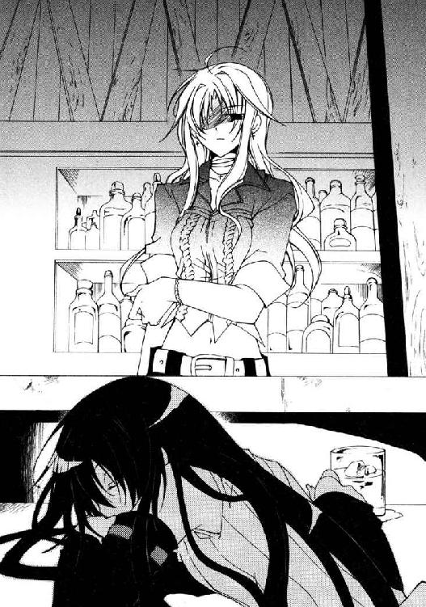
眠るアーティアの髪を軽く手で梳き、ぽつりと独りごちる。
「......多分それ、憧れなんかじゃない。もっと素敵で、もっと情熱的なもの──」
そして、自分には決して手に入れられないもの。
胸中に独白を流すのと、店の裏口へ続く扉が開いたのは、ほぼ同時だった。
「だから言ったろ師匠どの。決着は近い、ってな」
現れたのは、薄汚いコートを羽織った大男である。ぼさぼさの、縞状に染めた長髪をかきむしりながら、意識を失ったアーティアへ近寄っていく。
「いい手際だったな。あんたに頼んだ甲斐があったってもんだ」
「私は約束を果たしたわよ」
敵意を込めた視線で大男──ブランディン・オーツと言うらしい竜徒を睨みつけて、カロリアは声を低くした。
ぐったりとしたアーティアを担ぎ上げ、彼はねばつくような笑い声を上げる。
「俺が約束を果たさねぇとでも思うのかい？ 約束の金は、オフィスまで取りに来てくれや。額が額だ、運び役がそのままトンズラなんて間抜けたオチは御免だろ」
「払ってくれるならなんでも良いわよ。......近い内に取りに行く」
「そうかい」
飄々と首をすくめ、ブランディンは店を出て行った。
そちらをカロリアは見向きもせず、空のグラスを下げカウンターを拭き、ビール瓶をゴミ箱へ放り込む。それから残ったシードルのボトルを磨きにかかった。
やがて、十数分もたった頃だろうか。
店の自在戸が軋む音に我に返ったカロリアは、ようやく自分がずっと同じボトルを磨き続けていたことに気がついた。
「......開店にはまだ早いかな？ でもこんばんわ、カロリア」
「──そうね、もう少しだけど。でもいらっしゃい、バーン」
おどけた笑顔を浮かべる、丹念に手入れのされたブロンドの男──バーン・フラットランドに応対しながら、彼女はぴかぴかのボトルをカウンターの棚へ戻した。
彼はスツールに腰を下ろすと、コメディアンじみた仕草で腕を広げる。
「いや......参った、聞いてくれよ。計画、バレちゃったんだ。アーティアに」
「............、へぇ。ま、いつまでも隠し通せる秘密なんてないわよ」
ウイスキーを注ぐ手元が狂わなかったのは、なんの奇跡か。
特に悩んでいる風でも、憤っている風でもないバーンは──きっとそう装うことに精一杯だったのだろう。こちらの表情の曇りを指摘してはこなかった。
「彼女、まるで僕が悪いみたいに怒っちゃってさ。参っちゃうよね、ほんと」
「......そうね。あなたは悪くないわよ。辺境は、そういうところだもの」
バーンが掴もうとしたタンブラーを、カロリアは一瞬早く取り上げた。目を瞬かせる彼を無視して、半分ほど中身を飲み干してからカウンターに叩きつける。
黒ずんだカウンターに飛び散った琥珀色の飛沫を凝視して──決してバーンの顔を見ないようにして──カロリアは、押しつぶすように重く、小さな声で繰り返す。
「あなたは悪くないわ。アーティアもそう」
それは一体、どこへ行くべき言葉なのか。
「誰も、悪くなんかないのよ。......こんな世の中だもんね」
カロリア自身が行方を知らないまま、言葉はカウンターに零れ、沁み渡り──消えた。
第四章 裸の心 Burn the Liar!
叩くべきか、それとも叩かず逃げ出すべきか。
自分の背丈の三倍も高さのある大きな扉の前で、バーンは苦悩していた。
七日目──シム・リム・アビスパ・ジュニアとの取引の日であり、下手をすればそのまま自分の命日にもなりかねない日である。そして、そうなる可能性は非常に高い。
なにしろ約束の品《罪人竜の息吹》を、バーンは結局用意できなかったのだから。
（生き延びるには......な、なんとかもう一回、納期を延長して貰うしかないよなぁ......）
震える拳で叩いた扉は、意外なほど大きな音を立てた。
「──ああ、フラットランド君だね？ どうぞ、入ってくれ」
返事があり、バーンは十三階段を上る気持ちで扉を開ける。
馬鹿げた広さの執務室には、ボール人形のような壮年の男性──シム・ジュニアが、頑丈そうな机に座って山と積まれた書類の間からこちらに笑いかけていた。
「おはよう。いつもの報告にきてくれたんだろ？ まあかけたまえよ」
笑顔で椅子を勧めるシム・ジュニアに曖昧に頷き返し、バーンは言われるまま腰を下ろした。そして、恐る恐る口を開く。
「あの......ま、まずはお詫びを。昨日はその、報告が滞りまして......」
──アーティアが戻ってきていないと聞かされたのは、昨日の朝だ。
定例報告へ行く前にカロリアの部屋を訪れた際そう告げられ、半日ほど街を探し回ったのだが......分かったのは行方どころか、彼女の姿を見かけた者すら一人もいないと言うことだけだった。実際、無為な報告に割いている時間はなかったのである。
だがシム・ジュニアの言葉は、予想とはまるで違って穏やかなものだった。
「構わないよ。昨日はボクも忙しかったからねぇ。むしろ助かったくらいさ」
「はぁ......？ そ、そう言っていただけるならその、幸いですが......」
「それよりフラットランド君。今朝は、君に見て貰いたいものがあるんだよ」
拍子抜けするバーンに、シム・ジュニアは子供のように無邪気な目を向けてくる。
「構想自体はもう完成してたんだけどねぇ。新しい製法で作った、強化型のオーガンライト鉄鋼を使ってようやく完成にこぎ着けたんだよ」
得意げに鼻をふくらませ、シム・ジュニアは隣室へ視線を流す。バーンも何気なくそちらを向き──頭をぶん殴られたような衝撃に襲われ、言葉を失った。
振り向いた時、研究室の扉は開け放たれていた。
そこに立っていたのは、鋭利な筋肉に包まれた腕を組み、唇を歪めるブランディン・オーツ。その隣に、なにやら奇妙な装置が鎮座している。
見た目は大雑把な角柱状。薄青色に輝く表面にはケーブルやパイプが走り、無数の計器が埋め込まれていた。キャスター付きのカーゴに固定されてはいるが、本当に動かそうと思えばかなりの労力が必要になるだろう。
装置の一面には手錠や、細い鎖を編んだベルトが大量に据え付けられていた。そして、その拘束具の網に絡め取られるように繋がれているのは──
「アー......ティ、ア......？」
思わず腰を浮かし、バーンは愕然と呟いていた。
磔にされるように拘束されているアーティアはぐったりとうなだれ、動かない──装置に喰われているような有り様だ。
「こいつはね、フラットランド君。人間の未来を作るための装置なんだよ」
どこか遠くから、にやついた、嘲るような声が聞こえてくる。
「ボクら先駆者の天敵......そいつは竜徒に他ならない。獣じみた身体能力に、常識じゃ計り知れない竜工芸。なにより《息吹》だ。天災を呼ぶ竜の力──ボクらはいつだって、この理不尽な暴力に屈してきた」
演説じみた調子で言いながら、シム・ジュニアがひょいと椅子を飛び降りた。彼は滑稽なほど短い足で装置の──磔にされたアーティアの前まで歩いていく。
「だからボクは考えたのさ。連中の《息吹》を奪うことはできないかとね」
と、その言葉が合図だったのか、ブランディンが装置の表面に指を走らせる。
装置の中で、なにかが回転する甲高い音が響き出した。音は段々と高まり、脳に突き刺さるほど高まった頃、シム・ジュニアは大きく息を吸い──
「ぶふうううぅううぅううぅッ！」
バーンに向けて、吹雪を吐き出した。
とっさのことに飛び退くことも出来ない。瞬く間に凍てつく風が彼の眼前に迫り──次の瞬間、唐突に勢いを失い、弾けて霧散する。
舞い散る粉雪を吐息に震わせて、バーンは唾を飲んだ。
「み、ミスター、今《息吹》を......いや、その《息吹》は、まさか......」
嗜虐的な笑みを浮かべ、シム・ジュニアが装置の陰に隠していた手を掲げた。
現れたのはパイプ、いやケーブルだ。オーガンライト鉄鋼の薄青色で被覆されたケーブル。先端の端子を、シム・ジュニアが掴んでいる。
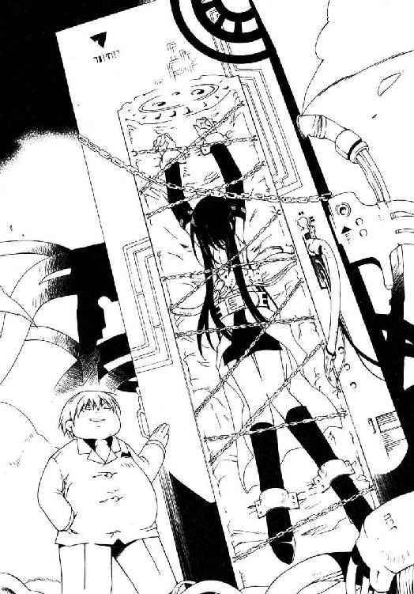
「《息吹》を奪い、操る。間違いなく歴史を変える発明だよ......かなり強引なやり方だから、材料は消耗品になっちゃうんだけどさ。この子もあと何回使えることやら」
消耗品──日曜大工の犬小屋の作り方でも説明するように軽く言って、シム・ジュニアは装置に繋がれたアーティアを引っぱたく。彼女は、微動だにしない。
太く短い指でバーンを指し、シム・ジュニアは酷薄に頬を歪めた。
「この子を手に入れた以上、《罪人竜の息吹》の在りかもすぐに分かるだろう──残念ながら君はクビだ、フラットランド君。本来、無能な部下には相応の制裁を与える主義なんだけど......ふはッ、ボクは今気分がいい。すごく、すごく気分がいいんだ」
「っ......、......」
「恩赦をあげよう。殺さないであげるから、さっさと失せな」
──その言葉を聞くより早く、バーンは転がるように部屋から逃げ出していた。
一足飛びに階段を駆け下り、ぽかんとする受付嬢を尻目にオフィスを飛び出す。
（くそ......くそっ、クソッ！ 最悪だ、最悪の展開になった!!）
アーティアが『アビスパス』の手に落ちる──なにより避けたかった事態だ。
こうなった以上、《罪人竜の息吹》のことが発覚するのは時間の問題だ。バーンはもちろん、彼女をかくまっていたカロリアにまで累が及ぶ可能性がある。
今、とるべき行動はただ一つ。単なるその場凌ぎ、意味のない悪手だとしても──
（逃げるしかない......今はとにかく、逃げるしかないんだ！）
差し当たっての正論。絶好の妥協点。消去法の最善策。
今まで何度もバーンを救った臆病者の嗅覚がそう告げている。疑う余地はない。が。
脳裏に蘇ってくるのは、鎖に繋がれたアーティアの姿──
（──関係ない！ 彼女はもう、関係ないんだッ!!）
そう、関係ない。関係ないのだ......が、それでは。
胸に燻る、この刺すような、締め付けるような痛みはいったいなんなのだろう？
◆□□◆
どれだけ気を失っていたのか──意識を取り戻した時、アーティアの視界は黒く濁っていた。いよいよ目玉が腐ったのかとも思ったが、少しして、それが周囲を飛び交う蜂のせいだと言うことが分かる。
「......お目覚めかい、師匠どの？」
羽音の向こうから聞こえてきた声に、顔を跳ね上げる。その動きに連動するように、毒々しい色の腹をした胡蜂の群れが幕を開けるように左右へ割れていった。
そして彼女の眼前に現れたのは、二人の男。
「ブランディン............っ」
「ふはッ、驚いたな。もう口をきけるほど回復したのかい？」
答えたのはブランディンではなく、その傍らの男──ジュニアとかなんとか言ったか。不健康と不摂生の結晶とでも言うべき体型と、落ち着いた声に幼稚な口調という特徴的な喋り方は勘違いのしようもない。
下卑た笑みを交わす二人に、アーティアは必死に喉を震わせた。
「......これで、死なせたのか」
「あン？」
「カーツマンも、イナクも......ジェドも、トゥーコも......こうして殺されたのか」
拘束された腕に力を入れ、鎖と手錠を軋ませる。途端、薄い青色だった表面がかすかに朱色に転じ......アーティアが加えた力を熱に変換し、消散させてしまう。
「その通りさ！ 感謝しなくちゃあいけないぜ。もしオーツ君が彼らを研究素材に提供してくれなかったら、キミも実験段階で使い潰されてたかも知れないんだから」
丸い腹を揺すり上げ、ジュニアが豆のように小さな目を細めた。
「さて......喋れるなら答えてもらおうか。キミ、《罪人竜の息吹》をどこに隠した？」
威嚇するように蜂を飛ばすジュニアの言葉に、彼女は小さく息を呑む。
（こいつ......まだ、彼が《息吹》を取り込んだことを知らない............？）
ならば、好機──ゆっくりと顔を俯かせ、アーティアは、小さく呻いた。
「......ん？ なんだって？」
聞き取れないよう囁いた言葉に顔をしかめて、ジュニアがこちらの顔を覗き込もうと無造作に近づいてくる。その瞬間、彼女は再び頭を跳ね上げた。
【教えるものか、人間めッ!!】
咆吼が《息吹》を呼び覚ます。吐き出された吹雪が油断しきった男たちを造作もなく凍てつかせ、飲み込み打ち倒す──
はずだった。
「......？ なんだい、それ。竜徒のおまじないかい？」
吹雪どころか、粉雪の一片さえもそこには顕れない。
彼らは変わらず平然と立っている。アーティアは愕然と目を見開いた。
（《息吹》が......使えない......、っ!?）
こんなことは──《息吹》が使えなくなるなどということは、生まれて初めてだった。
一体、なにが起こっている。......もしや母様の《息吹》はあまりに不甲斐ない自分を見限り、消えて無くなってしまったのか......？
【......テメェ、今《息吹》を使おうとしたのか？】
と。愉悦の笑みを浮かべたブランディンが、彼女の顎を掴んで持ち上げた。
【ブランディン、これは、貴方の仕業......？】
【知らねぇな。だが安心しな。テメェが使えねぇ《息吹》なら、俺が使ってやるよ】
余裕の笑みで肩をすくめ、ブランディンは装置の表面に指を走らせる。
途端、全身に目眩のするような衝撃が弾けた。悲鳴すら上げられない。
衝撃はすぐに終了する。咽せるように喉を鳴らすアーティアに、ブランディンは起動パネルに手をかけたまま、再び竜の言葉で訊いてくる。
【もういっぺん訊くぜ、アーティア......《罪人竜の息吹》はどこにある？】
黙っていると、再び装置が起動する。身体を細切れにされるような衝撃と苦痛は、体力よりも精神を摩耗させた。あとどれだけ、自分は正気を保っていられるだろう......？
【ひょっとして、あの色男にでも貢いじまったかぁ？】
【っ......彼は関係ない......！】
【だろうな。そこまで人間を信用するテメェじゃねぇ】
鼻を鳴らし、ブランディンがパネルを操作。衝撃──正気が確実に狂気へ近づく。
【吐いちまえよ。そうすりゃ互いに面倒がねぇ、そうだろう？】
【......《罪人竜の息吹》には......もう、誰も、触れさせない......！】
【そうかい。......じゃ、狂っちまえ】
無感動に言い捨てて、ブランディンが起動パネルに指を触れた。その瞬間。
「──やめろ、やめんか貴様ァッ！」
突然、岩も砕けそうな大声が響き渡った。
視線だけで振り向くと、部屋へ飛び込んできた何者かが足音高く詰め寄ってくる。窮屈そうな灰色の服をまとうその人物には、見覚えがあった。
ブロック・キャリバー......人間にしておくには惜しいほどの怪力とセンスを持つ戦士。
「アビスパ卿！ これはいったいどういうことかッ!?」
耳が痛いほどの声で怒鳴る彼に、ジュニアはいかにもしらけた顔で鼻を鳴らす。
「《罪人竜の息吹》の在りかを吐かせようとしているんだ。邪魔しないでくれ」
「手段が強引です！ 竜徒とはいえ......相手は、まだ小娘ですぞッ！」
「法的には問題ないでしょうが、世論が黙っちゃいませんよ。貴方の評判は地に堕ちる」
激昂するブロックと対照的に冷静な態度で言ったのは、彼の背後についてきていた同じ灰色服の男だ。不快そうに眉をひそめるジュニアに、男は更に続ける。
「もちろん俺はリークしたりしませんがね。貴方の敵に回る度胸なんてない。......ただ、団長は分かりませんよ。バカですから、この人」
「──脅しているつもりかい。このボクを」
ジュニアが無感動な声で呟くと、二人の周囲を十数匹の蜂が取り巻き始めた。気味悪げに蜂の群れを眺めながら、男が軽く肩をすくめる。
「まさか。......お探しの《息吹》は、恐らくバーン・フラットランドが持っています」
「！ おい、スクィージ君!?」
「もうしょうがないでしょ？ 黙っててくださいよ、団長のくせに」
渋い顔でブロックへ答え、スクィージは一瞬だけアーティアに視線を向けた。
『悪いね』──そう語りかけるかのように。
「中央本部に調査させましたが、彼は生まれも育ちもただの人間です。この少女以外の竜徒、あるいは竜そのものと関わった経験は皆無。しかし彼は火炎の《息吹》を吹く......推測ですが、《罪人竜の息吹》とやらに関わっている可能性は極めて高い」
「フラットランド君が《息吹》を？......どうして今まで報告しなかったんだい」
「調査報告を受け取ったのが今朝方なんですよ。それに──痛っ」
「我々の相手は竜徒のみだからです！」
飄々と語るスクィージを突き飛ばしたブロックの大声が、部屋の空気を震わせる。
苛立たしげに舌打ちして、ジュニアはぱちんと指を鳴らした。その音に惹かれ集うように、ブロックたちを取り巻いていた蜂が彼の周囲へ戻ってくる。
「......命令だ。今すぐ、あの詐欺師をここに連れてきたまえ」
「〈抗竜党必死開拓団〉、承知しました。ただしこっちも条件があります」
答えたのは、気のない風に片眉を持ち上げるスクィージ。
「その娘を尋問しないこと。それと──もうつき合ってられません。これ以上は護衛団の仕事ではない。この任務を最後に我々は中央へ戻ります。その承認を」
「ふはッ、いいとも。代わりの護衛団などいくらでもいる」
「感謝しますよ、アビスパ卿」
右拳を心臓の上に、左手を背後に当てる〈抗竜党必死開拓団〉式の敬礼をして、スクィージが皮肉に笑む。ブロックは敬礼もせず、大股に執務室を出ていった。
二人を見送ってから、ブランディンがふと、嬲るような笑みでこちらを向く。
【『彼は関係ない』......あんた、確かそう言わなかったか？ なあ】
彼女は答えない──ほどけていく意識の中で、たった一つのことだけを考える。
里の子供たちでも、母親ノルガンディアでもない。なぜかたった七日前に出会ったばかりの、軽佻浮薄な法螺吹き男の顔を最後に思い浮かべて。
アーティアは、晴れるかも分からない闇の中へと意識を沈めた。
◆□□◆
「カロリア、起きてるかい!?」
バーンがカロリアの家へ飛び込んだのは、太陽が南天高くまで昇り詰めた頃だった。両手に、宿から引き払ってきた荷物を詰めた鞄を数個ほど提げている。
玄関先にその荷物を放り出し、家中を走り回る。まずは二階のカロリアの部屋へ駆け込み、そこに姿がないことを確認すると階下に降りてキッチンや居間を覗く。が、カロリアの姿は見あたらない。呼びかけにも答えはなかった。
「出かけてるのかな......くそっ!!」
タイミングが悪い。今こうしている間にも、シム・ジュニアたちはアーティアを尋問していることだろう。暴力を振るうかも知れない。大怪我を負わされるかも知れない。それに......彼女も女性だ、そういう手段に訴えられる可能性だってある。まだ少女とはいえ見目麗しい娘なのだ。そんなことになっていたら取り返しがつかない────と。
ふと気付いて、バーンは髪を掻きむしっていた手を止めた。
（............？ なんで僕、アーティアを心配してるんだ？）
心配だったのは彼女ではなく、あくまで彼女が《息吹》の在りかを白状することで自分たちが狙われることだったはずだ。いつの間に矛先がすり替わっていたのか。
「......どうしたよ、僕......こんなの全然、らしくないじゃないか」
なぜ、こんなにもあの子を気にかける？
簡単だ。アーティアに憧れていたから。これまで出会った女性の中で、いちばん強くて真っ直ぐで、純粋な娘だ。だから憧れた。ただ、それだけのはずだ──
（──いや。違う......よな）
そこに何かを求めるように、胸を押さえる。
先ほどから、いや、もっとずっと前から胸を騒がせているこの感情は、ただの憧憬ではない。もっと激しく、もっと切なく、もっと情熱的で......もっと、大切なもの。
それを表す言葉を知らないわけではない。ただ、戸惑っているのだ──それは、荒野で出会ったどんな女性にも抱いたことのない想いだから。
顔をしかめて頭を振り、バーンはまとわりつく疑問を強引に振り払った。
ともあれ今は、カロリアを見つけなくてはならない。
（探してないのはもう......ここくらいか）
彼は廊下の突き当たり、アーティアの部屋の扉を押し開けた。
物置部屋だったはずの部屋は、綺麗に片付けられている。ベッドと鏡台はもとからあったのだろうが、その他にはほとんど物がないのがあの少女らしい。
ここにもカロリアの姿はない。溜め息をついて扉を閉じようとした時──視界の隅になにか鮮烈な色を認めて、バーンはノブを引く手を止めた。
鏡の曇った鏡台に、丁寧に折り畳まれた茜色の布が置いてある。
アーティアの襟巻だ。竜徒の誇りとまで言い張り、常に身につけていた代物。
「でも、あの日はつけてなかったんだよな......」
呟きながら、半ば無意識にその襟巻を手にとる。
薄手の布地は、存外にきめ細やかで柔らかい。夕日の光を直に織り込んだような力強い茜色が、単純に装身具としても美しかった。と。
（──ん？）
布の中に、なにか硬質の感触があることに気付く。折り重なる茜色を一枚ずつどけていくと、その一番下にくるまれていたものは、見覚えのある銀のチェーンだった。
洒落てはいるがベーシックなデザイン。以前、バーンが買ってやったものだ。竜徒の頭など引っぱたいたせいか、留め金がひしゃげて潰れている。一応直そうとはしたらしく、いくつもの細かい傷がついていた──歯形に見えるが、さて......──。
そういえばあれ以来、このチェーンをつけているのを見たことがない。壊れていたなら納得がいくが、なぜそれを、大事な襟巻に包んでおく？
「......あ」
──茜は、特別な色。
彼女の言葉が脳裏に蘇る。それだけではない。彼女は続けて、こうも言ったはずだ。
──だから己の信頼と敬愛を込め、大切なものを茜色で包むのだ。
（......そんな............冗談、だろ？）
壊れたチェーンを、茜の襟巻と一緒に強く握り込む......強く、強く握り込む。
焦燥は消えない。状況は好転していない。だが胸の中に、一つ火が灯る。
少なくとも、あの子は自分を──このろくでなしの大嘘つきを、信頼してくれたのだ。
「さあ......どうする、僕。こいつは決断のしどころだぞ」
曇って歪んだ鏡台に映る自分を見つめて、バーンは喉を鳴らす。
「僕は信頼してくれる相手を裏切れないなんて、安いことを言うつもりはない」
信頼するのは相手の勝手。そこにつけこむのが彼の商売だ。それはまったく疑いない。
ならば、ここに理由はない。
「大体、今は自分の身が危ないんだ。僕はこの世のなにより、僕の命が惜しい」
これもまた真実。鏡像の自分と頷き合って、バーンは更に口を開いた。
「そりゃ彼女は気の毒だけど、僕がなにかしてやる義務はない。そうだろう？」
異論を挟む余地もない。
まったく上出来。ならば今すぐ尻に帆をかけて逃げ出すのが正しい開拓辺境のスタイルというものだ。鏡の中の詐欺師も、満面の笑顔で深呼吸しているではないか。
「オーケイ、〝嘘つきバーン〟。悲しいけど、女の子との別れなんていつものことじゃないか。......アーティアのことだって、綺麗さっぱり忘れられるさ」
そこに、理由があった。
（......だからさぁ、もう......こんなの、僕のスタイルじゃないんだぜ？）
泣きそうな顔で襟巻とチェーンを上着のポケットに押し込み──バーンは、《息吹》の炎で消し炭にまで焼き尽くされた鏡台の前から走り出す。
自分のスタイルではないけれど。
（僕は、アーティアにっ............！）
放り出しておいた荷物を跳び越え、転げるように外へ飛び出した、その瞬間。
ぼぐ、とくぐもった音をたて、バーンの身体は垂直に浮き上がる──腹を殴り上げられたのだと気付いたのは、地面へ崩れ落ちてからだった。
嘔吐もできず、内臓が痙攣する痛みに耐えながら、バーンは必死に顔を上げる。
そこにあったのは、岩壁のような胸を張る大男と、後ろに控える幾人もの巨漢たち。
「......総員、手出しは無用。大人しく縛につけ、小僧」
〈抗竜党必死開拓団〉団長ブロック・キャリバーは、厳然として宣告した。
「お待たせしました。額面を確認の上、こちらにサインを」
形だけの笑顔と共に差し出された書類にぎこちなく署名し、分厚く膨れた封筒を受け取る。中身は、高額の州国金券。銀行へ持ち込めば相応の現金に換えてくれる。
封筒をジャケットに仕舞い、小綺麗な部屋を後にする。『アビスパス』のオフィスともなると、自分のような庶民が通される部屋にまで金をかけているものだ。
口元に微笑が浮かぶ。この廊下に顔を映すようなものはないが、もし鏡でもあれば、そこには墓場で拾ってきたような笑顔が映ったに違いない。
丸一日以上寝ていなかった。それでも眠気を感じないのは......この胸の痛みのせいだ。
ここまで来るためにいろいろな物を失った。
物心ついたばかりの頃、両親を失った。
成功を欲して辺境に踏み出した時、安息を失った。
理想や正義を失ったのは、そう最近の話でもなかったか。
そして今また、二人の友人を失った。
得たものは大金だ。真っ当な手段では十年かけても稼げない、誰でもない誰かではない自分を確立するに十分な金。間違いなく万人に誇れる大成功だ。が......
胸が軋む。この痛みも得たものの一つだ。おそらく生涯消えない烙印。
頭を振り、歩き出す。
眠れぬ夜は続くだろう。この選択を後悔する日々も終わるまい。
だが、これが選んだ道ならば──歩いていこう。俯いてもいい。せめて真っ直ぐに。
たとえ薔薇色だったはずの夢が、苦く冷たい鈍色に変わってしまったとしても。
通りに集まった野次馬たちから、もう幾度目かも分からない嘆声がこぼれた。
同時に、腹に強烈な膝蹴りを打ち込まれたバーンが、声もなく地面へ倒れ込む。
「──スクィージ君。いま、何時になるかね？」
のたうち回るバーンを淡々と見下ろして、ブロックは振り返らずに呟いた。問われたスクィージは、覇気のない様子でポケットから懐中時計を取り出す。
「......じきに四時になりますかね」
「聞こえたか、小僧」
返答のつもりなのか、バーンがふらふらと立ち上がる。
何度殴られ、蹴られ、投げ飛ばされたのか──怪我だらけだった。怪我のない箇所が見あたらない。筋を捻ったのか、左足の調子もおかしかった。
なにより、顔の傷が酷い。
大事な商売道具は青痣だらけで、無惨に膨れ上がっている。左目が腫れて視界を塞いでいるせいか、上手く平衡が取れなかった。
その鼻面に、ブロックが無造作に拳骨を叩き込む。鼻血の弧を描いてひっくり返るバーンを見下ろし、彼は厳かに口を開いた。
「二時間、殴られ続けているのだ。勝ち目がないと分からんわけではあるまい？」
返事はしない。口を切ったからではなく、まるきり相手の言うとおりだったから。
ブロックは沈痛に息をつき──腰に提げた黒樫の鞘から大鉈を抜き放った。衝撃を熱へと換えるオーガンライト鉄鋼の鉈に、拳を打ち付ける。金属の哭き声が響き、人間離れした膂力を吸収した刀身がほのかな紅色に変色した。
「まだ抵抗するのなら、私も禁じ手・火炎大迫力斬りの封印を解かねばなら──」
「............」
「──小僧......ッ」
赤熱する刃越しに、ブロックは尖った眼光を投げつけた。
バーンが立ち上がる。
脚は震え、目もどこか焦点が合っていないが......確かに、彼は立ち上がっていた。
ガンッ、と轟音が響く。ブロックが歯を軋らせ、石畳に大鉈を叩きつけていた。
「解せんぞ小僧！ なぜ立ち上がる!? どうして向かってくる！ 貴様ごとき木っ端が、よもや我ら〈抗竜党必死開拓団〉を下せるとでも思うてか!!」
「......んなワケ、ないじゃん......。辛いし、痛ぇし......マジ、おっかないし......」
正直に答え、バーンは少しだけ足を前へ滑らせた。突進の準備だ。
「でも......しょうがないじゃんか......僕のスタイルじゃ、ないけど......それでも」
痛い。怖い。冗談じゃない。正直、勘弁して欲しい。
（それでも......）
震えた足は、じりじり進む。
怯えた心は、じりじり焦がれる。
「僕はあの子に......竜徒の、アーティアに......」
一夜に分かち合う愛ではない。
泡沫の夢と消えるロマンスではない。
激しく切なく情熱的な、それは心に掲げる────最強の炎！
「生まれて、初めてッ............恋をしたんだあああああぁぁぁぁッ!!」
大気を揺るがす絶叫に、誰もが息を呑んだ。いや息をすることを忘れた。
群衆もブロックも〈抗竜党必死開拓団〉も、その瞬間、確実に時間は止まっていた。
その一瞬に、バーンは走り出す。ブロックの脇をすり抜け、〈抗竜党必死開拓団〉の包囲を突っ切り、脇目もふらずその場を駆け抜けた。
「ッしまった!? 逃がすか、団長！ 指示を！」
「............ふむ、指示？ そうだな──スクィージ君、いま何時かね」
狼狽えるスクィージに、ブロックは振り返りすらしないまま、落ち着いた声で訊いた。その悠長な態度に顔をしかめ、スクィージは再び懐中時計を取り出す。
「......四時、ちょうどですよ。それがなにか？」
「終業時刻である。総員撤収！」
「はぁ!?」
ぬけぬけと宣言するブロックに、スクィージがあんぐりと口を開けた。
「ちょ、団長ッ......本気ですか!? 気にくわないとはいえ、仕事は仕事でしょう！」
「スクィージ君。我々の仕事はあの小僧をアビスパ卿の前に連れて行くことだ」
非難がましく叫ぶ部下に、ブロックはとぼけた顔で首をすくめた。
「ならば仕事は完了である」
「......、言いたいことは分かりますがね。でも、奴が途中で心変わりを起こして逃げ出さないと言い切れますか？ それに......持って行かれたじゃないですか！」
「あれはもう私の物だ。誰に譲ろうが、それもまた私の自由」
こちらを指さして怒鳴るスクィージに、彼は泰然と肩を揺する。
確かにあの小僧は軟弱だが、絶対に──少なくとも今だけは絶対に、逃げ出すことはない。賭けても良い。餞別は......多少、高価に過ぎたかも知れないが。
「でも......みすみす殺されに行こうってんですよ!? せめて止めてやるべきだった！」
「止める？ 馬鹿を言うなスクィージ君」
なお食い下がる部下に、ブロックは顔も映りそうな真っ白い歯を剥き、笑う。
「恋する若造を止める法など、ありはせんのだよ。この開拓辺境にはな」
ホプティ大聖道の、荷馬車も迂闊に動けないような人混みが二つに割れていく。
そこを走るたった一人の男の前に、人々は残らず道を空けていた。
（僕は阿呆だ......とんでもない与太者だった！）
バーンの足取りは決して速くない。ふらつき、時折つまずいてすらいる。
だが、強い──その姿を嘲笑うことも、行く手を遮ることも許さない壮烈な決意をまとったバーンに誰もが目を見張り、その前から退いていく。
（でも気がついた！ 遅すぎたかも知れないけど、それでも気がつけた！）
虚言で自分を飾るのでも、紛い事で相手を騙すのでもない。
ただ知って欲しい。あの子に、この想いが決して嘘ではないということを。
これまで彼を守ってきた唯一の武器、嘘──初めてその武器を捨てて丸腰で立つ心は、ひどく頼りない。
だからこそ、そこに灯した灼熱は。
掲げた想いの篝火は。
〝嘘つきバーン〟がようやく手にした、正真正銘の、裸の心だ。
（だから絶対この恋は......ロマンスのままじゃ終わらせないッ!!）
『アビスパス』のオフィスが見えてくる。破れたシャツの上から腹を押さえ、バーンは数秒後には辿り着いてしまうオフィスの扉を睨みつける。と。
彼が辿り着くより先に、重厚な樫材の扉はゆっくりと開き始めた。思わず直前で足を止め、よろよろと身構える彼の前に現れたのは────蜂蜜色の髪の悪夢。
「かッ......カロ、リ............ア？」
片方しか目が開いていなくても、見間違えるはずはない。オフィスから出てきた人物はサルーン『ストレイ・ユースレス』のトップダンサー、カロリア・アルバだった。
バーンに気づいた彼女は、はっと息を詰めて身じろぐ。
どうしてこんな所にいるのか、バーンは訊ねない。絶望と恐怖、諦観に凍り付いた顔と──懐からのぞく、州国金券で膨れた封筒を見れば察しはつく。ついてしまう。
気付けば、彼はカロリアの襟首を掴み上げていた。
「──売ったのか！ 君が......アーティアをッ!!」
「......そうよ。言ったでしょ？ 一生、辺境で過ごすなんてごめんだもの」
疲れた顔で、カロリアは微笑んだ。見ているこちらが辛くなる、傷だらけの微笑。
「『アビスパス』がいくら出したと思う......？ 今まで辺境で苦労してたのが馬鹿らしくなるくらいの大金よ。中央都市で......仕事だって、できる」
「そのために、あの子を......」
「......そうよ！ 十年も耐えてようやく巡ってきたチャンスよ、逃せるわけない！ 辺境で過ごす十年が短くなんかないって......あなたならわかるでしょう!?」
ひび割れた絶叫は、咎人の告解にも似ていた。
瞳を濡らしたカロリアが、逆にこちらの胸ぐらに掴みかかってくる。
「あなたもしたことよ！ あの子を騙してッ......そうでしょう!? 私だって裏切りたくなんかなかったわよ！ それでも、私は──私を、誰でもない誰かのまま終わらせたくないのよ......しょうがないじゃない......しょうがないじゃないッ............!!」
まくし立てた言葉の最後は、声がかすれて聞き取れなかった。
揺れる眼でこちらを睨みつける彼女から、バーンはゆっくり手を離して、
「......そう、だね。僕は君を責められない」
へらりと、口元を緩めた。
「自分のために全力で生きてる奴を責めることなんて誰にもできやしないんだ。......だから僕らにゲンコツをくれてやるのは、僕らしかいないんだ。そうだろ？」
「そんなの......きれいごとよ」
「きれいごとで切り抜けなくちゃカッコつかない時だってある」
即座に答え、静かに肩を押す。抵抗はなく、カロリアはふらりと道の脇へ下がった。
バーンが彼女の前を通り過ぎようとした時──震える声が彼の足を止めた。
「............逃げようよ」
思わずバーンが振り向くより早く、カロリアは後を続ける。
「逃げたっていいじゃない......なんで、逃げないの!? だって私たち、間違ったことなんてしてない！ ねえ、あなたも一緒に行きましょう。お金なら、お金ならいっぱい──」
「カロリア......っ!!」
すがるように言いつのる彼女へ、バーンは背中越しに大声を叩きつけた。大した声量は出なかったが、カロリアが身をすくませたのが気配で知れる。
背を向けたまま、バーンは握った拳を震わせた。
「......君も行こう。あの子を騙した落とし前、つけなきゃならないだろ？」
「......無理よ......私、は......ッ............！」
小さく、か細く震える声がこぼれ、砂を擦るような音がした。恐ろしい悪夢を見た子供のように、しゃくり上げるような嗚咽が耳朶を打つ。
それはともすれば、誰かが泣き崩れたように聞こえたかも知れない。
だから決して振り返らずに。
溶けたように重い足を持ち上げて、バーンは、目の前の扉を蹴り開けた。
以来、開拓街アビスパスで、カロリア・アルバの姿を見た者はいない。
◆□□◆
「ふはッ──自分でのこのこ戻ってくるとは、まったく予想外だったねぇ」
執務室の中は、今朝と何かが大きく変わったわけでもない。
机の向こうで丸い顔をにやつかせるシム・リム・アビスパ・ジュニアも、黒い風のように飛び回る胡蜂もそのままだが......バーンの視線は、ただ一カ所に集中していた。
角柱状の機械に拘束され、力なくうなだれる少女、アーティア。
シム・ジュニアが椅子を飛び降り、彼女を繋いだ装置の前まで歩いていく。
「まず要求しよう。《罪人竜の息吹》、大人しく渡せば苦しめずに殺してあげるよ？」
鋭く視線を向けてくるシム・ジュニアへ、バーンはゆっくり近づいていく。そして装置から伸びる端子ケーブルを握る相手に、緊張に乾いた声で問いかけた。
「あッ......アンタ、こんな物騒なモン、いったいどうしようっていうんだよ......？」
「ふはッ。愚問って言葉を知らないと見えるねぇ」
鼻を鳴らし、シム・ジュニアは傍らの装置を腕で示した。
「ボクは先駆者だぜ。道を拓き、街を打ち立て、財を築く......そのためなら、どんな障害だってねじ伏せるさ。氾濫する川には堤防を組む。乾いた土地には水を引く。竜徒が邪魔をするなら、奴らの《息吹》を逆に利用してやるんだよ」
「......《罪人竜の息吹》を、武器にしようってこと？」
「ふはッ、その通り。古い記録にのみ残る罪人竜ニグログルフュの《息吹》......利用価値は計り知れない。ボクの金庫をどれほど満たしてくれるのか、想像もつかないよォ」
小さな目にぎらついた光が宿る。底なしの野心と欲望に煮えたぎる、しかしそれだけに揺るぎない、禍々しい鬼火。州国筆頭の先駆者──シム・リム・アビスパ・ジュニア。どんな害獣よりも恐ろしい、辺境に巣くう怪物だ。
視線に射られ、足がすくむ。バーンはとっさに思い浮かんだことを口走っていた。
「そッ──その計画は片手落ちだ、シム・リム・アビスパ！」
身振りを交え、ビビった足がなけなしの根性を取り戻すまでの時間を稼ぐ。
「確かに《息吹》はおっかないけど、それだけじゃない！ 竜工芸の武器だって危険だし、だいたい修行とか言って手足縛って崖から飛び降りるような連中だぜ!? ガチンコやったって勝てるもんか！ 本当シャレになんないんだってマジで!!」
「......なんでそこまで真に迫ってるんだかよく分かんないけど、ふはッ──」
妙に実感のこもった物言いをするバーンに半眼を造って、シム・ジュニアは癖のある笑い声を上げた。嘲りと、それ以上に明白な自信に満ちた哄笑。
「そんなことは問題でもなんでもない。すごく単純なことなんだぜ？ つまり竜工芸の武器を防いで、竜徒の身体能力に太刀打ちでき、かつ《息吹》を自在に操る......そんなタフでイカした騎兵隊がいれば、問題はいっぺんに解決するってわけさ」
まぎれもない確信を込めた目で、シム・ジュニアが隣室へ続く扉を見やる。
その扉の向こうから、なにか、音が聞こえてきていた。
連想したのは列車の機関部だ。鉄が激しく噛み合う独特の旋律。エンジンがタービンを回して動力を生み、部品へ伝導する硬質な騒音──巨大な機械の駆動音である。
ぞくりと、背筋を悪寒が走った。自分の嗅覚を信じ、とっさに後ろへ飛び退く。
瞬間、扉が壁ごと爆裂した。
爆音と石材の破片を撒き散らし、巨影が眼前に滑り込んでくる。唖然として口を開け、バーンは隣室から壁を突き破ってくるという無茶をしでかした影を見上げた。
「ふはッ......どうだい、この雄姿！ これぞ竜を狩る騎兵、名付けて──準人型汎用作業機兵『レッド・ホット・アビスパ88』だ!!」
「うわあああもうどっからなにをどう指摘すりゃいいんだコレええええっ!?」
残った体力を使い切る心境で絶叫しながら、バーンは両手で頭を抱えた。
物体の身の丈は、バーンの二倍にもなるだろうか。
準人型云々の名に偽りなく、人間を模した機械である。ただ模倣の仕方はかなり大雑把で、見た目はまるでブリキの玩具だ。鋼の樽を縦に潰したような胴体から、不釣り合いにスマートな四肢が伸びている。左腕は肘から先が大砲の砲身になっており、文字通りの機兵、敵を倒すための機械の兵士であることを主張していた。
そして胴体上部。据え付けられたシートに座り、操縦桿を握る者がいる。
「──よう、フラットランド。男前が上がったみてぇじゃねぇか、あ？」
「ぶっ......ぶ、ブランディン!?」
機兵の上から嫌らしい笑みを向けてくる人物──ブランディン・オーツを、バーンは無事な右目だけで見返した。機兵の足の間からちょこちょこと、アーティアを繋いだ装置から伸びる端子ケーブルを引きずりシム・ジュニアが歩いてくる。
「全面強化オーガンライト鉄鋼仕様の上、改良型オーガンライト・エンジンを搭載したモンスターマシンさ。加えて──オーツ君!!」
得意げに胸を張りながら、彼は頭上へ端子ケーブルを放り投げた。それをブランディンが胴体上部のソケットに接続する。ますます有線操縦の玩具の様相を呈してきたが......なにやら、背筋を寒気が襲う。直感に従い、バーンは真横へ飛び退いた。
瞬間──砲口から吹き出した吹雪が大気を引き裂き、床を、壁を凍てつかせていく。
（アーティアの《息吹》......！）
転がるバーンを見下ろし、ブランディンが口角を裂いた。
「こうして、《息吹》も操れるって寸法よ」
「フラットランド君。君はこの雄姿の最初の目撃者にして、最初の戦果になるのだ」
平然と告げ、シム・ジュニアは装置のそばへ戻っていく。高みの見物を決め込んだのか──巻き込まれない位置に下がったということなのか。
バーンは立ち上がることも忘れ、必死に声を振り絞った。
「ま、待て！ 僕を殺せば《罪人竜の息吹》の在りかは分からなくなるぜ!?」
「心配いらねぇ。凍って砕けたお前の死体から勝手に探すだけだ──!!」
──その直後に起こった事態を、バーンは正確には理解できなかった。
掘削用の杭打機でも打ち込まれたような衝撃と、前方に吹っ飛んでいく周囲の景色から、機兵に腹を殴り飛ばされたと推測できただけである。......呑気にそんな推測をしていたせいで、後頭部から床に着地して痛い目を見たのだが。
苦悶に呻く彼を睥睨し、ブランディンは嘲笑を浮かべる。
「調子クレた報いだな。お好みのブッ殺し加減はあるかい、スポンサー？」
「嬲り殺せ。だが手加減するな。手足を砕き内臓を潰し、両眼を焼いて舌を抜いてから、鉄噛蟻の巣穴に放り込む。骨から表皮へ喰い破られていく感触を味わわせてやりたい」
「ハッ！ 悪趣味なこった。が......悪くねぇな、そのプランは」
双眸を細め、ブランディンがにたりと笑う。
薙ぎ払われた機兵の腕に脇腹を直撃され、バーンは再び宙を舞った。数メートルも殴り飛ばされ、叩きつけられた床には──巨大な、黒い影が落ちている。
「──そういえば、お前にちゃんと名乗ったことはなかったなぁ？」
頭上をそんな言葉が通過していった。もはや見上げることすらバカバカしい......
がしゃん、と耳障りな音を響かせて、一息にこちらを跳び越えていった機兵の上からブランディンが身を乗り出す。そして大きく息を吸い込み、
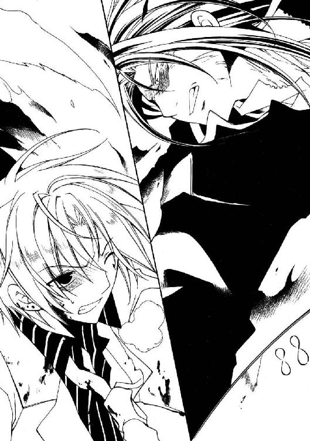
「身に刻み、呪い成せ！ 万雷呑み干す......俺の名は、ブランディン・オーツ!!」
星中のあらゆる生命に届けとばかり張り上げる、野蛮で傲慢な名乗り。
ブランディンの口から迸った光が宙を灼く稲妻と化し、バーンに降り注いだ。
「っぎゃああぁぁああぁあ────ッ!?」
身体を貫いていく雷光と脳を破裂させるような雷鳴に、悲鳴を上げる。
《息吹》の侵食は、わずか一秒にも満たない。それでも彼の全身の皮膚は裂け、焼かれ、嫌な臭いのする煙を立ちのぼらせていた。
「まだ、くたばるんじゃねぇぞっ!!」
そう言って振り抜かれた機兵の腕は、微塵も容赦なくバーンを壁まで吹き飛ばす。
背骨を庇い座り直したところで、近寄ってきた機兵がもう一度、腹に腕を突き立てる。轟音を上げ、彼は硬いマグディバ石材に数センチほど埋め込まれた。
「いやはや......テメェ、いったいなにしに戻ってきたんだ？」
歯車の軋む音がして、腹に刺さった機兵の右腕がさらに強く押し込まれる。
「ナイト気取りでアーティアを助けに来たかぁ？ あんな情の凍ったクソガキのために死ににくるなんざ──ハッ！ 茶番以外のなんでもねぇぞ!!」
言い放つと同時、機兵がまたもバーンを殴りつける。背後の壁を砕いて更に深く埋まり込んだバーンは、そこでようやく呼吸することを許された。
「......ッそれ、嘘だぜ......」
激しく咳き込みながら、息を吸い込む合間に言葉を挟む。
「あんだけよく怒って、よく騙されて......よく笑う子の心が、凍ってるって？ へへ......んな、へたくそな嘘じゃ......誰も騙せないよ」
「はッ、そうかよ！ なら勘違いしたまま逝ッちまいなッ！」
吐き捨てると同時、機兵の腕がバーンを横殴りにする。くの字に曲がって床を滑る彼を追い、左腕の砲身を突きつけて──ブランディンは、ふと眉根を寄せた。
落ちていた壁の破片にぶつけたのか、立ち上がるバーンは頭を押さえている......岩石も砕く作業アームで殴られた腹ではなく、ぶつけただけの頭を。
そう言えば、先ほどからまとわりついている肉の焦げる臭いもおかしい。雷光が彼を焼いたのは一瞬だけ。しかし、鼻をつく臭いは薄れる気配もない──と、
「......はは。む、無駄な足掻きでも......やってみるもんだ」
弱々しく、だが確かに、バーンが笑う。
直後、閃光が閃き──半ばから断裂した機兵の腕が、重い音を立てて床に落ちた。
「!? な？ あッ......、......えっ!?」
大口を開けて間抜けた声を出すシム・ジュニアへ、バーンはそれを掲げて見せた。
重そうに握りしめている、白熱する大鉈を。
「強化オーガンライトの戦闘鉈......！ クソが、ブロック・キャリバーかッ！」
「へへ......ギってきた。さんざんぶん殴られて衝撃を溜めたこいつなら、その頑丈なロボットだって切り裂ける。......死ぬほど痛かったけどさ......」
激昂するブランディンに、バーンは上衣をまくり上げる。灼けた大鉈を隠し続けていたせいで、腹部は無惨に焼けただれていた。
火傷の跡は消えないだろうが──この竜徒の虚を衝けた代償ならば、悪くはない。
「......ッ、大した......根性じゃねぇか！ 正直に言おう、テメェを侮ってた！」
ぶるぶると拳を震わせて、ブランディンは痙攣するように唇をつり上げた。
「だがッ、だがな！ まさか、そのだんびら一本で状況がひっくり返ったと思っちゃいねえだろうな!? この俺の〝力〟に敵うとでも!!」
無論バーンとて、そこまで思い上がれはしない。どれだけ強力な武器があっても、それを振るうのは自他とも認める腰抜け詐欺師なのだ。だから──
「──敵うさ！ こッ......この僕が、ケチョンケチョンにやっつけて見せるっ!!」
自分自身も欺けない大嘘が、《罪人竜の息吹》を暴走させる。
紅蓮の炎が噴き上がり、巨大な機兵の上体を丸ごと包み込んだ。ブランディンの姿が火影に消えると同時に、バーンは機兵の足の下を走り抜ける。
狙いは最初から機兵ではない。目標はただ一つ、アーティアの繋がれた装置！
「ッひ!? お、オーツ君！ こっちだッ！」
甲走ったシム・ジュニアの悲鳴に応えるように、胡蜂の群れがバーンの行く手を壁のように遮る。刃物を振り回してどうにかなる数ではない。
バーンは強く目を閉じると──羽音を上げる黒い波へ、真っ直ぐに突っ込んでいった。おびただしい数の毒蜂が食らいつくようにバーンへ群がっていく。
「ふ、ふはッ──じ、実に驚かせてくれたなフラットランド君！ だが、ここまでだ!! ボクを、このボクをコケにするからこういう目に遭、う............ッ!?」
一瞬の焦りと安堵を含んだシム・ジュニアの言葉が、途切れて跳ね上がる。
黒雲のような蜂の群れの一部が、不自然に膨らんでいた。
その膨らみを裂いて飛び出してくる──白熱する刃を握りしめた、バーン。
「どいて......くれええええええええッ！」
「ふッ──ふはあぁあぁあアァァアッ!?」
シム・ジュニアが転げるように装置の前を離れたのと、ほぼ同時。バーンが重量に任せて振り下ろした大鉈が、装置の上部に叩き込まれた。
耳障りな音が響き、外板がひしゃげる。次々と機械の部品が爆ぜ、内部から煙が上がり始めた。装置の表面に青白い電光が這い回り、立て続けに小さな爆発が起こる。飛散した螺子がバーンの頬を切り裂いた。その爆発も長くは続かず──
怪物が力尽きるように、アーティアを拘束していた手錠と鎖が弾け飛ぶ。バーンは倒れ込んでくる彼女を抱き止めて......体力が追いつかず、一緒に床に崩れ落ちた。
「な......なッ、何故だぁッ!? なんで蜂が襲いかからないぃッ!?」
丸い指で頭を掻きむしり、シム・ジュニアがヒステリックに絶叫した。
よたよたと身体を起こして、バーンはアーティアの頬を叩く。
「アーティア、アーティア！ 起きてくれ、アーティアっ！」
耳元で名を叫ぶうちに、細い眉がぴくりと動き、唇から小さな吐息が溢れた。
ややあって、伏せられていた瞼がわずかに開き、ぼんやりとした銀の瞳にバーンの顔が映り込む。途端、アーティアは大きく目を見開き、
「──ッお前......!?......、......いや、お前？」
「うん。言いたいことは分かるから、こう......ほっといて。お願い」
彼女は一瞬身体を震わせると、半眼になってこちらの顔を覗き込み、自信なさげに首を捻った。腫れ上がった顔のせいで判断しかねたらしい。
「......ま、いいや。とりあえず、僕から離れないでよ。割と危ない状況なんだ」
怪訝そうに目を瞬かせ、アーティアが視線を周囲に走らせる。
二人の周囲を、蜂の群れが繭玉のように覆っていた。毒針を出し、攻撃的に羽を唸らせてはいるが......広げた両手が届く程度の空間には、一匹たりとも侵入してこない。
呆然と蜂の壁を見上げるアーティアに、バーンは右手をかざして見せた。
「どうだいアーティア。ばっちり効いてるよ、虫除け」
「あ──」
声を弾ませるバーンの、右手の小指。
そこに嵌った素朴な装飾の指輪を──簡易竜工芸のリングをきょとんとした顔で見つめて、アーティアはぽつりと、ほんの少しだけ上ずった声で呟く。
「護符......まだ、持って......？」
「え？ うん。大切にするって言っただろ」
「っ!? ば、お前......、............ぬうッ！」
答えると、彼女はなぜかひどく慌てたようだった。手を振り回しながらよく分からないことを口走り、最後にはそっぽを向いてしまう。そして。
「──なぜこんな所にいる」
横目にこちらを見る彼女に、バーンはへらへらと笑いかけた。
「君を助けに来た。......うわ、今すごくカッコよくなかった、僕？」
「理由がない！ おッ、お前は──お前は、私とは関係ないのだろうがッ!!」
おどけて誤魔化すことを、彼女は許してくれない。苛烈なまでに、苛酷なまでに冷たく研ぎ澄ました鋭い瞳が睨みつけてくる。逃げることを許さない氷柱の双眸。
──だからバーンはそっと、アーティアの小さな身体を抱きしめた。
「ぅあ──っ、な、お前、なにを......ッ!?」
「関係、あったんだ」
うろたえて身を捩る彼女の耳元に、静かに囁く。
「巻き込まれたのは本当だし、迷惑だったのは確かだけど──関係なくは、なくなった」
「......？」
「それに関しちゃいっぱい話すことがあるんだ......でも今は、これだけ聞いてくれ」
彼女の肩に手を置き、困惑した銀瞳を覗き込んで大きく息を吸うと、バーンは心底からの誠意を込め、偽りも打算もなく、
「──嘘ついて、ごめんッ!!」
深々と、頭を下げた。
開拓辺境で起こることは、全て自身の責任だ。騙されたことを憤慨したり、騙したことを気に病む者に、荒野を渡る資格はない。その考え自体に変わりはない。が。
惚れた娘を騙して傷つけ、なにも感じず安穏としていられるのだとしたら......そんな男には、荒野を生きる資格がない。今のバーンは、そう思うのだ。
アーティアが黙っていたのは、実際、ほんの短い間だったのだろう。
それでもバーンは途方もなく長い間、床を見つめていた気がした。
「──────っこの............与太者が！」
突然、震えた怒鳴り声が響き渡り、いきなり両手で顔を挟まれる。
首ごと引っこ抜かれるかと思うほどの勢いで持ち上げられた視界に映ったのは──
「お前の、商売道具が......台無しではないかッ......！」
まるで怒っているような、アーティアの笑顔。
満面の笑顔でも、涼やかな微笑でもない。一番近いのは......泣き笑い、だろうか。
銀の瞳からは涙の一滴たりと溢れてはいなかったが──その顔は、彼に対するなにより明確な返答であるように思えた。
あやうくこちらが泣き出しそうになり、顔を逸らす。
「そッ、そんなの、どうだっていいだろ！ 必死だったんだぜ、こっちはさっ!!」
「そうだな、ひどい傷だ......未熟者がみっともなく、それでも必死に戦った傷だ」
頬の傷に指を滑らせ、アーティアは小声で後を続けた。
「礼を言う。道理を通すだけではない。心から────お前に、感謝を」
そして真摯に、真剣に、極端すぎるくらい真っ直ぐに目を合わせてくる。
その銀色の深さに、バーンは思わず息を呑んで──ふと、そこに映った自分が世にも間抜けな顔をしていることに気付き慌てて頭を振る。
「とと、とにかく話は全部、ここを逃げてからだ！ 立てるかい？」
「うむ。......あまり速くは走れんがな」
頷き、アーティアは多少ふらつきながらも実際にその場に立ってみせる。彼女に続いて危なっかしく立ち上がり、バーンは呻いた。余裕なく、それでも絶望はせず。
「ま、大丈夫じゃないかな。君には超強力な虫除けまでもらってるんだ。こっからどうにか切り抜けられなきゃ、僕の男が廃るってもんでしょ」
「......虫除け......た、確かにその程度にしか役に立たんのは認めるが、一応、本来は厄払いのまじない符というか............結構真剣に作ったのだぞ、それ......」
なにかごにょごにょ呟いている彼女の手を引き、バーンは蜂の群れの中へ歩き出す。
横目にシム・ジュニアを見ると、彼は丸い身体を必死に机の陰に隠していた。混乱と怯えの虜になった様子の彼に、こちらを止めるつもりも、余裕もなさそうである。
（となると、問題は......あいつだよな）
顔をしかめたところで、蜂の群れが左右へ切れる。開けた視界の向こうに待っていたのは──機械兵士の上から呆然とこちらを見下ろす、ブランディン・オーツ。
「..................なんだ、そりゃ？」
幽鬼めいた表情で呟くと、ブランディンは機兵の上から身を乗り出した。
「なんだよそりゃあ、ええ!? 竜工芸......竜工芸だな、そいつはァ!! なぜそんなモンを持っていやがる!? まさか、テメェはまさかッ────!?」
「私が渡した」
狂乱してわめき散らす彼に答えたのは、バーンの背後にいたアーティアだった。隣に並んだ彼女は繋いだ手をちらりと見下ろし、改めて口を開く。
「託すに足ると見たから、託した。なんら疑問はあるまい」
「己の力を込めた竜工芸を託すことを許されるのは、誇りをかけて信頼できる相手のみ......まさかテメェが、里の掟を忘れたわけじゃねぇだろうな!!」
「無論だ、ブランディン。......貴様の口から星守りの掟を聞くとはな」
ブランディンの言葉に、バーンは驚きの表情でアーティアを見下ろした。
彼女は前を向いたまま、繋いだ手を、ほんの少しだけ強く握り返してくる。
「こいつはとんだ腰抜けで、根性なしで、挙げ句にろくでもない大嘘つきだが............天地に誇れる、私の自慢の馬鹿弟子だ」
「..................ふ、ザケんじゃねぇ......！」
かたかたと、ブランディンの肩が震えだす。黄金の双眸をぎらつかせ、機兵の胴に拳を打ち立てると、その拳に血が滲むほど力を込めて──彼は顔を跳ね上げる。
「ふざけんじゃねぇぞ、アーティアぁ！ こんなモンじゃねぇ......俺の〝力〟はまだ、こんなモンじゃねえ！ テメェごとき、もうメじゃねえんだ!! 聞こえるんだ......俺にはもう、竜の声が聞こえてるんだよおおぉおぉおぉッ!!」
「......ッ!? 貴様、まさかッ！」
アーティアが緊迫して叫ぶと同時──ブランディンの口が、耳まで裂けた。
比喩ではない。牙のように尖った歯の並ぶ口は、実際に骨格から逸脱した広がりを見せている。頭を突っ込めば胃袋の底まで覗けそうだ。
変貌はそれだけに留まらない。身体全体が蝋のように溶け崩れ機兵を包み込んでいる。肉もどす黒く変色し、光沢を持ち始めていた。あれは......鱗、なのだろうか。
蠢く肉塊と化したブランディンの身体は、あちこちから《息吹》の雷光を噴き上げていた。鞭のように空を裂く稲妻が床を砕き、壁を穿って大穴を空ける。と。
「ふッ──ふはッ、あぁぁあぁああぁぁあぁッ!?」
正気のたがが外れたのか、シム・ジュニアが絶叫を上げて猛然と駆けだした。その身体と手足でよくぞと思わせる俊敏さではあったが......出口へ辿り着く直前、肉塊から弾けるように飛び出した腕に足を掴まれ、転倒する。
鱗に覆われた異形の腕は彼をずるずると肉塊へ引きずりこんでいく。そして、
「ひはああぁッ！ はッ、あぁああぁ、ふはあぁあ────ッ!!」
断末魔の悲鳴を残し、彼は巨大な肉塊の中に飲み込まれていった。
ぎり、と音がするほど奥歯を軋らせ、アーティアが怒声を張り上げる。
「この──愚か者めええぇッ！ そこまで堕ちたか、ブランディン・オーツっ!!」
「あ、アーティア、アーティアっ！ なんだいアレ、なにが起きてるのさ!?」
叫ぶバーンをちらりと見やってから、彼女はすぐ視線を戻す。
「......いま話している時間はない。まずはこの場を離れるぞ！」
「よ、よしきた、逃げるってのはいつだって魅力的なアイデアさ。さあ行こう、能ある君子は三十六計......って、ど、どうかした？」
走り出そうとした途端にシャツの袖を掴まれ、バーンは困惑顔で振り返る。
アーティアが、沈痛な面持ちでこちらを見つめていた。
彼女はどこか焦点の定まらない銀色の眼を、静かに横へ──稲妻に壁を砕かれ、見晴らしの良くなった地上五階の風景へ向けて、突如、がくがく震えだす。
「............すまん。歩けん」
「うっわこの期に及んで!?」
手を合わせて謝りながらへたり込むアーティアに、思わず悲鳴を上げる。
吹き荒れる稲妻の中でしばし黙り込んでから、彼女は青ざめた顔を決然と持ち上げた。
「お前、先に逃げろ。私は......私は、後から逃げる！」
「なるほど名案！ ところで師匠、説得力って言葉ご存じですかっ！」
「う、うっさいわい！ ならどうする!? 座して二人、死を待つか!?」
「冗談、こんなとこで死にたかないね！ 君だってそうだろ!?」
きっぱり言い返すと、彼女は鼻白んだように口を閉ざした。
「二人で逃げるんだよ！ 絶対、二人でッ......!!」
息を呑む彼女を支え、バーンは辺りに頭を巡らせる。
机だの壁材の破片だのを取り込むたび、肉塊は少しずつ肥大化しているようだった。獲物を探る蝕腕がこちらへも迫っている。アーティアを抱えて逃げ切る体力はもう残っていない。なにか、冴えた抜け道が必要だった。冴えた抜け道が......
じわりと冷や汗が浮かび始めた頃──視線が、ある一点で停止した。
「......見つけた、冴えた抜け道ッ!!」
「なに？──っわ、な!?」
アーティアを横抱きに抱え上げ、走り出す。
出口へ、ではない。目指すのはブランディンが機兵で突き破った、隣室へ繋がる穴。
（イチかバチか......分は、悪くないッ！）
砕けた壁の向こうに見える、とある機械。それが残された最後の希望だ。
◆□□◆
「いったい、どういうわけなのだろうなスクィージ君」
街中で爆発事故と聞き、撤収準備を切り上げて駆けつけてみれば......何の冗談か、そこは彼らの雇用主、いや、元雇用主のオフィスであった。
黒煙立ち上るオフィスの一室を見上げたブロックに、スクィージが渋い顔で応じる。
「......どうもこうもないでしょ。俺たちには口が出せないってことですよ」
「むう............ん？」
不満げに頷きかけたブロックは、ふと視線を下げ、オフィスの入り口を見つめた。
扉の向こうに、音が聞こえる。猛烈な勢いで回転する──それは機械の駆動音。
「......団長？ どうしたんで、」
「──総員、退避ぃぃッ!!」
怪訝そうに呟くスクィージを裏拳で殴り倒し、ブロックは怒鳴りながら身を伏せた。オフィスを囲む形で待機していた〈抗竜党必死開拓団〉の面々も、即座に左右へ展開する。
その直後、内側から勢いよく扉が開いた。いや弾き飛ばされた。
オフィスから飛び出してきたのは、低く唸りを上げる影。弾丸のように通りへ飛び出した影はゴムの擦れる音を上げて停止すると、彼らもよく知った顔に化ける。
「......あれ？ ぶ、ブロック・キャリバー!? なんでこんな所に!!」
「ぬうッ、貴様というお前は!?」
背筋だけで跳ね起き、彼は飛び出してきた男、バーン・フラットランドを睨んだ。
バーンはなにやら無骨なフォルムの機械に跨っている。荒野を走破する特殊ゴムの車輪が前後に二つ。その間に据えられた、唸りを上げ振動する機関部──記憶違いでないのなら、このいかにも質実な面構えをした鋼色の機体は、シム・ジュニアが作らせたオーガンライト・エンジン試験用の二輪駆動機だ。
その機体の後部、本来荷台である場所に誰かが座っている。バーンの背に顔を埋め、力一杯しがみついているのは......あの竜徒の少女だ。
少女は不意に頭を跳ね上げ、たった今出てきたオフィスを振り仰いで鋭く叫ぶ。
「──いかん、来るぞ!!」
「え......ウソでしょ、動くのアレ!? あ、あんたたちも早いとこ逃げた方が利口だぜ！ やばいのが──マジでやばいのが出たッ!!」
「なに？ お、おい、なんだって!? 結局、どういうことなんだ!!」
鼻を押さえながらスクィージがくぐもった声で問いただすが、答えは返ってこない。
バーンが操縦桿に連動したスロットルを回す。オーガンライト・エンジンに火が入り、トランプホイールが凄まじい勢いで加速した。
その機影が通りの向こうへ消えていった直後......ふと、周囲に影が落ちる。訝しげに顔を上げれば──見上げた空を勢いよく横切っていく、巨影。
「............、は？」
呆然と見上げる〈抗竜党必死開拓団〉の頭上を軽々と跳び越えたそれは、轟音を上げて通りに着地した。その衝撃で石畳が砕け、地面が陥没する。
影は彼らの存在など気に掛けた様子もなく広げた太い四肢を蠢かせると、不気味な疾走を開始する──向かうのは、バーン・フラットランドが逃げていった方向。
「だッ、だッ、だッだん、団長っ......!? いま、今の......まさか!!」
地面が揺れた衝撃で転倒したスクィージが、立ち上がろうともせず震えた声で呟いている。ブロックは応えず、轟音を引きずり遠ざかっていく巨影を睨みつけた。
（馬鹿な!? こんな街中にッ......だがあの異形、間違いない!!）
額を伝う汗を拭いもせず、ごくりと喉を鳴らす。
二人を追い掛けていった巨影は、間違いなく────竜だった。
◆□□◆
「どうしようどうしようねえどうしよう!? そうだ、謝ろう！ 誠意を尽くして謝れば、きっと分かってくれるさ！ 分かってくれるよね!?」
「日和るな馬鹿者！ さっきまでの威勢をどこに捨てた!?」
日暮れ時の大通り──疾駆するトランプホイールの上で半べそをかくバーンを、アーティアが怒鳴りつける。
背後には、周囲の建物を粉砕しながら轟進する、巨大な竜の姿があった。
数分前まで上下も分からなかった肉塊は、いまやどす黒い鱗に全身を覆われた、陸生の蜥蜴に似た姿へ変貌している。尖った顔に巨大なあぎと、ねじ曲がった双角。通り一杯に張り出した四肢の先には鋭い爪が伸びている。背から伸びる翼は皮膜が腐り落ち、飛翔する役には立つまいが──見上げるほどのその巨体は、紛れもない竜の姿だ。
「い、いったいなんなんだよ、あれ！ ブランディンはなにをやったんだあッ!?」
「......奴は、喰われた！」
風の音に負けないよう、アーティアが耳元で鋭く叫ぶ。
「この星の生物は全て、その身に竜であった太古の記憶を宿している！ 鳥も獣も、私もお前も......ブランディンも！ 奴はただ〝力〟を求めるあまり己の拠り所を失い、竜の記憶に自我を喰らわれた！ それが腐竜......内なる竜に負けた者!!」
「ふ、腐竜......!?」
「不十分な身へ竜の記憶を呼び覚ました反動だ......強大な力に耐えられず、肉も魂も腐敗していく！ 理性も知性もない、腐り落ちるまで破壊を撒き続けるぞ!!」
「に、逃げ続ければ助かるってことか............うわ、ウソだろッ!?」
ようやく出てきた好材料に安堵しかけた瞬間、横合いの通りから出てきた乗合馬車が行く手を塞ぐ。御者は迫る竜を見上げて呆然としていた。衝突する──！
「つッ......掴まって────ッ!!」
叫ぶと同時、バーンは地面に膝が触れるほどに機体を傾けた。
一瞬だけ制動をかけ、後輪を横滑りさせる。馬車に体当たりするようにして軌道を修正しフルスロットル、急加速──馬車が出てきた通りへ機体を滑り込ませた。エンジンが巻き起こす爆音に、馬が嘶きを上げて走っていく。
直後、腐竜も石畳を削りながら強引に方向を変えてきた。通りの並びを根こそぎ蹴散らし、身体中から肉片をこぼしながら、なんら痛痒も感じていないようである。
「ぶっ──ぶぶッぶ、無事かいアーティアッ!? 落っこちてないよね!?」
「お、おう............ばっちりよ」
震える口からひねり出したバーンの言葉に、アーティアがぐったりと返事をする。よほど怖かったのか、爪まで立てて彼にしがみついていた。地味に痛いのだが、よもや放してくれとも言えない。
胴に回した腕に力を入れ直し、彼女は場違いに呆けた声で呟いた。
「お前、こんなモノまで操れるのだな......」
「え!? ああ！ 昔、資産家の未亡人のツバメやってた頃に、ガソリン・エンジン式の奴を貰ったことがあるんだ！ 整備の仕方わかんなかったから、すぐ壊したけど！」
得意げに叫び返すが、この機体は彼の知る物よりかなりクセが強い。
部品にオーガンライト鉄鋼を使っているらしく色々と無茶が利くようなのだが、肝心なエンジンの出力にかなり波がある。あの巨体が腐り落ちるまで逃げ切れるかどうかは......あまり楽しくない計算だ。今の内になにか手を打つ必要があるのだが──
「......そうだアーティア、《息吹》だ！ 吹雪で、竜の足を止められないか!?」
思いついて振り返り──そうになり、ハンドルを捌きそこね慌てて前に向き直る。
「目くらましになるだけでもかなり助かる！ 頼めるかい!?」
「無理だ！」
「早ッ！ 無理なの!? なんでッ!?」
思わず非難がましい声を上げると、アーティアはむっとして言い返してきた。
「──少し前から、《息吹》が使えん」
「つ、使えないぃっ!? な、なんでさ!? どうしてさッ!?」
「知らんわ！ 私だって初めてなんだ!! 《息吹》が、使えないなんてッ......!!」
悲鳴じみた怒声と共に、腕に力が込められる。だがそれは、怒りにまかせて締め付けた感覚ではない。かすかに震える、縋るような弱々しい力。
──前を向いていて良かった。今の彼女は、恐らく顔を見られたくはないだろうから。
（......でも、だけど、それじゃどうする!? なにが出来る!?）
顔を叩く空気に目を細め、バーンは歯がみして思考を巡らせる。と──
背後に、微かな音を聴いた気がした。深く、深く、深く......息を吸い込む音。
血の気が引く暇もない。腐竜が、咆える。
【────────!!】
それはもはや、咆吼と呼ぶのもバカバカしい音の砲弾だった。
震える空気が実際的な暴力となって石畳をめくり上げ、吹き飛ばし、周囲の建物を倒壊させ──ずるずると崩れる顎から、雷鳴と稲妻の《息吹》が吐き出される。
空間そのものに入った亀裂のような雷が、トランプホイールのすぐ脇で炸裂した。爆裂する石畳が機体を突き飛ばし、二人の身体を振り落とす──
「うわあぁぁああぁあっ!?」
──とっさに、アーティアは空中でバーンを蹴飛ばした。彼は無意味に空中を泳ぎながら青果店の店先へ突っ込んでいく。店主は商品を持ち出す間もなく避難したらしく、残された果物や空の樽が彼の身体を受け止めた。これで、死にはすまい。
自身は接地の瞬間、受け身で衝撃を散らそうとするが......衰弱した身体には荷がかちすぎたらしい。路面に手が引っかかり、背中から石畳に叩きつけられた。
「がッ！ ぁ......、っぐ............!!」
二度、三度とバウンドし、路面を転がっていく。ようやく止まった頃には全身を打ち付けられ、呼吸もままならなかったが──それでも、動かなくてはならない。
「っ......腐竜に堕ちることも厭わぬほど、私を憎んでいたか......ブランディン」
地面に手をつき、やっと上体だけ起こしているような有り様で、しかしアーティアの銀の双眸はどこまでも鋭い。鋭く、冷たく......這い寄ってくる腐竜を見つめる。
「......ならば、こい！ 堕ちたる貴様の牙、私の全霊で受け止めてやる！」
最後の鼓動の瞬間まで戦う。誇り高き星守りなら、そうであるべきだ。
その為になら──命を賭すべき、最も大切なものを護るためなら、《息吹》を使えるはずだった。だがやはり、母から託された《息吹》は応えてくれない。と──
腐竜が停止する。彼女の遥か手前で足を止め、鱗ごと皮膚がはがれた口元を歪ませた。
それは獰猛にして狡猾な、まぎれもない、嘲笑。
「!? 貴様────、ッ!!」
反射的に立ち上がろうとした途端、ねじ切られるような激痛が足首を襲い、肩から地面に転倒する。筋を傷付けたのか──走るのはおろか、立つことも出来ない。
嫌らしく喉を鳴らす腐竜の傍らにあるのは、無惨に破壊された青果店。
商品の山ががらがらと崩れ、その下から、埃だらけになったバーンが現れた。
「いッてぇ............て？ あ、アーティア!? だだ、大丈夫かい!?」
背後の竜には気付いていないのか、彼は血相を変え、ひょこひょことこちらへ駆け寄ってくる。ぐっと息を呑み込んで、アーティアは喘ぐように叫んだ。
「っ............跳べぇッ！」
「へ？ は──ぉわぁああぁッ!?」
渾身の絶叫は功を奏し、彼はすんでの所で前方へ身を投げ出した。ブーツをかすめて振り下ろされた爪が石畳を粉砕し、吹き飛んだ破片がバーンの背を殴りつける。
腐竜は地鳴りのような唸り声をこぼすと、牙の間から息を吸い込み始めた。バーンはのろのろと立ち上がり走りだそうとしているが、その足取りはおぼつかない。頭を切ったのか、危険な量の流血が右目をも塞いでしまっている。
息を止めた腐竜が、彼を見下ろした。
「──やめろ！ そいつは......そいつは、ダメだッ!!」
立ち上がる選択肢を捨て、彼女は肘と膝で地面を這いながら絶叫した。
なにが「ダメ」なのか、彼女自身にも分からない。だが叫ばずにはいられない。
「殺すなら私を殺せ！ それが望みなのだろう!? だから......やめろ!!」
地面を叩く握り拳に、なにかがこぼれ落ちる。
傷だらけの手に雨のように染み込むそれを、彼女は血だと思った。だから視線は下ろさない。頬を濡らす熱を振り切るように頭を振り、彼女はかすれた言葉を押し出した。
「頼む......やめて、くれぇ............っ!!」
懇願の声に一瞬だけ彼女を振り向いて、腐竜は──否、ブランディンは、嗤う。
絶望に砕けたアーティアの顔から眼を逸らし、竜は球雷の《息吹》を吐き出した。
無音。
咆吼も、悲鳴も、なにも聞こえない。周囲の時間を切り離し、停止した世界の中で思考だけが際限なく加速していく。
いや、思考ではない。理性も自制も信念も、すべて乱暴に押し流す激情の奔流──触れたことのないその想いは、冷静で怜悧な思考よりも遥かに強く、熱い。
使命のことも誇りのことも、今は何も考えられない。
ただ胸で暴れる灼熱に突き動かされ、アーティアは、喉を振り絞る。
「バーン───死ぬなあああぁぁぁッ!!」
時間が噛み合い、絶叫が自身の耳朶を叩いた瞬間、胸の内で何かがざわめく。
冷たく鋭い、氷の刃のような感覚が膨れ上がり──彼女は、銀色の豪風を吐き出した。
鋭い雪を踊らせる《息吹》が腐竜の《息吹》を横合いから飲み込み、ねじり上げる。断末魔のような電光を散らし、凍てつく旋風は天へ昇り、球雷ごと弾けて霧散した。
その一部始終を見届けたアーティアは、ぽかんと口を開けたまま硬直する。
「............い、今の......は......？」
誰に問うわけでもなく、さりとて自問ですらない言葉をこぼす。
一瞬前まで呼べども応えなかった、使命を果たし、誇りを守るためにのみ力を得るはずの《息吹》が、どうして今──？
「あ、アーティア！」
ふと、弾んだ声がする。気付けば、バーンがすぐそばまでやって来ていた。彼は傷だらけの上に果汁まみれになり、いよいよ悲惨な様相になった顔をほころばせる。
「よかった！ 《息吹》、使えるようになったんだね！」
──その笑顔を見た途端、彼女は唐突に理解した。
なぜ《息吹》が応えなかったのか、そしてなぜまた応えてくれたのか。そう──
母の《息吹》が応えるのは、使命を果たすためになどではなかったではないか！
「............は............なんと、まあ......」
たどり着いた答えに、思わず吹き出してしまう。
その笑みの意味が分からなかったのか、バーンは眉間に皺を寄せていた。
「......？ と、とにかく今の内だよ、早いとこずらかろう！」
「いや、待て」
あたふたと彼女を抱き上げるバーンの眼前に、手の平を突き出す。
怪訝そうに首を捻る彼の耳を引っ張り、アーティアは口早に囁いた。
「口を貸せ」
「──は？ え、まさか君......いや待って!? それはいくらなんでも──」
「成算はある。......信じろ」
困惑する彼に笑いかける。自分でも馬鹿らしいほど、それは確信に満ちた笑顔だった。
腐竜が再び息を吸い込み始める。
集束する《息吹》の圧力に耐え切れず、腐った肉体は加速度的に崩壊していた。
理を外れたその姿を哀れみを込めて眺めやってから、あらためてバーンを見上げる。
彼は首をすくめ、気楽を装っていた──声の震えは隠し切れていなかったが。
「こッ......今度キスするときはさ。もっとこう、ムードのあるとこでしたいもんだね」
「......馬鹿言っとれ」
互いに笑み交わしてから顔を寄せ、唇を重ねる。
《罪人竜の息吹》が荒れ狂う熱波となって、彼女の中に流れ込んできた。無秩序に暴れる炎を吹雪の《息吹》で抑え、研ぎ澄まし、練り上げる。
同時に、彼女はその《息吹》をバーンへ送り返した。彼は驚いたように身じろぐが、その首に腕を回し、強引に押さえつけてやる。
──胸の奥に《罪人竜の息吹》とは別の、小さな熱が灯っていた。
心焦がすほど激しく切なく、そのくせ不思議と悪くない、優しい灼熱。その熱の名を、アーティアは知らない。あるいは明確に知っている者などいないのかも知れない。
腐竜が身体をたわめる。腐り崩れた身体からは考えられないほど俊敏に、《息吹》の雷撃を蓄えたあぎとを開き、飛びかかってきた。
唇が離れる。二人は真っ直ぐ、堕ちた竜を見据えて──
「咆えろおおおおおおぉぉぉぉぉぉぉッ！」
「うおあああああああぁぁぁぁぁぁぁッ!!」
身体中の熱量すべてを叩き込むような、二重の咆吼を響かせた。
閃光の域にまで研ぎ上げられた茜色の火線が二条、空気を蒸発させる甲高い音を曳いて腐竜の口腔へ突き刺さる。灼熱の光芒はたやすく稲妻を貫いて──
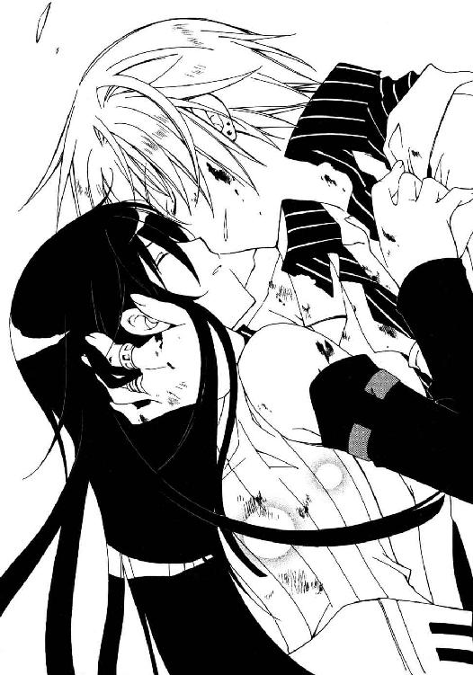
星すら砕くかと思わせる、真紅の爆裂が巻き起こった。
広がる爆風に押され、バーンが転倒する。彼の上に覆い被さるようにアーティアは身を伏せ──やがて肌を焼く熱風も、敷石を浮かせて砕く振動も収まると、辺りには耳鳴りのような残響だけが残った。
慎重に頭を持ち上げ、彼女は周囲を見回す。
頭上にひずみが浮かんでいた。ゆらゆらと景色を歪める、爆発が生んだ巨大な陽炎だ。真下の石畳は高密度の熱波に晒されたせいで、熔解してガラス状に結晶している。そのガラス化した地面に──腐臭を放つ、黒ずんだ大岩のような肉塊が蠢いていた。
「ぅあ、冗談......だろ!?」
絶望的な呻き声をこぼしながら、バーンがふらふらと上体を起こす。高々度に精錬した《罪人竜の息吹》に、身体がついてこれなかったのだろう。
気を失わなかっただけでも及第点か──小さく息をつき、その胸を叩いてやる。
「......案ずるな」
「え？」
「決着はついた」
確信とともに呟いた瞬間、ぶちゅ、と破裂音を鳴らし、肉塊が腐汁を噴き出した。
続いてその表面に次々と断裂が走る。そこから腐肉が剥離していき──やがて、溶け崩れた腐肉の海の中にうずくまる、ブランディン・オーツの姿が現れた。
彼の周囲には、薄青色の光沢を放つ人型の機械やら、目を回して転がるシム・ジュニアまで、肉塊に取り込まれたものが無秩序に散らばっている。
「ど......どうなってるの、これ」
「奴の──ブランディンの《息吹》を灼き、竜の記憶を封じた」
呆然として呻く弟子に、アーティアは振り返らずに答えてやる。
「完全に喰われる前だったから命は助かった。......が、もう二度と《息吹》は宿せまい。星の理に背き腐竜へ堕ちた、それが奴の払う代償だ」
「《息吹》を灼く、って......そんなマネまで出来るわけ、君？」
「《息吹》の扱いにかけて私の右に出る者は、ノルグの里にもそうはいないさ」
少しだけ得意げに言ってから、彼女はこっそり、声に出さずに付け加えた。
（......私一人じゃ、きっと出来なかったことなんだけど）
そっと胸を押さえてみる。不思議な熱はまだそこに灯り、燃えさかっていた。
緩む口元を隠すように、彼女は首を捻っているバーンを小突く。
「それより、いつまでぶっ倒れとるのだお前は。とっとと起きんかい」
「自分は一人じゃ立てないくせに......あ痛ッ！ 痛いってちょっと、酷くないそれ!?」
聞き咎めたので頬の傷を指でつついてやると、彼は悲鳴を上げながら跳ね起きた。抱えられたまま、アーティアが短く鼻を鳴らした、その時──
『──竜はこの先だ！ 総員、疾く駆けよ！ 正義は我にありいぃぃ......!!』
彼方から、大人数の喊声と足音が聞こえてくる。一緒に、ここ数日ですっかり耳馴染みになってしまった野太い大声も。思わず苦い顔になる。
ブロック・キャリバー──〈抗竜党必死開拓団〉が追いついてきたらしい。
「......それ、逃げるぞ弟子よ。あとは、連中に任せればいいだろう」
「へ？ い、いいの？ ブランディンを捕まえるのも君の使命なんだろ？」
「捕まえるべき、なのだろうがな......」
目を丸くするバーンから視線を逸らし、小声で答える。
「今回のことは、道を外れぬよう奴を導けなんだ私の責任でもある......星守りの力は封じたのだ、わざわざ連れ帰り、これ以上罰せられる必要もなかろう」
「ハ......ッざけんなよ............」
と──ぴしゃり、水の跳ねる音がして、張り詰めた声が響き渡る。
黒ずんだ顔を歪め、腐肉の中に片膝をついたブランディンが凄絶に嗤っていた。
「情けをかけたつもりなら、後悔させてやる。俺は諦めねぇ......何度でも、挑む......ッ！ アーティアぁ......必ず、必ずテメェをッ、屈服させてや──」
「──そんなこと、させないッ!!」
不意に、震えた叫び声がブランディンの言葉を断ち切った。
驚き、バーンを見上げる。地獄から這い上がってきたようなブランディンの眼光にがちがちと歯を鳴らしながら、それでも彼は、目を逸らさなかった。
「させるもんか！ また彼女を傷付けるつもりなら、たとえアンタが竜徒でも、こっここッ、この僕が、許さないぞ！............許さないつもりだぞ！」
「予防線を張るなたわけ」
言い直すバーンを引っぱたいてから、横目にブランディンを見やる。毒気を抜かれた顔でバーンを眺めている彼へ小さく、だがはっきりと、彼女は告げた。
「そういうこと、らしいぞ。観念して人間の街で罪を償え」
「......ハ。テメェが、人間にここまで入れ込むとはね──竜工芸も託すわけだ」
皮肉げに呟くブランディンの言葉に、彼女は顔をしかめる。
意味の分かっていないであろうバーンが、間の抜けた顔で首を捻った。
「竜工芸って......この指輪だよね」
「そうさ。ひひ、フラットランド。そいつをしっかり調べてみることだな。もしそのガキの髪が使われてたら............カハ......面白いことになる」
「！ な、だッ、黙れ！ 貴様なにをっ────!?」
狼狽するアーティアに、ブランディンは下卑た笑声を上げて身体を揺らした。
一人、蚊帳の外に置かれた形のバーンが、少し寂しげに口を挟んでくる。
「なんの話？ 確か君、髪の毛使ってるって言ってたよね。この虫除け」
「だ、だから厄払いの......いやどうでもいい！ 余計なことを言うな馬鹿モンが！」
呻くバーンに怒鳴り返す彼女を、ブランディンは歪んだ笑みで睥睨する。
「どうした、教えてやりゃいいじゃねぇか......竜工芸を託すのは誇りをかけて信頼する者のみ......だからそこには、託す者の想いを込めるんだ、ってな」
「想いを込める......？ なにそれ」
「──へッ、くだらねぇ願掛けさ。戦いに赴く奴には生きて帰るための〝絆〟を繋ぐ、血の染みた品を渡す。使命を背負った奴には苦難を断つ〝強さ〟を与える、竜の牙が託される、ってな。......そして自分の髪を使った品を与えるってことは、こ」
「ちぇすとぉッ!!」
それはほぼ、一瞬の出来事だった。
バーンの腕から転げ落ちると、アーティアは石畳の破片を掴んで気合一閃、回転した勢いのままブランディンに投げ放った。無茶な姿勢で投擲された石片はそれでも的確にブランディンの額を打ち、彼をふたたび腐肉の海へと沈める。
「ちょ、なにやってんのさ!? 身体、大丈夫かい!?」
「う、うるさい......早く引き上げるぞ。一刻も早く。風よりも速く」
駆け寄ってくるバーンに仏頂面を向け、答えをはぐらかす。彼は不可解そうな顔をしながらも彼女を抱え上げ、踵を返してひょこひょこ歩き始めた。危なっかしく揺れる腕の中で、アーティアはわずかに唇の端を持ち上げる。
不思議な気分だった。
母親ノルガンディアのもとで修行に明け暮れていた頃は感じることはなかった、どこまでも気分が高揚して、叫びだしたいような気分。
それは明らかに野蛮で、低劣で俗悪で。
しかしおそらく、明日の荒野を踏破するためには欠かせない想い──
「──ブランディン！」
唐突に、アーティアは叫んだ。
驚いたバーンが足を止めかけるが、そちらを見上げ、首を振ってやる。
立ち止まる必要はない。なにも大げさなことはないのだ。
「な、んだよ......クソッ！」
額を押さえて唸るブランディンへ、彼女はバーンの肩越しに指を突きつけた。
本当に不思議な気分だ。
こんな奇妙な気持ちを表す言葉など、たった一つしか持ち合わせがない。
だからこれ以上ないほど気分良く──彼女はニヤリ、笑ってやる。
「てやんでえだ」
エピローグ
ここ最近、ウィリアム・グリンバーグ少年の朝は早かった。
日の出より前に目を覚まし、毎朝、七歳の子供にとっては少し無茶な距離のコースを走るのが日課である。実は喧嘩に勝つための特訓なのだと父親にこっそり告白したら、彼はまず仰天し、それから笑ってくれた。母さんには内緒にしておけと助言も添えて。
この前からなぜか通行禁止になっている通りを避け、脇の通りへ折れる。と。
とある酒場の前に、一台の二輪駆動機が停まっていた。車輪が太く、機体もどこか精悍さを感じさせる、おそらく荒野での走行も想定された代物だ。
好奇の眼差しで機体を眺めながら横を通りがかった時──サルーンからよたよたと出てきた背の高い男が、後部の荷台に古びた革の鞄を積み上げる。
その人物は思いがけず、彼の知った顔だった。
「あっ」
思わず声を上げた彼を訝しげに見下ろしてくるのは、上等の絹糸のようなブロンドに透き通る碧眼。旅装用のマントの下に流行のアクセサリーと服を着込んだ、どこか軽い印象を感じる整った顔立ちの青年。一週間前、ウィリアムがトレーニングを始めるきっかけとなった現場に居合わせた男だった。
「──あれ？ 君、もしかして......ええと。前に、そこの公園で喧嘩してた子？」
男もこちらを覚えていたのか、目を丸くして指をさしてくる。ウィリアムは大きく頷きながら、かさぶただらけの顔で笑って見せた。そして目を輝かせて、
「あのさ。あの時のお姉ちゃん、どこにいるか知らない？ お礼が言いたいんだ──」
喧嘩に負けた自分を叱咤し、ガッツを与えてくれた女性。彼女のおかげで自分は今、挫けず喧嘩を続けていられるのだ。もう一度会って礼を言っておきたかった。が......
ウィリアムはぎょっとして口を噤んだ──訊ねた瞬間、男の表情が一変したのだ。
男は微笑んでいた。不自然な、無理やり取り繕ったような微笑。
本能的に答えを察したウィリアムに、男は、予想に違わない言葉を口にする。
「......あの子は、もういないんだ」
◆□□◆
里に戻る──彼女にそう告げられたのは、夜が明けた直後だった。
「冗談だろ!?」
「本当だ。......これからすぐにでも発とうと思っている」
平板な言葉が、薄暗い店内に密やかに響く。
一度は引き払った、バーンがねぐらにしていた宿。彼らはその一階のサルーンを拝借し怪我の手当をしていた。街中に竜が現れるという大騒動に好奇心が刺激されたか、店内に人影はない。辺境の人間の物見高さがこの時ばかりはありがたかった。
「ブランディンは力を失い、他の者は......皆、死んだ。もうここに留まる理由はないし、お前の飲み込んだ《罪人竜の息吹》については──」
彼女は椅子を立つと、銀色の眼を少しだけ細めた。
「『《息吹》は既に人間の手に渡り、行方が知れない』......そう報告せねばならんからな」
「............え？」
「お前が《罪人竜の息吹》に呑まれかけていると知れば、里はお前を捕らえて縛封牢に監禁しようとするだろう。そうなれば、もう生きて日の目は見られない」
冷たい声で早口に言い、彼女は目を伏せた。
「それは、私の望むところではないのでな」
「そんな......だって、それは......！」
意味無く両手を動かし、もごもごと呟く自分の顔が相当に情けないものになっていることを、バーンは自覚していた。まるで駄々をこねている子供だ。
苦笑を浮かべて、アーティアは軽く肩をすくめる。
「そう悲観するな。この星は広い、どこぞに上手い解決策が転がっておるかも分からん。元の身体に戻る道が閉ざされたわけではない」
違う──そんなことじゃない。
叫ぼうとしたが、胸が詰まって言葉が吐けなかった。言いたいことはそんなことではない。《息吹》なんてどうでもいい。どうでもよくはないが、どうでもいいのだ。
支離滅裂な気持ちに翻弄されながら、必死に言葉を探す。いや。
言うべき言葉は知っている。ただ、それを口にすることが出来ない。なにも難しいことなどないはずの言葉。これまでも数え切れないほど口にしてきた言葉。
（僕は............君が............ッ!!）
だが──言えない。
星の数ほどの女性に愛を囁き、夢を見せてきた自分が、たった一言を口に出来ない。
本気でこの言葉を口にするということの、重さ。
それを背負うだけの覚悟が、自分にはまだ足りないのだ。
悔しさと情けなさに俯く彼の頬に、そっと何かが触れてくる。
「泣くな馬鹿もん。お前はもう、出会った頃の腰抜けではないだろうに」
ぼやけた視界に映るのは、こちらの顔を覗き込んでくるアーティア。
彼女は笑っていた。絆創膏だらけの顔で屈託なく、年齢相応の、少女の笑顔で。
「誇れバーン、胸を張れ。お前に芽生えたわずかな勇気を、私は心から祝福する」
そしてあっさり踵を返し、アーティアは真っ直ぐに店を出て行った。
一度たりとも振り返らず。告げるべき言葉を、告げさせてもくれないまま。
◆□□◆
それから、およそ一週間。
一週間も留まっていたのはただの未練だ。想い出に浸り、まどろんでいただけ。
（だけど、そろそろ起きなくちゃ）
荷物を荷台に固定し終えたところでふと、バーンは通りの向こうを見る。
先ほどの少年はアーティアがいないことにひどく落胆していたが、すぐに気を取り直して元気よく走り去っていった。喧嘩に勝つためのトレーニングらしい。
挑む魂。折れない矜持。がむしゃらにでも歩き続ける不屈の根性。
まったく上等。辺境に生きる男ならそうこなくてはいけない。
彼に負けるわけにはいかないだろう。同じ少女に導かれた兄弟子としては。
「ま......頃合い、だったよな」
──ブランディン・オーツとシム・リム・アビスパ・ジュニアは〈抗竜党必死開拓団〉が中央へ連行していき、カロリア・アルバはあれ以来、まったく行方が知れない。
加えてあの日、〈抗竜党必死開拓団〉に叩きのめされた時に大声でした「告白」。
野次馬の中には彼の「客」も何人か混じっていたのだ。おかげでしばらく街中の女性から逃げ回る日々が続いたのだが......どのみち、ここでの仕事はすでに限界だった。
マントを巻き直し、トランプホイールに跨る。瓦礫の下からどさくさに失敬してきた代物だが、大きな故障はなかった。燃料が要らず、機体の保つ限りどこまでも走っていける鋼の馬は、荒野を渡るのに向いたツールではあるのかも知れない。
どこまで走っていくにせよ、立ち止まるのはもう終わりだ。
空元気ではあるが気合いを入れ直し、バーンは叫ぶ。
「さあ、張り切って行くか！ こっから僕はビッグになるぞぉ────ッ!!」
「それはまた俗な根性だな」
──そして不意に背後からかけられた言葉に、地面へ転げ落ちた。
ひっくり返った視界に映ったのは幻覚か、何かのジョークなのか。
荷台に固定した鞄の上。そこにいつの間にか、ちょこんと誰かが腰掛けている。小さな身体に綺麗な長い黒髪。なにより、その雪のような銀色の瞳は見紛うはずもない。
アーティア・アリア・ノルガンディアが、半眼でこちらを見下ろしていた。
「あッ──アーティア!? ななっ、なんで君が!? はぁ!?」
「ついさっき飛び乗ったんだが。よくも無視しおったな、弟子め」
「ま、まあちょっとセンチに考え事なんかしてたから......いやそうじゃなくて!!」
じとりと睨まれたじろぎながら、バーンは慌てて首を振った。
跳ね起きる彼を涼しげに眺め、アーティアが腕を組む。
「話を聞いていなかったのか？ 私は《罪人竜の息吹》を奪還できなかったと里に報告する......あの時、そう言ったろう」
「それはまあ......そんなようなことは言ってたけど」
「《罪人竜の息吹》は白峰ノルグ最大の禁忌だ。取り戻せなかったと言って、それで済むはずがないだろう」
そこで一度嘆息して、彼女は腕を組んだまま器用に肩をすくめた。
「──使命を果たせなんだ与太者は、咎を負ったのさ。あと数年、私は住みよいノルグの里を離れ、俗悪な人間の世界で《罪人竜の息吹》を捜索しなくてはならない」
「咎、って......」
なんでもないことのように告げる彼女を、バーンは驚愕の表情で見つめる。
（あの、使命のために僕を殺そうとまでしたアーティアが......無能者の咎を負った？）
それは──途方もない屈辱のはずだ。少なくとも、出会った頃の彼女にとっては。
だが、目の前で細い肩をそびやかせる少女の顔は晴れやかだった。一点の曇りもないとはさすがに言えないが、銀の双眸に後悔の色は見えない。
「......お前、ここを離れるのか？」
「あ、ああ、うん。僕も自分なりに、色々やってみようって......思って、その」
荷物を見下ろして訊いてくる彼女に、バーンはなんとなく気後れしながら頷いた。
アーティアは唇を笑みの形にして、ほんのわずか首を傾ける。
「なるほど。──では、行くか」
「............え」
「ついでに道すがら、修行の続きをつけてやる。お前はまだまだ未熟だからな」
「ちょッ──ま、待って？ マジ待って、意味分かんない。それって、つまり......？」
「察しの悪い奴め。......お前の道行き、私も共に行くと言っているんだ」
──唖然。
絶句して硬直するバーンに不安げに顔を曇らせると、彼女は慌ててそっぽを向く。
「お、お前のせいで、私は母様の顔に泥を塗ったんだ。よもや不服とは言わせんぞ！......む、無論、本当に嫌だというなら......なんだ............その......嫌、か？」
早口にまくし立てる言葉は、どんどん尻すぼみになっていく。最後には、アーティアは不安に耐えきれなくなったように横目でこちらを窺ってきた。
バーンは答えない──ただ笑み返す。彼女が、ほっと安堵の息をついた。
言葉にせずとも、この程度には分かり合える。
言葉にしなくてはならないのは、もっと大事なことだ。
「アーティア。君に、伝えなきゃいけないことがあるんだ」
きょとんとする彼女を見つめ、高鳴る鼓動を必死に抑える。
（大丈夫......今なら出来る。一週間、覚悟を固める時間だけはあったはずだ）
本気でするなら、それは勇気が要ることだ。シム・リム・アビスパを騙すことより、おっかない竜徒に立ち向かうことより、百倍も勇気が要ることだった。
意識から景色と音が消える。世界にはただ自分とアーティアのみがいた。
無音の世界に二人だけとなった瞬間、バーンは震える唇を開き、想いを口にする。
「アーティア、僕は────僕は、君が好きだッ！」
「ほう」
「..................。あれ、それだけ？ り、リアクション薄くない？」
あまりといえばあまりの素っ気なさに、二人だけの世界はあっという間に崩壊した。
うろたえるバーンをむしろ冷ややかに見つめ、アーティアは不機嫌顔で唸る。
「......お前、私の前で何人に同じことを言ったか忘れたわけではあるまいな」
「いや忘れたけど。......あ、いや違うよ、君はホント違うんだよ!? 本気だよ!?」
......そういえば修行中、何度か彼女にナンパの現場を見咎められていた気がするが。
「誤解だ、信じてくれアーティア！ 僕が、僕が本当に好きなのは君だけなんだよ!!」
「光栄だな。さて、さっさと出発するぞ。この機械は今ひとつ気に喰わんが」
「話を聞いてくれええええええええッ!?」
朝の街に、悲痛な絶叫が響き渡った。
「──ところでアーティア、ずっと訊きたかったんだけど」
バーンがそんなことを言ってきたのは、街を出発して数十分も経った頃だった。
荒野を疾走するトランプホイールの後部に座り、アーティアはしがみついた彼の背に額をぶつけ、聞いているという意思表示を返す。片手は首に巻かれた茜色の襟巻に触れていた──失くしたと思っていたものをバーンが渡してくれたのだ。
「......竜工芸に髪を使うのって、結局どういう意味があったんだい？」
「ッ!? ば、馬鹿モン！ いきなりなんちゅう事を訊く!?」
「痛っ！ 痛いってアーティア、危ないから！ 転ぶから！」
胴を締め付け背中に頭突きをくれてやると、バーンは慌てた悲鳴を上げた。その拍子に機体が危なっかしく揺れるが、彼はしつこく食い下がってくる。
「教えてくれよー。なんか変な意味があっても、絶対大事にするって約束するからさー」
「......ッ!? う、うううっさいわい！ 意味なんかあるかっ！」
力一杯腹を締め上げてやると、さすがに彼もそれ以上訊いてはこない──声が出せなかっただけかも知れないが──。自分でも分かるほど紅潮した顔を彼の背に押しつけて、アーティアはばくばくと脈打つ心臓を落ち着けるべく深い息をついた。
（教えられるわけないじゃない......！）
血には〝絆〟を。
牙には〝強さ〟を。
そして髪には──己の〝心〟を託す意味があるなどと！
髪を使ったのはあくまで代用だし、彼はその意味を知らないとはいえ......大事にするなどと面と向かって言われるのはきまりが悪いというか、正直、とにかく恥ずかしい。
ただそれは屈辱ではない、もっと熱く、胸の昂揚するような感覚だったのだが──
【............私も、まだ未熟者ってことなのかな】
「？ なんか言ったかい？」
「なんでもない」
怪訝そうに振り向くバーンの顔を、アーティアは苦笑を浮かべて押し戻した。
「それよりお前、これからどうするつもりだ。なんぞ行くアテでもあるのか？」
「いや、別になんも」
バーンは気楽な調子で微笑んで、ひらひらと片手を振る。
「とりあえず、どこか他の街に落ち着いてから考えようかなって思ってた」
「......杜撰な奴め。急ぎでなかったなら、カロリアに会ってくれば良かったな」
と──カロリアの名が出た途端、彼は気まずそうに視線を泳がせた。
不可解な反応に、アーティアは眉をひそめる。
「なんだ、カロリアがどうかしたか？」
「その、まあ......道々話すよ。長い先行きになるだろうしね」
歯切れの悪い物言いは気にかかったが、話してくれるなら、急かす意味はない。
軽く息をつき、彼のマントをぎゅっと掴む。
「短い先行きでけりが付くよう努力せんか、お前は」
「無理したってキツいばっかりだよ」
おどけた声で答えてから、バーンはふと、独り言めいた口ぶりで呟いた。
「気楽に気ままに。陽気に愉快に。可愛い女の子と楽しく、ってね。......ようやく、僕のスタイルでやっていけそうだ」
地平の彼方へ向けられたゴーグル越しの碧眼は、思わず見入ってしまうほどに強く、真っ直ぐな光を灯している。その言葉には、嘘も迷いもありはしなかった。
（......私にもできるのかな）
頬に当たる砂塵を感じながら、ふと考える。
里の教えが世界の全てと思い込んでいた私にも、自分の──アーティア・アリア・ノルガンディアのスタイルを見つけることが。
それは、容易なことではないだろう。だが不可能なことでもないはずだ。
少なくとも彼女の前には今、根性なしで臆病者の、不肖の弟子がいるのだから。
彼の耳元に唇を寄せ、意地悪い声で言ってやる。
「──だが、その女が私であるとは限らない。だろう？」
「とんだ誤解さ！ 僕はもう、君以外の子になんか声もかけやしないよ──って、あ」
「......。ど阿呆め」
大仰に言いながら景気よく火を吐くバーンに、アーティアは半眼で嘆息した。風になびく襟巻を押さえながら、ふと前方を眺めやる。
道もないまま限りなく、荒野はどこまでも広がっていた。
【終】
あとがき
◆オープニング
多くの方は初めまして！
覚えていてくださった方、アミーゴ!!
「見つけたぞガガンボーフニャゴゲイザー、我が一族の仇！」という方、お疲れ様です。
人呼んで坂照鉄平でございます。前作からどえらい時間が過ぎてしまいましたが、こうして再び本を出させていただくはこびとなりました。ありがたやー。
今このページを開いているあなたは、本屋さんであとがきチェックしてみようと手に取ってくれたのでしょうか？──なら、レジに持っていきましょうぜ。十ページくらいありますぜ、あとがき。足疲れますぜ。げっへっへ。
中身の方を読んでくださったあなたは、どうだったでしょうか？ 微笑、爆笑、苦笑に失笑、かわいそうな子を見る憫笑と、あなたの口元に微妙な笑いを刻むことができたでしょうか？「ああ、バカなんだな」と思っていただけたら、筆者的には大成功です。最近はバカと呼ばれることに悦びすら覚えます。さあもっと罵って、ぶって！ 踏んづけて!!
......ヒかないで、ヒかないでッ!?
のっけから不気味なジョークで百馬身ほどフライングダッシュをかけてみました。なんでと訊かれると困るのですが、たぶんこれ書いてるのが深夜二時だからです。
書き終えたら絶対見返さないで提出しようと決意しました。
◆「Ｌ」
というタイトルですよ。
もう時節柄スリルとサスペンスがぼとぼとしたたるナイスタイトルなのですが、実はこれ、編集部のお力を借りてつけています。任せっきりではさすがに男が廃ると、泣き入れてサブタイトルつけさせてもらった次第です。
まったく心当たりがないのですが、なぜか僕のタイトルに関するネーミングセンスはかなり疑問視されているらしいです。ていうか提出した無数のタイトル案がことごとく屍の山を築いているので、らしいとか言ってる余地ありません。疑問視されています。
本当にセンスがアレなのかはともかく、編集部が当時、常に顔を隠して徘徊するベラ・ルゴシ似の吸血鬼に操られていた可能性もゼロではありますまい。というわけで確認のため、ネタ帳から目についた案をひとつ引っ張ってみます。
・ホトトＫｉｓｓ
センスがアレなようです。
......記憶にないんですが、僕これいつ書いたんでしょう。
◆もういっちょ「Ｌ」
三ページ目にしてようやく作品の話に。
本作は、顔と口先だけの軽薄詐欺師が竜の力を秘めた少女と出会い、共に開拓辺境という栄光と陰謀に満ちた大地で繰り広げる勇気と恋と成長の物語を目指して盛大に失敗した物語──待って早いですよ、棚に戻すのは早いですよ!?
ひとことで言うならば、大嘘つきの主人公と竜の母親に育てられた少女によるどたばたコメディ......で、いいのかな（オイ）。ラブコメと呼んでもアクションと呼んでもファンタジーと呼んでも、それぞれのジャンルのファンに怒られそうな気がします。
だいたいその辺りの要素をまとめて煮込んだような、前作とは違った方向に恥ずかしい作品と思っていただければ幸いです。バカ＆ラブ＆ヒート。
そも、この話は友人と（講義中に）していた無駄話が発端でした。
友人「ドラマとか映画のキスシーンの凄さが分かるか？」
坂照「なに？」
友人「奴らは銃撃戦の最中だろうが沈む船の上だろうが隕石が降ってきてようが、ところかまわずキスする。あんなんおかしいと思うだろ？」
いきなり大教室の真ん中でそんなこと力説するそいつの方が億倍おかしいと思わなかったわけではないですが、彼は構わず続けます。
友人「でもあれは違うんだよ。実は奴らは、キスしてるからこそ助かったんだ。ラブの力が銃弾を逸らして、船を持ち上げ、隕石をぶっ壊すんだよ」
坂照「ディカプリオ沈んでなかったっけ？」
友人「（スルーして）お前も小説でキスシーン書くなら、あれくらい熱いキスを書かなきゃダメだぜ。愛だ、時代は愛だぞ。マジで。ラブ。俺たちにはラブが足りねぇ」
坂照「なにかあったの、お前」
聞いたらなんかデートをドタキャンされた（二回目）らしいですが、それはともかく勉強になる話です。「へー、キスって隕石ぶっ壊せるんだ」と間違った知恵袋をすり込まれたままいろいろ考えます。帰宅ラッシュの総武線で、不審げな眼差しを独り占めしてぶつぶつ呟くわけですよ。「熱いキス、熱いキス、熱いキスねえ────」
もうビーム出すしかないじゃないですか。無論じゃないですか。
というわけで、ホラと火を吹く詐欺師というトチ狂った主人公像が固まったのでした。企画書にも「火とかビームとか吐きます」と明記したところ、すがすがしい失笑を買いました。くそう。
......ところで、キスで隕石ぶっ壊す映画なんかありましたっけ？
◆一年間の軌跡
さっき本人に確認したら「ないんじゃね？」とのたまってくれました。いや話題引きずるならトピックを変えるなというまっとうにして正しい指摘はさておいて。
さておいたのでなにごともなかったように続けますが、かようにイカれた経緯で設定が決まったのが去年の今ごろ、書き始めたのは三月末からだったでしょうか。
早くも一年が経とうとしています──思えばいろいろなことがありました。
詐欺師の話と言うことで参考に『スティング』のＤＶＤ買ったんですが、いまだ未見で放置してます。ていうか買ったのを今思い出しました。ロボコップとか一気観してる場合じゃないです。他には竜の生態の研究と称してポッケ村に入り浸っては、デカい蟹とか猿とかばっかり狩ってました。......おっかねぇんだよ、ティガレックスがよッ（地団駄）!!
あのゲームも発売から一年、この本が出る頃には続編も発売されているはずです。よしショップへ走ろう。
◆一年間の軌跡？
あ、あれ？ 軌跡が薄い。
実のところ、原稿自体は去年の六月くらいに完成していました。そこから編集さんにご指摘いただきながら推敲していたわけなのですが、最初にできた原稿は四百ページくらいありまして。それから慌てて削りまくって現在のページ数になったわけです。
そんなわけでこの一年間のメイン作業はひたすら修正でした。
そうなんです、一年も修正してるのになあ............ついこのあいだ校正さんに凄まじいミスを指摘されたときはほんと縮んで死のうかと思いました。
なにがいけなかったんでしょう。ロボコップでしょうか。ロボコップめ。
◆ロボコップと言えば
このあとがき書きながらもしつこくロボコップ観てるわけですよ。
昨日はダイハードとダーティハリー観てました。狙ったわけじゃないのですが、奇しくも主人公は全員刑事です。一番重武装なのはもちろんロボコップなんですが、この二人とケンカしたらロボコップ負けるんじゃねえかとふと考えてしまいます。
平成二十年の世に僕はなんの話をしてるんでしょう。
◆サンクスパレード
さてさて、本書が世に出るまでおびただしい数の人の尽力がありました。ロボコップ言ってる場合じゃありませんよ。この場を借りてお礼をば。
本作はいろんな事情により、三人の編集さんの手を渡って育て上げられました。
ネタ出しにつき合ってくださった旧姓Ｓさん。
作品の方向性を一緒に考えてくださった前担当Ｍさん。
そして初稿から現在に至るまで怒濤の世話と迷惑をかけまくっている現担当Ｓさん。皆さんのご指導・ご指摘がなければ本書の存在はあり得ませんでした。
一週間でイラスト●枚というジャック・バウアーより苛酷なスケジュールの中、雑誌のカラーまで描いてくださった水城葵さん。素敵なイラストをありがとうございます！ 特にアーティア、頭の中覗かれたのかと思うほどイメージ通りで鳥肌モンでした。初めて頂いた彼女のイラストに大興奮、深夜に友達のバイト先に持っていって延々自慢しウザがられたのも今はいい想い出です（待て）。
友人どもへ。飲みの席で「Ｌ」の話をしたときの「......え？ お前まだ作家やってたんだ」の一言がなければもう少し心穏やかに書けたのにこの野郎。覚えてろよ。
前作へファンレターをくださった方々へ。もう、本当に......軽々しくサンクスを言えないくらい感謝しています。原稿を書き始めた頃、ちょっといろいろあったのですが、皆様の手紙のおかげで乗り切ることができました。ご恩は今後の精進と結果をもってバシッと返させていただきます！ どうか懲りずに見守ってやってください!!
そして最後に。
月並みすぎるほど月並みな言いかたですが、この方への感謝を除くことはあり得ません。
今この本を手にとってくださっている、『あなた』へ。
心からありがとうございます。
願わくば、また次巻の巻末でお目にかかれることを。
◆エンディング
といったところで、ページも良い具合になくなってきました。
ところで皆様、さっきこっそり書いた言葉にお気づきでしょうか。
『次巻』
おお、なんと妙なる響きッ！
ありがたくも本作「Ｌ」は、続刊を予定しております。一応。......本書の売り上げがよっぽどトホホなことになったりしたらあっさりなかったことにされるんじゃないかと戦々恐々なわけですが。出せるといいなぁ......
気分はほとんど電●少年とはいえ、ともあれ本書を手に取られたのもなにかのご縁。
これからも皆様の口元へ微妙な笑いをお届けできるよう根性入れて参りますので、尻の一つも張ってやるつもりで、読んでやっていただければ幸いです。
それでは本当に最後に。
でっかい不安と、野望を込めて............ああ、おっかない。
また、『次巻』の巻末でお会いしましょうッ!!
二〇〇八年 三月 坂照 鉄平
Ｌ
詐欺師フラットランドのおそらくは華麗なる伝説
坂照鉄平
平成24年11月22日 発行
発行者 山下直久
発行所 株式会社富士見書房
〒102-8144 東京都千代田区富士見1-12-14
http://www.fujimishobo.co.jp/
(C)2008 Teppei Banjo, Aoi Mizuki/Fujimishobo